TRAVPLAN · PAPER STUDY · 2026-10
논문 46편으로 읽는
보도 로봇 자율주행
인식 · 플래닝(모델 기반 / 학습 기반) · 제어(모델 기반 / 학습 기반) · 안전 · 시뮬레이션. 한 편에 세 장 — 개요, 방법과 단계별 유도, 결과와 한계 · travplan에 주는 시사점.
1 인식
2 플래닝 · 모델
3 플래닝 · 학습
4 제어 · 모델
5 제어 · 학습
6 안전
7 시뮬레이션
CONTENTS
일곱 챕터, 파이프라인 순서
CH1 · 9편 · 27장
인식
LSS · Elevation Mapping · emap_cupy · BADGR · WVN · V-STRONG · RoadRunner · DINOv2 · Trajectron++
CH2 · 4편 · 12장
플래닝 · 모델 기반
Dijkstra · A* · Hybrid A* · DWA · TEB · Nav2/Smac · MPOT
CH3 · 9편 · 27장
플래닝 · 학습 기반
iPlanner · ViPlanner · ViNT/NoMaD · NavDP · Diffusion Policy · GoalFlow · π0 · NaVILA · CityWalker
CH4 · 6편 · 18장
제어 · 모델 기반
MPPI · Robust MPPI · log-MPPI/SMPPI · ProxPI · MPPI-Generic · Cautious GP-MPC
CH5 · 6편 · 18장
제어 · 학습 기반
PETS · IKD · RMA · TD-MPC2 · DreamWaQ · LP-ACRL
CH6 · 7편 · 21장
안전
CBF-QP · HJ 도달 가능성 · 예측 안전 필터 · Poisson 안전 함수 · RA/DRA-MPPI · CVaR-BF · Conformal
CH7 · 5편 · 15장
시뮬레이션
Isaac Lab · MetaUrban · URBAN-SIM · 도메인 랜덤화 · Sim2Real 예측력
읽는 법
한 편에 세 장
① 개요 → ② 방법과 단계별 유도 → ③ 결과·한계·travplan
출처: travplan 리서치 문서 — 인식 §A, Planner §B, Controller §E·§C, 시뮬레이션 §S · 각주 번호 [1]–[48]은 마지막 참고문헌과 이어진다
CHAPTER 1 · 인식 §A
센서에서 TravMap까지
높이 지도를 어떻게 쌓나 → 그 위에 비용을 어떻게 매기나(기하 → 자기지도 → 기반 모델) → 움직이는 사람을 어떻게 예측하나.
| 연도 | 논문 | 한 줄 |
|---|---|---|
| 2014–18 | Elevation Mapping | 셀마다 높이·분산을 Kalman 필터로 융합한다 |
| 2020 | Lift-Splat-Shoot | 카메라 특징을 깊이 분포로 BEV에 올린다 |
| 2020 | Trajectron++ | 제어 입력을 예측해 적분하는 보행자 예측 |
| 2021 | BADGR | 겪은 사건을 라벨로 쓰는 행동 조건부 예측 |
| 2022 | elevation_mapping_cupy | GPU 높이 지도 + 상한 층 |
| 2023 | DINOv2 | 라벨 없이 배운 범용 특징 |
| 2024 | V-STRONG · RoadRunner · WVN | 주행 경험으로 traversability를 배운다 |
CH1 인식 · 2020 · ECCV · NVIDIA
Lift-Splat-Shoot — 영상을 BEV로 올린다 [1]
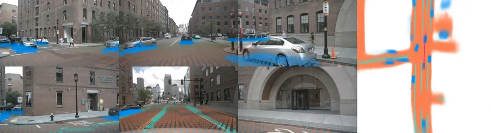
Fig. 1 — 여러 카메라(왼쪽) → BEV 의미 지도(오른쪽) [1]
픽셀마다 깊이 분포를 예측해 특징을 3D 절두체로 들어 올리고(lift), BEV 격자에 뿌린다(splat).
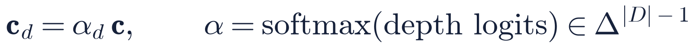
문제
카메라는 깊이를 모른다. 여러 대의 영상을 한 좌표계(BEV)로 합쳐야 계획이 쓸 수 있다.
방법
특징 c와 깊이 확률 α의 외적으로 깊이 bin마다 특징을 놓고, pillar 합산으로 BEV에 모은다. 템플릿 궤적을 BEV 비용 위에 쏘아 고르는 계획(shoot)까지 한 네트워크로 학습한다.
결과
이후 BEVFormer·BEVFusion·occupancy 연구 대부분이 이 lifting을 바탕으로 한다.
travplan
채택하지 않는 자동차 계보지만, 카메라만으로 TravMap을 만들 때(전면 스테레오, TP-0065) 거치는 표준 경로다.
[1] Philion & Fidler, “Lift, Splat, Shoot: Encoding Images from Arbitrary Camera Rigs by Implicitly Unprojecting to 3D”, ECCV 2020 — arXiv:2008.05711
CH1 인식 · LIFT-SPLAT-SHOOT · 방법을 식으로 따라가기
깊이를 하나로 정하지 않고, 분포로 뿌린다
1
Lift — 픽셀마다 특징 \(\mathbf c\in\mathbb R^C\)와 이산 깊이 bin \(D\)개의 분포 \(\boldsymbol\alpha\)를 낸다. 둘의 외적(outer product)이 깊이 bin마다 놓일 특징이다.
2
3D 점 — 깊이 bin \(d\)의 점을 카메라 intrinsic 행렬 \(\mathbf K\)와 자세 \((\mathbf R,\mathbf t)\)로 차체 좌표에 놓는다. 카메라 수와 배치는 이 식에만 들어간다.
3
Splat — 같은 BEV 셀(pillar) \(\mathcal P_{xy}\)에 떨어진 점의 특징을 모두 더한다. 정렬한 뒤 cumsum 한 번으로 계산한다.
4
Shoot — 전문가 궤적을 클러스터링한 템플릿 \(\tau_k\)마다 BEV 비용 \(c_o\)를 더하고, 비용의 softmax로 전문가 템플릿을 맞힌다.
숫자로 따라가기
한 픽셀의 깊이 분포가 10 m 0.1, 11 m 0.7, 12 m 0.2이면 특징의 10 %·70 %·20 %가 광선 위 세 점에 놓인다. 깊이가 애매한 픽셀은 광선을 따라 번진다.
왜 이렇게 하나
깊이 하나를 회귀하면 틀린 깊이에 특징이 통째로 놓인다. 분포는 미분 가능하므로, 깊이 supervision 없이 BEV 과제만으로 깊이를 배운다.
함정
깊이 분포가 틀리면 특징이 광선 방향으로 번진다. BEVDepth는 이 깊이가 얼마나 틀리는지 재고 LiDAR 깊이를 supervision으로 썼다.
[1] Philion & Fidler, “Lift, Splat, Shoot: Encoding Images from Arbitrary Camera Rigs by Implicitly Unprojecting to 3D”, ECCV 2020 — arXiv:2008.05711
CH1 인식 · LIFT-SPLAT-SHOOT · 후속과 한계
정방향 lifting vs 역방향 query — 이후 5년의 갈래
| 방법 | 연도 | 방향 | 바꾼 것 |
|---|---|---|---|
| Lift-Splat-Shoot | 2020 | 정방향 | 깊이 분포 × 특징을 BEV로 뿌림 |
| BEVFormer | 2022 | 역방향 | BEV 셀 query가 영상 특징을 가져옴. nuScenes NDS 56.9(+9.0) |
| BEVDepth | 2023 | 정방향 | LSS 깊이의 오차를 재고 LiDAR 깊이로 supervision |
| BEVFusion | 2023 | 융합 | 카메라와 LiDAR를 같은 BEV에서 합침 |
| FB-BEV | 2023 | 둘 다 | 정방향과 역방향의 장단점을 합침 |
출처: travplan 인식 문서 §A.2, 배경 §0.1. 수치는 각 논문의 nuScenes test 보고값.
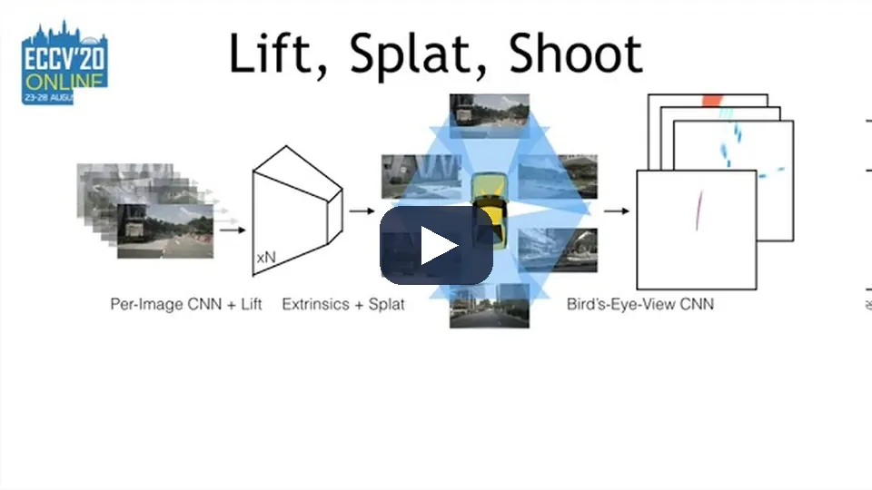
정방향은 깊이를 맞혀야 하고, 역방향은 셀마다 높이 기준점을 정해야 한다. 어느 쪽이든 카메라만으로는 깊이가 약점이다.
한계
· 깊이 정보가 희박한 먼 거리와 가려진 곳에서 BEV가 흐려진다
· 자동차 데이터(nuScenes)로 배운 높이 범위는 보도 턱 몇 cm를 다루지 않는다
· 출력이 의미 BEV라 높이·경사 같은 기하 채널이 따로 없다
travplan
채택하지 않은 자동차 계보다. 카메라로 TravMap을 만들 때(전면 스테레오, TP-0065)는 깊이를 스테레오로 직접 재므로 Lift의 깊이 분포 대신 측정 깊이를 쓴다.
[1] Philion & Fidler, “Lift, Splat, Shoot: Encoding Images from Arbitrary Camera Rigs by Implicitly Unprojecting to 3D”, ECCV 2020 — arXiv:2008.05711
CH1 인식 · 2014 CLAWAR / 2018 RA-L · ETH RSL
Robot-centric Elevation Mapping [2]
로봇 중심 2.5D 격자에서 셀마다 높이와 분산을 1차원 Kalman 필터로 갱신한다. 로봇 자세의 불확실성은 셀의 수평 불확실성으로 전파한다.
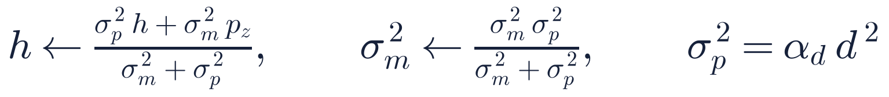
핵심 직관
오래전에 본 평지는 계속 믿을 만하고, 턱 가장자리에서만 불확실성이 커진다 — 이웃 높이의 퍼짐이 수평 불확실성을 높이 구간으로 바꾸기 때문이다.
문제
다리 로봇은 foothold 높이가 필요한데, 위치 추정이 드리프트하면 전역 지도가 깨진다.
방법
지도를 로봇 좌표계에 두고, 측정 분산 σₚ² = α·d²(거리 제곱 비례)로 정밀도 가중 평균한다. 자세 공분산을 셀로 전파해 최소·최대 높이 구간을 낸다.
결과
ANYmal 계열 보행 연구의 표준 지도가 됐다. ANYbotics/elevation_mapping(BSD-3, ★1.9k).
travplan
TravMap의 ELEV·SIGMA 채널의 원형. L1 인식 루프는 이 계보의 GPU 판(다음 장)을 쓴다.
[2] Fankhauser et al., “Robot-Centric Elevation Mapping with Uncertainty Estimates”, CLAWAR 2014 · Fankhauser, Bloesch & Hutter, “Probabilistic Terrain Mapping for Mobile Robots with Uncertain Localization”, RA-L 2018
CH1 인식 · ELEVATION MAPPING · 셀 높이 갱신 유도
두 가우시안의 곱 → 정밀도 가중 평균
1
셀의 현재 belief \(\mathcal N(h,\sigma_m^2)\)과 새 점 높이 \(\mathcal N(p_z,\sigma_p^2)\)는 같은 높이에 대한 독립 증거다. 둘을 곱하면 다시 가우시안이다.
2
지수의 이차항을 맞추면 정밀도(분산의 역수)가 더해진다. 새 분산은 둘보다 작다.
3
일차항을 맞추면 평균은 정밀도 가중 평균이다. 분산이 작은 쪽을 더 믿는다.
4
측정 분산은 거리 제곱에 비례하고, 로봇이 움직이면 자세 불확실성 \(\Sigma_P\)가 셀의 수평 불확실성으로 누적된다. 이웃 높이를 \(\Sigma_P\)로 가중해 최소·최대 높이 구간을 낸다.
숫자로 따라가기
셀 \(h=0.10\) m, \(\sigma_m^2=0.0004\); 먼 점 \(p_z=0.16\) m, \(\sigma_p^2=0.0012\).
\(h^{+}=(0.0012\cdot0.10+0.0004\cdot0.16)/0.0016=0.115\) m, \(\sigma_{+}^{2}=0.0003\). 먼 점이라 25 %만 반영됐다.
왜 이렇게 하나
평지에서는 이웃 높이가 모두 같아 수평 불확실성이 높이 구간을 넓히지 않는다. 턱 가장자리에서는 이웃이 달라 구간이 넓어진다 → 불확실해지는 곳이 정확히 위험한 곳이다.
함정
Mahalanobis 거리 \(|p_z-h|/\sqrt{\sigma_m^2+\sigma_p^2}\)가 크면 이상치로 버린다. 그래서 갑자기 생긴 진짜 장애물도 첫 몇 점은 버려질 수 있다.
[2] Fankhauser et al., “Robot-Centric Elevation Mapping with Uncertainty Estimates”, CLAWAR 2014 · Fankhauser, Bloesch & Hutter, “Probabilistic Terrain Mapping for Mobile Robots with Uncertain Localization”, RA-L 2018
CH1 인식 · ELEVATION MAPPING · CPU판에서 GPU판으로
같은 식, 무엇이 더해졌나
| 기능 | CPU판 (2014·2018) | GPU판 (2022) | travplan |
|---|---|---|---|
| 셀 높이 갱신 | 1D Kalman | 같은 식을 CUDA 커널로 | TravMap ELEV |
| 불확실성 | 분산 + 자세 전파 | 분산 + 시간 감쇠 | SIGMA 채널 |
| 동적 물체 | 없음 | 광선 추적 가시성 정리 | L1에서 사용 |
| 못 본 셀 | 없음 | 상한(upper bound) 층 | 그림자 상한 TP-0044 |
| traversability | 외부 모듈 | 학습 CNN 필터 | 기하 비용 + TravNet |
출처: travplan 인식 문서 §A.2b, Planner 문서 §B.14.1
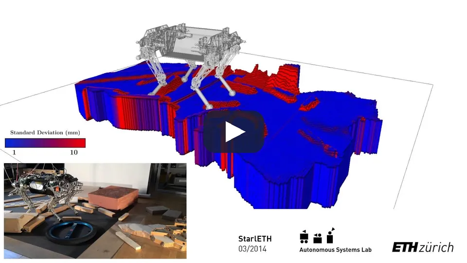
핵심 식은 그대로다. 바뀐 것은 속도와, "못 본 셀"과 "지나간 물체"를 다루는 층이다.
한계
· 2.5D라 셀마다 높이가 하나 — 다리 밑·처마 같은 오버행을 못 그린다
· 자세 추정이 크게 틀리면(미끄러짐) 지도가 겹쳐 그려진다
· 분산이 실제 오차를 맞히는지는 따로 재야 한다
travplan
TP-0054에서 매퍼 분산이 보정되지도 않고 오차 순위도 맞히지 못한다는 것을 확인했다. 그래서 TravMap SIGMA는 매퍼 분산이 아니라 다른 신호로 채운다.
[2] Fankhauser et al., “Robot-Centric Elevation Mapping with Uncertainty Estimates”, CLAWAR 2014 · Fankhauser, Bloesch & Hutter, “Probabilistic Terrain Mapping for Mobile Robots with Uncertain Localization”, RA-L 2018
CH1 인식 · 2022 · IROS · ETH RSL
elevation_mapping_cupy — GPU 높이 지도 [3]
점마다 CUDA 커널로 셀을 갱신하고, 드리프트 보정·가시성 정리·학습 traversability·법선을 모두 GPU에서 한다.
상한 층: 광선이 못 본 셀 위를 지나가면 그 셀의 지면 ≤ 광선 높이
상한의 기울기가 작으면 가려진 안전한 구멍, 크면 위험한 낙차
문제
CPU 판은 점이 많으면 느리고, 지나간 사람이 지도에 남고, 못 본 셀을 해석할 수 없었다.
방법
Kalman 갱신 + Mahalanobis 이상치 제거 + 광선 추적 가시성 정리 + 상한 층 + 학습 traversability CNN.
결과
DARPA SubT와 여러 4족 실험에 배포됐다. MIT 라이선스, ★1.1k, Jetson Orin 포트가 있다.
travplan
L1 인식 루프의 코어다(TP-0053). 상한 층으로 포트홀을 판별한다는 생각이 그림자 상한(TP-0044)의 근거다. 반 칸 어긋남 버그는 TP-0146에서 고쳤다.
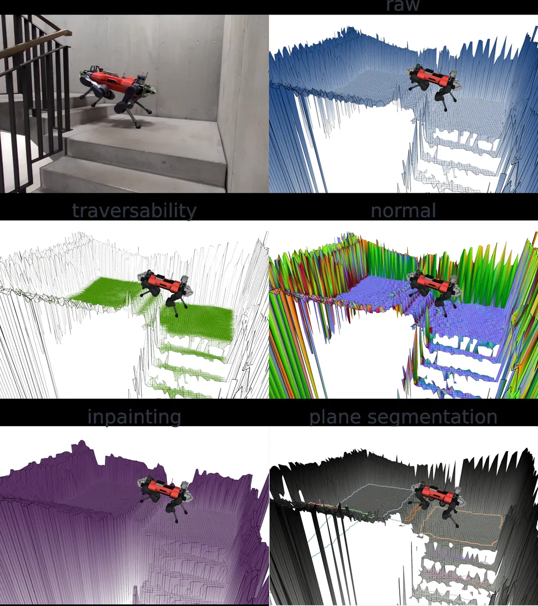
Fig. 1 — GPU 파이프라인 [3]
[3] Miki, Wellhausen, Grandia, Jenelten, Homberger & Hutter, “Elevation Mapping for Locomotion and Navigation using GPU”, IROS 2022 — arXiv:2204.12876
CH1 인식 · ELEVATION_MAPPING_CUPY · 광선이 주는 두 가지 정보
뚫고 지나갔으면 지우고, 위를 지나갔으면 상한을 둔다
1
센서 \(\mathbf s\)에서 점 \(\mathbf p\)까지 광선을 셀 단위로 따라간다. 셀 \(c\)를 지날 때의 광선 높이는 선형 보간으로 구한다.
2
가시성 정리 — 이미 아는 셀인데 광선이 그 셀 높이보다 아래로 지나갔다면, 그 높이의 물체는 지금 거기 없다(지나간 보행자). 그래서 지운다.
3
상한 층 — 모르는 셀 위를 광선이 지나갔다면, 그 셀의 지면은 광선보다 높을 수 없다. 여러 광선 중 가장 낮은 것이 상한이다.
4
상한의 기울기가 판별자다. 가려진 평지는 광선이 얕게 스쳐 상한이 평평하고, 진짜 낙차는 광선이 구멍 안을 훑어 상한이 가파르다.
숫자로 따라가기
센서 높이 0.6 m, 4 m 앞 지면 점. 연석 뒤 2 m 셀 위를 지날 때 광선 높이는 \(0.6+0.5\cdot(0-0.6)=0.3\) m → 그 셀 지면 ≤ 0.3 m. 이것만으로는 턱인지 구멍인지 모른다.
왜 이렇게 하나
상한은 "없다"가 아니라 "이보다 높지 않다"는 부분 정보다. 미관측을 자유공간으로 보면(costmap) 포트홀에 빠지고, 장애물로 보면 아무 데도 못 간다.
travplan
travplan 그림자 상한(TP-0044)은 상한 값을 쓴다. 논문의 기울기 검정은 아직 쓰지 않는다 — 인식 문서 §A.2b.7이 TP-0048에 넣을 규칙으로 적어 두었다.
[3] Miki, Wellhausen, Grandia, Jenelten, Homberger & Hutter, “Elevation Mapping for Locomotion and Navigation using GPU”, IROS 2022 — arXiv:2204.12876
CH1 인식 · ELEVATION_MAPPING_CUPY · 속도와 travplan L1 실측
매핑은 병목이 아니다 — 문제는 못 본 셀의 해석
Xavier · Realsense 6,276점
49.4 Hz
10×10 m, 4 cm
Xavier · Bpearl 43,074점
20.0 Hz
travplan GPU 경로
3.5×
CPU와 비트 단위 동일 · TP-0153
| travplan L1 (권장 설정, 레벨 3, 120판) | guidance | planner_df | planner_d |
|---|---|---|---|
| 도달 | 110 | 115 | 110 |
| 치명 실패 | 4 | 2 | 0 |
권장 L1: --shadow-ceiling --shadow-depth 0.10 --stereo --unknown-near 1.5 --shadow-low-fill --pit-margin 0.05 (TP-0146·0148)
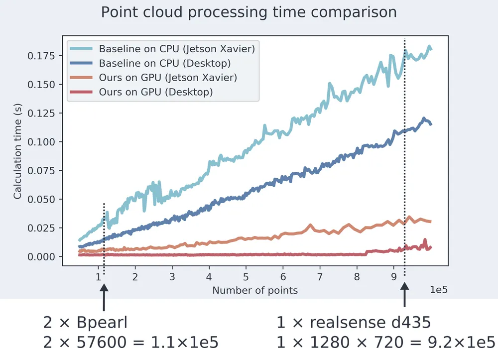
Fig. 7 — 점 수에 따른 처리 시간: GPU는 완만하고 CPU는 가파르다 [3]
한계
· 반 칸 어긋남: 래퍼가 매퍼 셀을 시뮬 격자와 반 칸 어긋나게 읽었다 — TP-0146에서 홀수 셀 수로 맞췄다
· 포트홀 가장자리의 mixed pixel이 구덩이를 얕게 채운다 — TP-0148이 구덩이에만 한 칸 여유를 둔다
· 플러그인 일부는 chainer 의존이라 travplan은 끄고 쓴다
travplan
L1 인식 루프(--perception l1)의 코어다. TP-0146 이전의 L1 수치는 어긋난 지도의 것이라 비교에 쓰지 않는다.
[3] Miki, Wellhausen, Grandia, Jenelten, Homberger & Hutter, “Elevation Mapping for Locomotion and Navigation using GPU”, IROS 2022 — arXiv:2204.12876
CH1 인식 · 2021 · RA-L · UC Berkeley
BADGR — 겪은 사건을 예측해 계획한다 [4]

Fig. 5 — 행동 조건 사건 예측 모델 [4]
기하만 보면 키 큰 풀밭이 벽이다. 로봇이 실제로 겪은 사건(충돌·충격·위치)을 라벨로 삼는다.
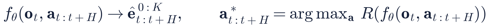
문제
기하 기반 내비게이션은 지나갈 수 있는 풀을 피하고, 사람 라벨과 시뮬레이션은 비싸다.
방법
영상 + 미래 행동 열 → 사건 예측. 시간 상관 행동 샘플을 보상의 지수 가중으로 평균해 계획한다(MPPI와 같은 구조).
결과
실제 도시·오프로드 데이터만으로 학습했다. 데이터를 더 모을수록 스스로 나아졌다.
travplan
travplan 구조의 원형이다. travplan은 이것을 둘로 나눴다 — 사건 예측은 TravMap 비용(TravNet 자기지도, TP-0010), 행동 최적화는 Planner D + MPPI.
[4] Kahn, Abbeel & Levine, “BADGR: An Autonomous Self-Supervised Learning-Based Navigation System”, RA-L 2021 — arXiv:2002.05700
CH1 인식 · BADGR · 예측 모델과 계획의 식
사건 예측기 위에서 지수 가중 평균으로 계획한다
1
모델 — CNN이 영상 \(\mathbf o_t\)를 요약해 RNN 초기 상태로 넣고, RNN이 행동을 하나씩 받아 각 스텝의 사건 \(K\)개(충돌·충격·위치)를 낸다.
2
학습 — 라벨은 로봇이 실제로 겪은 사건이다. 충돌·충격은 분류 손실, 위치는 회귀 손실로 더한다. 사람 라벨은 필요 없다.
3
계획 — 사건에 대한 보상 \(R\)(목표 방향 + 충돌·충격 페널티)이 가장 큰 행동 열을 매 스텝 다시 푼다.
4
최적화 — 현재 해 주변에서 시간 상관 샘플을 뽑고(\(\beta\)가 상관 정도), 보상의 지수 가중 평균으로 갱신한다. MPPI와 같은 구조다.
왜 이렇게 하나
"풀이 장애물인가"를 사람이 정하지 않는다. 로봇이 지나가 보고 충격이 없었으면 다음부터 지나간다. 데이터가 늘수록 스스로 나아진다.
핵심
MPPI와의 대응: \(\gamma\leftrightarrow 1/\lambda\), \(R\leftrightarrow -S\), 시간 상관 샘플 ↔ SMPPI의 변화율 샘플. 다른 점은 보상이 학습한 예측에서 나온다는 것 하나다.
함정
예측기가 본 적 없는 행동 열(빠른 급회전)에서는 사건 예측이 틀린다. 계획이 그 허점을 파고들 수 있다.
[4] Kahn, Abbeel & Levine, “BADGR: An Autonomous Self-Supervised Learning-Based Navigation System”, RA-L 2021 — arXiv:2002.05700
CH1 인식 · BADGR · travplan과 나란히 놓기
한 모델로 합치느냐, 중간 표현으로 나누느냐
| 역할 | BADGR | travplan |
|---|---|---|
| 라벨 | 겪은 충돌·충격·위치 | 발자국 아래 셀의 자세·수직 가속 proxy (FootprintLabeler) |
| 예측 | 영상 + 행동 열 → 사건 | TravNet: 기하 특징 → cost, σ (TP-0010) |
| 중간 표현 | 없음 (end-to-end) | TravMap[8, H, W] |
| 계획 | 지수 가중 샘플 최적화 | Planner D 후보 16개 → MPPI |
| 학습 장소 | 실제 도시·오프로드 | 운동학 시뮬 (오프라인) |
출처: 인식 문서 §A.10.1, travplan representation/self_supervised.py

BADGR은 "기하상 막혀 보여도 실제로는 지나갈 수 있는 풀밭"을 배웠다. TravNet이 기하 비용을 경험으로 고칠 때 노리는 효과가 같다.
한계
· 행동 조건부 예측이라 계획 horizon H가 모델 구조에 고정된다
· 사건이 드문 위험(낙차)은 라벨이 거의 없어 배우기 어렵다
· 중간 표현이 없어 다른 Planner·Controller와 나눠 쓰기 어렵다
travplan
travplan이 TravMap을 공통 표현으로 고집하는 이유: Planner 셋(Guidance·learned·Planner D)과 Controller 넷(MPPI·smooth·tracker·NMPC)이 같은 지도를 읽고 같은 벤치마크에서 비교된다.
[4] Kahn, Abbeel & Levine, “BADGR: An Autonomous Self-Supervised Learning-Based Navigation System”, RA-L 2021 — arXiv:2002.05700
CH1 인식 · 2024 arXiv / 2025 Autonomous Robots · ETH RSL · Oxford
Wild Visual Navigation — 현장 5분 학습 [5]
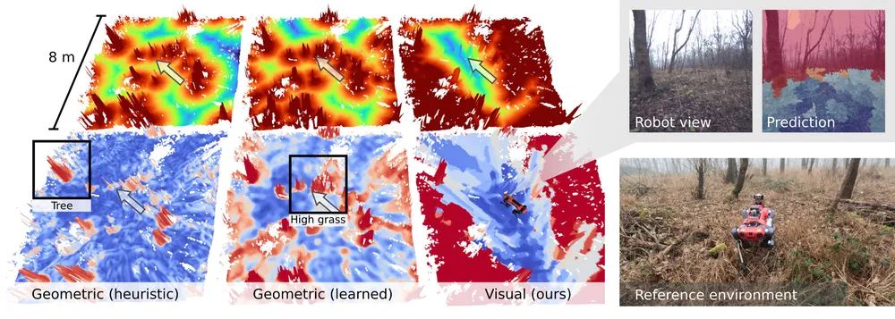
Fig. 7 — 기하 휴리스틱 · 학습 기하 · WVN의 지도 비교 [5]
고정한 DINO 특징 위에 작은 헤드를 얹고, 사람이 원격조작하는 동안 속도 추종 오차를 라벨로 삼아 온보드에서 학습한다.
라벨 = “명령한 속도를 얼마나 따라갔나” (proprioception)
문제
기존 자기지도 방법은 로봇별 데이터로 오프라인 학습한 뒤 적응 없이 배포한다. 새 숲에 가면 데이터를 다시 모아야 한다.
방법
DINO-ViT(384차원) + STEGO 특징을 SLIC segment 단위로 평균해 2층 MLP에 넣는다. 공유 오토인코더의 재구성 오차로 신뢰도를 낸다. 라벨 생성·학습·추론을 동시에 돌린다.
결과
새 환경에서 5분 안에 적응한다. 기하 방법은 높은 풀을 장애물로 보고, WVN은 통과 가능으로 본다.
travplan
TP-0010(시뮬 접촉·슬립 로그로 TravNet 자기지도)과 같은 구조라 가장 가까운 참고 구현이다. 예측을 raycasting으로 elevation_mapping_cupy에 붙인다.
[5] Mattamala, Frey et al., “Wild Visual Navigation: Fast Traversability Learning via Pre-Trained Models and Online Self-Supervision”, Autonomous Robots 2025 — arXiv:2404.07110
CH1 인식 · WILD VISUAL NAVIGATION · 라벨과 신뢰도의 식
명령한 속도를 얼마나 따라갔는지가 라벨이 된다
1
라벨 — 명령 속도 \((\bar v_x,\bar v_y)\)와 추정 속도의 오차를 1D Kalman 필터로 평활화하고 시그모이드로 \([0,1]\)에 넣는다. \(k\), \(v_{\text{thr}}\)는 플랫폼마다 맞춘다.
2
특징 줄이기 — DINO-ViT 픽셀 특징(384차원)을 SLIC·STEGO segment \(\mathbf M\) 단위로 평균해 영상당 약 100개 embedding만 남긴다.
3
라벨 붙이기 — supervision graph(링 버퍼)가 발자국 궤적을 과거 영상에 투영한다. 로봇이 밟은 segment만 \(\tau\) 라벨을 받는다.
4
학습과 신뢰도 — 작은 MLP가 \(\tau\)를 회귀하고, 함께 학습한 오토인코더의 재구성 오차로 "낯섦"을 잰다. 낯선 segment는 통과 불가 쪽으로 당긴다.
숫자로 따라가기
명령 0.5 m/s 직진인데 추정 0.3 m/s → \(v_{\text{err}}=0.02\). \(v_{\text{thr}}=0.02\)이면 \(\tau=0.5\). 바퀴가 헛도는 진흙일수록 \(\tau\to0\).
왜 이렇게 하나
오프라인 학습은 새 숲에서 다시 데이터를 모아야 한다. WVN은 라벨 생성·학습·추론을 동시에 돌려 현장에서 몇 분 만에 적응한다. 가중치는 5 s마다 공유한다.
함정
"지나가지 않은 곳 = 통과 불가"로 배우면 자기 라벨에는 잘 맞지만 실제 traversability를 반영하지 못한다. 평가 라벨에 따라 순위가 뒤집힌다(다음 장).
[5] Mattamala, Frey et al., “Wild Visual Navigation: Fast Traversability Learning via Pre-Trained Models and Online Self-Supervision”, Autonomous Robots 2025 — arXiv:2404.07110
CH1 인식 · WILD VISUAL NAVIGATION · 수치로 본 결과
2분 시연으로 보도 2.45 km — 하지만 진흙에서 개입
Hilly · 픽셀 정확도
81.05 %
사람 라벨
Forest
82.45 %
Grass
78.21 %
| 관찰 | 수치 |
|---|---|
| 보도 따라가기 (Oxford Parks, 2분 미만 시연 후 학습 끔) | 0.55 · 0.5 · 1.4 km |
| 자기지도 라벨로 재면 순위 역전 (Hilly) | 87.51 · 88.32 대 WVN 78.58 |
| 환경 간 전이: Grass → Forest | 73.22 % (Forest 모델 82.45 %) |
| DINO-ViT 추론 · Jetson Orin | 17.0 ms, 전체 2.5 Hz |
출처: 인식 문서 §A.7, Planner 문서 §B.16 (RSS 2023판 Table III·V·VI)

한계
· 둘째 주행(낯섦에 페널티를 덜 줌, FPR 0.3)에서 길과 닮은 진흙 풀밭을 길로 판단해 큰 개입 5회
· 같은 날 몇 km 안에서도 환경이 바뀌면 성능이 떨어진다 → 현장 적응이 전제
· 사람이 지형마다 원격조작해야 한다 (후속 COTRATE가 겨냥)
travplan
TravNet 자기지도(TP-0010·0022)는 "밟은 셀만 라벨" 발상을 가져왔다. 바퀴 로봇에서는 모듈 명령 속도와 오도메트리의 차이(슬립)가 속도 오차에 해당하고, Isaac 마찰 패치 실험(TP-0059)이 이를 쓸 곳이다.
[5] Mattamala, Frey et al., “Wild Visual Navigation: Fast Traversability Learning via Pre-Trained Models and Online Self-Supervision”, Autonomous Robots 2025 — arXiv:2404.07110
CH1 인식 · 2024 · ICRA · University of Washington
V-STRONG — 기반 모델 + 대조 학습 [6]
1 · 라벨
사람이 운전한 궤적을 영상에 투영
2 · 거르기
스테레오 깊이로 가려진 궤적 점 제거
3 · 대조
SAM 마스크 단위: 지나간 영역 vs 나머지
4 · 사용
costmap → MPC에 바로 연결
문제
오프로드 traversability 라벨은 비싸고, 픽셀 단위 양성 라벨(지나간 곳)만 있고 음성은 없다. 새 지형에 일반화가 약하다.
방법
비전 기반 모델(SAM) 인스턴스 마스크로 “같은 물체 = 같은 traversability” 단위를 만들고, 궤적이 지나간 마스크와 나머지를 대조 학습한다.
결과
공개 벤치마크와 자체 데이터에서 기존 최신 방법을 크게 앞섰고, 새 환경에서 zero-shot·few-shot 일반화가 좋았다. 코드 공개(shjung13/V-Strong).
travplan
PRD TP-0010의 참고 목록에 있다. 양성만 있는 라벨 문제는 배경 §0.9의 PU learning과 같은 문제다. 실물 단계에서 TravNet 의미 채널의 후보다.
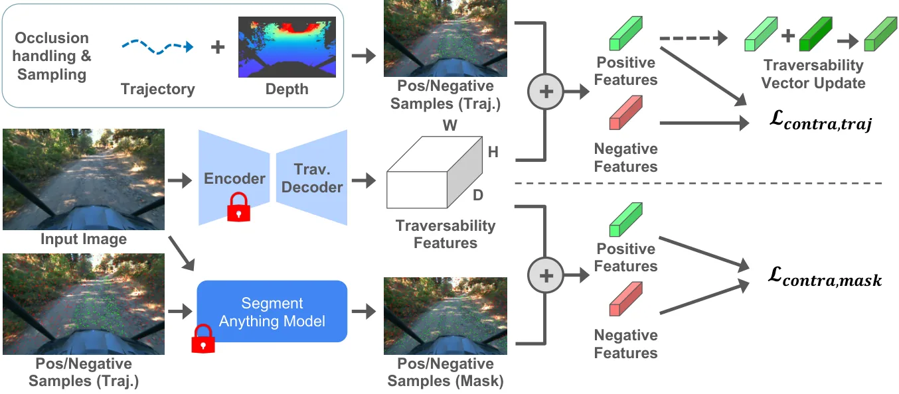
Fig. 3 — 궤적·스테레오 깊이로 샘플을 만들고 SAM 마스크 단위로 대조 학습 [6]
[6] Jung et al., “V-STRONG: Visual Self-Supervised Traversability Learning for Off-road Navigation”, ICRA 2024 — arXiv:2312.16016
CH1 인식 · V-STRONG · 대조 학습을 식으로
같은 마스크는 끌어당기고, 다른 마스크는 밀어낸다
1
양성 영역 — 사람이 운전한 궤적 점을 영상에 투영하고, 스테레오 깊이보다 뒤에 있는(가려진) 점은 버린다.
2
단위 정하기 — SAM 인스턴스 마스크 \(m\)이 궤적과 겹치면 마스크 전체를 양성으로 본다. 같은 물체 = 같은 traversability.
3
대조 손실 — 마스크 평균 특징 \(\mathbf z_m\)을 양성끼리는 가깝게, 양성과 음성은 멀게 둔다. InfoNCE 형태로 쓰면 다음과 같다.
4
비용 — 학습된 특징과 양성 prototype의 유사도를 costmap으로 바꿔 MPC에 바로 넣는다.
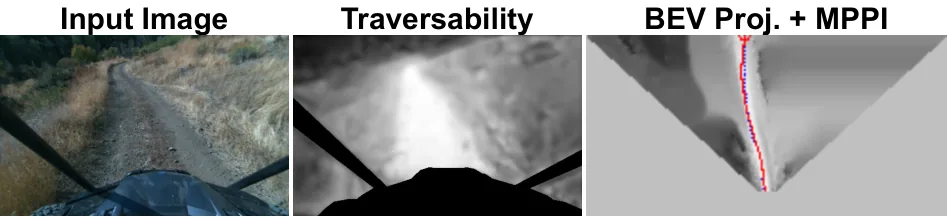
Fig. 6 — 입력 영상 → traversability → BEV 투영 + MPPI 궤적 [6]
왜 이렇게 하나
궤적은 길 위의 좁은 영역 하나만 지나간다. 픽셀 단위로 배우면 그 옆의 같은 아스팔트가 음성이 된다. 마스크 단위 학습이 이 거짓 음성을 없앤다.
핵심
양성만 있고 음성이 없는 라벨 문제는 PU(positive-unlabeled) learning과 같은 문제다(배경 §0.9). 대조 학습은 "다른 마스크"를 음성으로 대신 쓴다.
함정
셋째·넷째 줄의 식은 대조 학습의 일반형으로 적은 것이다. 논문의 정확한 손실·유사도 정의는 원문(arXiv:2312.16016)에서 확인한다.
[6] Jung et al., “V-STRONG: Visual Self-Supervised Traversability Learning for Off-road Navigation”, ICRA 2024 — arXiv:2312.16016
CH1 인식 · V-STRONG · 같은 계열의 2026년
기반 모델을 traversability에 맞추는 세 가지 길
| 방법 | 어떻게 | 보고된 결과 |
|---|---|---|
| V-STRONG (2024) | SAM 마스크 단위 대조 학습 | 기존 최신을 크게 앞섬, zero/few-shot 일반화 |
| ViTA (2026-05) | SAM2 + 학습 prompt, 기하 지식 증류 | 최고 IoU·정밀도, 거짓 양성 크게 감소 |
| CATNAV (2026-03) | VLM zero-shot 비용 + 의미 캐시 | VLM 호출 85.7 % 감소, 도달 +10 %p |
| PIVOT (2026-09) | 기하 기본, 막힐 때만 VLM, 실측으로 보정 | 자율 비율 59.6 → 97.0 %, 개입 11 → 3회 |
출처: 인식 문서 §A.10.1–A.10.2
VLM은 기본 비용이 아니라 막혔을 때의 보조 판단으로 쓴다 — PIVOT의 구조가 travplan에 그대로 맞는다.
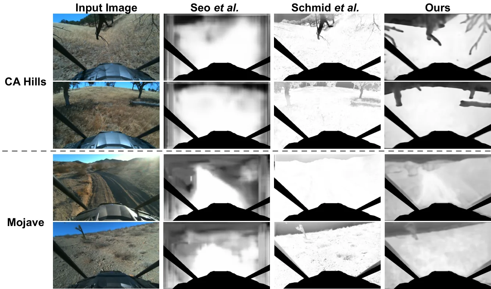
Fig. 5 — CA Hills·Mojave 정성 비교, 맨 오른쪽이 V-STRONG [6]
한계
· 양성 라벨이 사람 운전 궤적에서만 나와, 사람이 피한 곳은 영영 음성이다
· 의미가 같아도 물리가 다른 경우(젖은 잔디)를 마스크가 구별하지 못한다
· Orin 지연은 별도 확인이 필요하다
travplan
TravMap에 의미 채널을 더할 때의 후보다. 기하 TravMap이 평소 비용을 맡고, 기하상 막혀 보이는 풀밭·물웅덩이 앞에서만 학습 비용에 묻는다.
[6] Jung et al., “V-STRONG: Visual Self-Supervised Traversability Learning for Off-road Navigation”, ICRA 2024 — arXiv:2312.16016
CH1 인식 · 2024 · IEEE T-FR · ETH · NASA JPL
RoadRunner — 비용과 높이를 함께 [7]
자율주행의 BEV 센서 융합 구조로, 카메라·LiDAR에서 traversability와 elevation map을 한 번에 낸다.
지연
500 → 140 ms
라벨
사후 자동
문제
고속 오프로드에서는 영상이 흐리고 LiDAR 점이 희박하다. 기존 스택(X-Racer)은 느리다.
방법
주행 로그를 기존 스택으로 사후 처리해 라벨을 만들고(자기지도), BEV 융합 네트워크가 그 결과를 한 번에 예측하도록 학습한다.
결과
지연이 약 4배 줄고 비용·높이 정확도가 올랐다. 사막 고속 주행에 배포했다.
travplan
P2 PRD R-F-001의 모델 설계 참고다. “느린 고전 스택 = 교사, 빠른 네트워크 = 학생” 구도다.
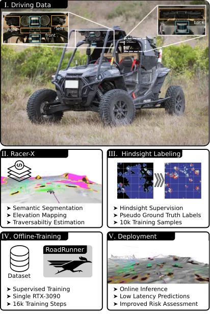
Fig. 2 — 사후 라벨 + BEV 융합 [7]
[7] Frey et al., “RoadRunner — Learning Traversability Estimation for Autonomous Off-road Driving”, IEEE T-FR 2024 — arXiv:2402.19341
CH1 인식 · ROADRUNNER · teacher–student를 식으로
느린 스택의 사후 결과를 빠른 네트워크의 정답으로
1
교사 — 기존 스택(X-Racer)을 주행 뒤에 돌린다. 미래 프레임까지 모아 만든 지도는 실시간 지도보다 정확하다.
2
학생 — 카메라와 LiDAR를 BEV로 올려 합친 네트워크가 현재 프레임만 보고 traversability와 높이를 한 번에 낸다.
3
손실 — 교사가 본 셀 \(\mathcal M_t\)에서만 두 출력의 오차를 더한다. 교사도 못 본 셀은 빠진다.
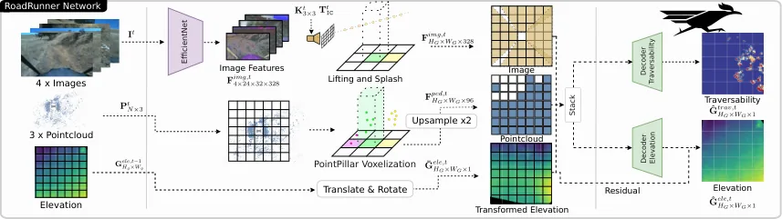
Fig. 5 — 카메라 4대 + LiDAR 3대 → BEV 융합 → traversability·높이 [7]
숫자로 따라가기
지연 500 ms → 140 ms. 시속 30 km(8.3 m/s)에서 지연 0.5 s는 4.2 m, 0.14 s는 1.2 m를 지도 없이 달리는 셈이다.
왜 이렇게 하나
오프라인에서는 시간을 들여 여러 프레임을 모을 수 있다. 그 결과를 정답으로 쓰면 사람 라벨 없이 "미래를 본 지도"를 실시간 네트워크가 흉내 낸다.
함정
학생은 교사보다 좋아질 수 없다. 교사 스택의 체계적 오류(예: 풀을 장애물로 보는 것)는 그대로 배운다. 식은 구조를 보인 개념식이다.
[7] Frey et al., “RoadRunner — Learning Traversability Estimation for Autonomous Off-road Driving”, IEEE T-FR 2024 — arXiv:2402.19341
CH1 인식 · ROADRUNNER · travplan에 옮기면
L1 매퍼를 교사로, 단일 프레임 네트워크를 학생으로
지연
500 → 140 ms
약 4배
배포
사막 고속
NASA JPL
라벨
사후 자동
사람 0
| RoadRunner | travplan에서의 대응 |
|---|---|
| 교사: X-Racer 사후 처리 | L1 매퍼(elevation_mapping_cupy) 누적 지도 / 시뮬 정답 지형 |
| 학생: BEV 융합 네트워크 | 단일 프레임 TravNet (P2 PRD R-F-001) |
| 출력: traversability + 높이 | TravMap COST + ELEV (+ SIGMA) |
출처: 인식 문서 §A.10.1, P2 PRD R-F-001
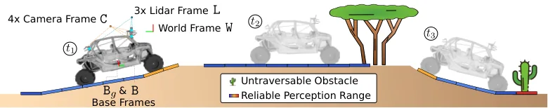
Fig. 3 — hindsight 자기지도: 뒤 시점의 측정이 앞 프레임의 정답 [7]
한계
· 교사가 못 본 셀은 학습 신호가 없다 — 포트홀처럼 가려지는 곳이 바로 그 셀이다
· 고속 오프로드용이라 보도 턱 몇 cm 정확도는 보고되지 않았다
travplan
시뮬에는 정답 지형이 있다. 교사를 매퍼 대신 정답 지형으로 두면 학생이 못 본 셀까지 배울 수 있다 — 다만 실물에서는 그 교사가 없다.
[7] Frey et al., “RoadRunner — Learning Traversability Estimation for Autonomous Off-road Driving”, IEEE T-FR 2024 — arXiv:2402.19341
CH1 인식 · 2023 · TMLR 2024 · Meta
DINOv2 — 라벨 없이 배운 범용 특징 [8]
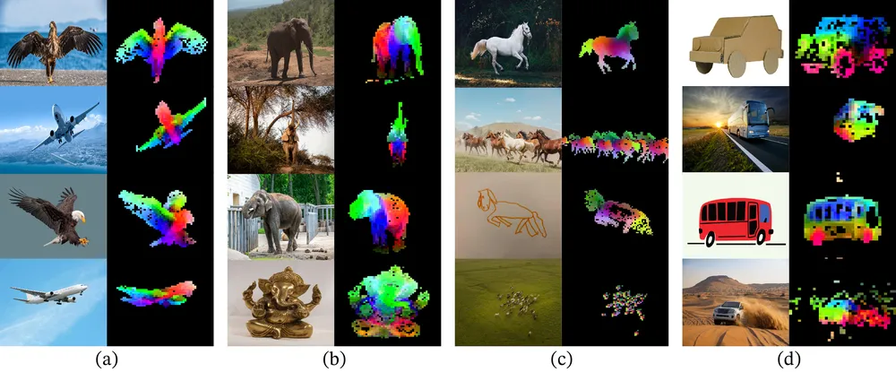
Fig. 1 — 패치 특징 PCA: 같은 부위 = 같은 색 [8]
데이터를 잘 고르고 규모를 키우면, 자기지도 학습도 과제와 무관하게 쓰이는 특징을 낸다.
학습 영상
1.42억
교사 ViT
1B → 증류
문제
로봇마다 분할·깊이 라벨을 모을 수 없다. 백본 하나로 여러 과제를 하고 싶다.
방법
웹 영상 풀에서 큐레이션 데이터와 닮은 영상을 자동으로 골라 LVD-142M을 만들고, 1B 파라미터 ViT를 자기지도로 학습한 뒤 작은 모델로 증류한다.
결과
영상·픽셀 단위 벤치마크 대부분에서 OpenCLIP을 앞섰다. 백본 고정 + 선형 헤드만으로 분할·깊이가 된다.
travplan
WVN·SALON·V-STRONG이 모두 이 계열 특징 위에 작은 헤드를 얹는다. TravMap에 의미 채널을 더할 때의 백본 후보다(§A.11).
[8] Oquab et al., “DINOv2: Learning Robust Visual Features without Supervision”, TMLR 2024 — arXiv:2304.07193
CH1 인식 · DINOv2 · 자기지도 목적함수
교사의 분포를 학생이 맞힌다 — 영상 단위와 패치 단위
1
교사와 학생 — 같은 영상의 두 crop을 각각 넣는다. 교사는 학생 가중치의 지수 이동 평균(EMA)이라 따로 학습하지 않는다.
2
영상 단위(DINO) — class token을 헤드에 넣어 프로토타입 점수의 softmax를 만든다. centering한 교사 분포와 학생 분포의 교차 엔트로피를 최소화한다.
3
패치 단위(iBOT) — 학생 입력의 패치 일부를 가리고, 가려진 패치 \(i\)마다 교사가 그 패치를 보고 낸 분포를 맞힌다.
4
DINOv3의 Gram anchoring — 오래 학습하면 패치 특징이 흐려진다. 초기 교사의 패치 유사도 행렬 \(\mathbf G=\mathbf X\mathbf X^{\top}\)에 맞추도록 제약한다.
왜 이렇게 하나
로봇마다 분할·깊이 라벨을 모을 수 없다. 라벨 없이 배운 특징이 dense하고 일반적이면, 로봇은 백본을 고정하고 작은 헤드만 배우면 된다.
숫자로 따라가기
규모: LVD-142M 1.42억 장, 교사 ViT 1B → 작은 모델로 증류. DINOv3는 7B 교사, 16.89억 장(LVD-1689M).
함정
DINOv3 가중치는 자체 라이선스다. 제품에 쓰려면 조건을 따로 확인한다.
[8] Oquab et al., “DINOv2: Learning Robust Visual Features without Supervision”, TMLR 2024 — arXiv:2304.07193
CH1 인식 · DINOv2 · 로봇이 이 백본을 쓰는 법
백본 고정 + 작은 헤드 — 2023년 이후의 표준
| 연구 | 백본 | 위에 얹은 것 | 라벨 |
|---|---|---|---|
| WVN | DINO-ViT / STEGO | 2층 MLP + 오토인코더 | 속도 추종 오차 |
| SALON | DINOv2 | 비용·속도 지도 | 주행 경험 |
| V-STRONG | SAM | 대조 학습 헤드 | 사람 궤적 |
| ViTA | SAM2 | 학습 prompt + 기하 증류 | 분할 + 기하 |
출처: 인식 문서 §A.7, §A.10, §A.11
WVN Table V: 자기지도로 사전학습한 DINO 백본이 ImageNet 지도학습 백본(ResNet-50, EfficientNet-B4)보다 세 환경 모두에서 나았다.
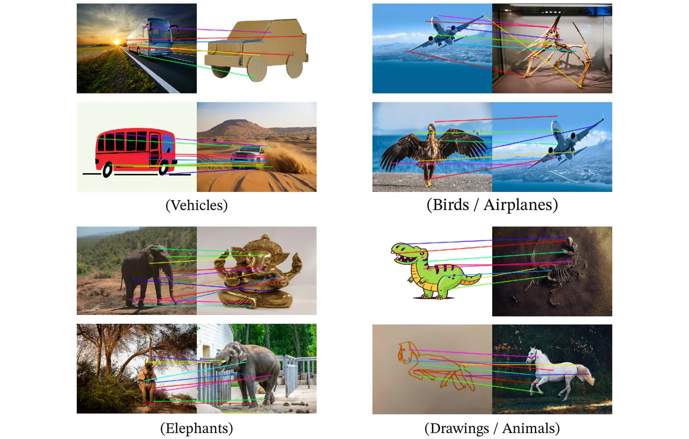
Fig. 10 — 고정 특징의 패치 매칭: 도메인·자세가 달라도 의미가 맞는다 [8]
한계
· ViT 추론이 Orin 연산 예산의 큰 몫을 차지한다 (WVN: DINO-ViT 17.0 ms)
· 특징은 의미를 담지만 높이·경사를 직접 담지 않는다
· 같은 탭의 Depth Anything·SAM 계열과 함께 쓰면 메모리가 커진다
travplan
TravMap에 의미 채널을 더할 때 백본 후보다. 지금 TravNet 입력은 기하 특징 넷(slope·step·rough·known)뿐이다.
[8] Oquab et al., “DINOv2: Learning Robust Visual Features without Supervision”, TMLR 2024 — arXiv:2304.07193
CH1 인식 · 2020 · ECCV · Stanford ASL
Trajectron++ — 동역학을 지키는 예측 [9]
위치가 아니라 제어 입력의 분포를 예측하고 동역학 모델로 적분한다 → 예측이 물리적으로 가능한 궤적이 된다.
문제
보행자의 미래는 여럿이고, 로봇의 계획이 그 미래를 바꾼다.
방법
장면 = 시공간 그래프(에이전트 노드, 상호작용 간선). LSTM + attention으로 이웃을 요약하고, 이산 latent 변수(모드 25개)를 둔 CVAE로 여러 미래를 낸다. decoder는 보행자 속도·차량 가속을 내고 적분한다.
결과
여러 실제 데이터셋에서 결정적·생성적 방법을 폭넓게 앞섰다. 로봇의 미래 계획을 입력으로 받아 조건부 예측이 된다.
travplan
지금 RiskCost는 등속 원판 + 시간에 커지는 반경이다. 등속 모델이 신경망을 이긴다는 보고(RA-L 2020)도 있어, 바꾸려면 폐루프 충돌률로 판정한다.
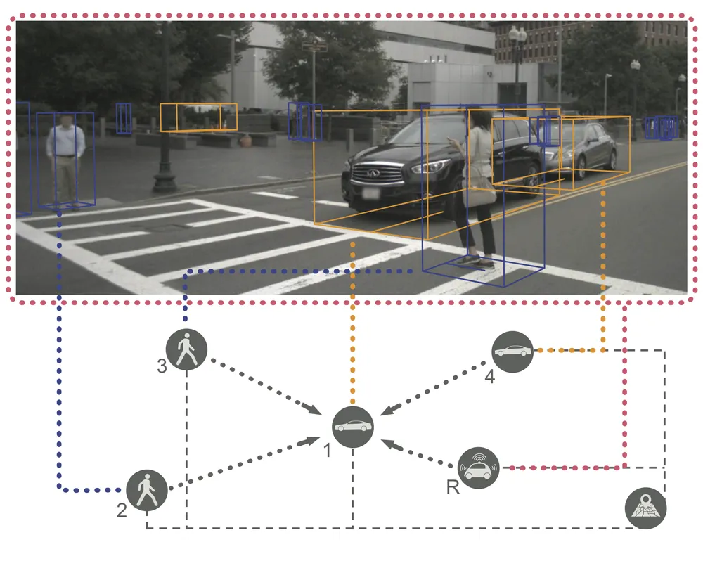
Fig. 2 — 장면 그래프 → 노드별 네트워크 [9]
[9] Salzmann, Ivanovic, Chakravarty & Pavone, “Trajectron++: Dynamically-Feasible Trajectory Forecasting With Heterogeneous Data”, ECCV 2020 — arXiv:2001.03093
CH1 인식 · TRAJECTRON++ · CVAE와 동역학 적분
여러 미래를 latent 모드로, 궤적은 적분으로
1
조건 요약 — 에이전트 \(i\)의 과거를 LSTM으로, 이웃의 영향을 간선 종류별 합 + attention으로 요약한다. 로봇 계획 \(\mathbf a^{R}\)도 조건에 넣을 수 있다.
2
다봉(multimodal) 분포 — 이산 latent \(z\)(모드 25개)로 미래를 혼합한다. 모드마다 다른 의도(왼쪽으로 비킴, 멈춤 …)를 맡는다.
3
학습(ELBO) — 미래를 본 posterior \(q_\phi(z\mid\mathbf x,\mathbf y)\)로 복원하고, prior와의 KL에 페널티를 준다. 정보 항으로 \(z\)가 무시되지 않게 한다.
4
동역학 적분 — decoder는 위치가 아니라 제어(보행자는 속도)의 가우시안을 내고, 적분해 위치 분포를 얻는다. 선형이라 분산도 닫힌 식으로 전파된다.
왜 이렇게 하나
위치를 바로 내면 순간이동하는 궤적이 나올 수 있다. 제어를 내고 적분하면 예측이 늘 물리적으로 가능하다.
숫자로 따라가기
\(\Delta t=0.4\) s, 속도 표준편차 0.3 m/s가 스텝마다 독립이면 4 s(10스텝) 뒤 위치 표준편차 \(\approx0.4\cdot0.3\cdot\sqrt{10}=0.38\) m.
travplan
travplan RiskCost는 등속 원판 + 시간에 커지는 반경(sigma_growth)이다. 위 상자의 \(\sqrt{t}\) 성장이 그 반경의 근거가 될 수 있다.
[9] Salzmann, Ivanovic, Chakravarty & Pavone, “Trajectron++: Dynamically-Feasible Trajectory Forecasting With Heterogeneous Data”, ECCV 2020 — arXiv:2001.03093
CH1 인식 · TRAJECTRON++ · 예측 정확도가 내비를 대변하나
ADE를 줄이는 것과 덜 부딪히는 것은 다르다
| 방법 | 연도 | 바꾼 것 |
|---|---|---|
| Constant Velocity | 2020 | 가장 단순한 기준선이 여러 신경망을 이김 (RA-L 2020) |
| Trajectron++ | 2020 | 제어 예측 + 적분, 로봇 계획 조건부 |
| AgentFormer | 2021 | 시간·사회 차원을 한 attention으로 |
| LED | 2023 | 확산 초기화를 학습해 19.3–30.8배 빠르게 |
| MoFlow | 2025 | flow matching으로 K개 미래 한 스텝, IMLE 증류로 100배 |
출처: 인식 문서 §A.12.3
2026 보고(Stratton et al.): ADE 같은 예측 지표는 내비 성능을 대변하지 못한다. 예측기를 바꿀 때는 폐루프 충돌률로 판정한다.
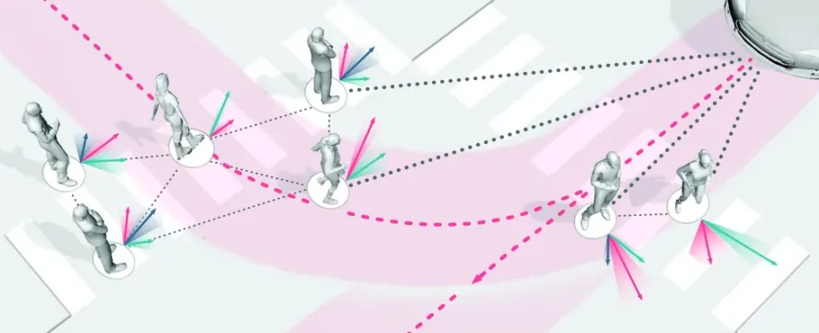
Fig. 1 — 보행자의 다중 모드 예측(색 화살표)과 차의 두 미래(분홍) [9]
한계
· 예측이 로봇 계획에 조건부면, 로봇이 "상대가 비켜 줄 것"이라 믿고 밀어붙일 수 있다
· 보행자 데이터셋(ETH-UCY)은 배달로봇 시점이 아니다
· 추적 오류(ID 바뀜)가 입력 이력을 망가뜨린다
travplan
보행자 5명 실험(TP-0154): 720 중 충돌 8건(1.1 %). 진단(TP-0160·0162)은 예측이 아니라 MPPI 페널티 포화와 plant 조향 한계를 원인으로 찾았다 — 예측기 교체가 1순위가 아닌 이유다.
[9] Salzmann, Ivanovic, Chakravarty & Pavone, “Trajectron++: Dynamically-Feasible Trajectory Forecasting With Heterogeneous Data”, ECCV 2020 — arXiv:2001.03093
CHAPTER 2 · 플래닝 · 모델 기반 §B.10
학습 Planner가 이겨야 할 기준선
고전 계획은 세 층이다 — 전역 경로를 찾는 그래프 탐색, 몇 초 앞 속도를 고르는 로컬 플래너, 경로를 매끄럽게 만드는 궤적 최적화.
| 연도 | 이름 | 층 | 핵심 |
|---|---|---|---|
| 1959 / 1968 | Dijkstra · A* | 전역 | 누적 비용(+ 휴리스틱) 순서로 셀을 확장한다 |
| 1997 | DWA | 로컬 | 가속 한계 안의 속도 창에서 고른다 |
| 2008–10 | Hybrid A* | 전역 | 셀마다 연속 자세를 두고 차량 기구학을 지킨다 |
| 2012–17 | TEB | 로컬 | 시간이 붙은 궤적을 희소 그래프 최적화로 푼다 |
| 2020 / 2024 | Nav2 · Smac | 스택 | behavior tree + 비용 인식 Hybrid-A*·Lattice |
| 2023 | MPOT | 최적화 | gradient 없이 궤적 다발을 OT(optimal transport)로 갱신한다 |
CH2 플래닝·모델 · 1959 / 1968 / 2010 IJRR · 전역 층
A* · Hybrid A* — 격자 위 최단 경로 [10][11]
A* (Dijkstra는 h = 0)
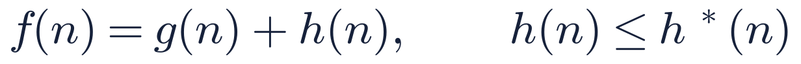
누적 비용 g에 남은 비용 추정 h를 더한 순서로 셀을 확장한다. h가 실제 비용을 넘지 않으면(admissible) 최적을 보장하면서 훨씬 적은 셀만 확장한다.
Hybrid A* — DARPA Junior
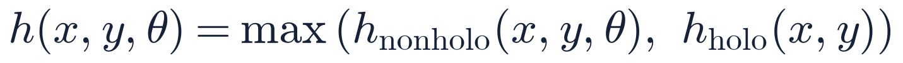
셀마다 연속 자세 (x, y, θ)를 저장하고 조향 원호로 확장한다. 기구학만 고려한 거리와 장애물만 고려한 거리 중 큰 값을 휴리스틱으로 쓰고, 중간중간 Reeds-Shepp 곡선으로 목표에 바로 잇기를 시도한다.
travplan GuidancePlanner
목표에서 Dijkstra 한 번 → 모든 셀의 cost-to-go
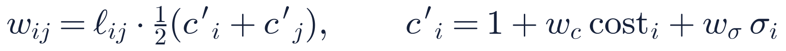
travplan
w_c = 4, w_σ = 0.5, 비용 0.95 이상 치명 셀은 그래프에서 뺀다. 학습 Planner는 이 경로 위 4 m 앞을 subgoal로 받고, Planner D는 후보 끝점의 cost-to-go를 진행도 점수로 쓴다. 스워브는 옆으로도 움직이므로 자동차용 원호 확장은 너무 좁다 → 다음 후보는 Smac State Lattice다.
[10] Dijkstra, Numerische Mathematik 1959 · Hart, Nilsson & Raphael, “A Formal Basis for the Heuristic Determination of Minimum Cost Paths”, IEEE TSSC 1968
[11] Dolgov, Thrun, Montemerlo & Diebel, “Path Planning for Autonomous Vehicles in Unknown Semi-structured Environments”, IJRR 2010
CH2 플래닝·모델 · A* · 최적성을 증명으로 따라가기
휴리스틱이 과대평가하지 않으면 처음 꺼낸 목표가 최적이다
1
우선순위 큐에서 \(f\)가 가장 작은 셀을 꺼내 이웃을 확장한다. \(h\equiv0\)이면 Dijkstra다.
2
가정: 목표를 비용 \(C>C^{\star}\)로 꺼냈다. 최적 경로 위에 아직 안 꺼낸 셀 \(n\)이 큐에 있다. admissible이면 그 셀의 \(f\)는 \(C^{\star}\) 이하다.
3
그러면 \(n\)이 목표보다 먼저 꺼내졌어야 한다 — 모순. 따라서 처음 꺼낸 목표의 비용은 \(C^{\star}\)다.
4
일관성(consistent)까지 있으면 경로를 따라 \(f\)가 줄지 않아, 셀마다 한 번만 꺼낸다. 맨해튼·유클리드 거리 휴리스틱이 이 조건을 만족한다.
5
travplan은 목표에서 거꾸로 Dijkstra를 한 번 돌려 모든 셀의 cost-to-go \(V\)를 얻는다. 경로는 \(V\)를 따라 내려가면 된다.
숫자로 따라가기
이웃 두 셀: cost 0.2·σ 0.1, cost 0.5·σ 0.3 → \(c^{\prime}=1+4(0.2)+0.5(0.1)=1.85\), \(c^{\prime}=1+4(0.5)+0.5(0.3)=3.15\). 대각선(\(\ell=\sqrt2\) 칸)이면 \(w=1.414\cdot2.5=3.54\).
왜 이렇게 하나
경로 하나보다 cost-to-go 지도가 쓸모가 많다. Planner D는 후보 16개의 끝점에서 \(V\)를 읽어 진행도 점수로 쓴다 — 탐색 한 번으로 모든 후보를 채점한다.
함정
8방향 격자의 경로 길이는 유클리드 길이보다 최대 약 8 % 길게 나오고, 45° 지그재그가 생긴다. 그래서 Planner·Controller가 그 위에서 다시 최적화한다.
[10] Dijkstra, Numerische Mathematik 1959 · Hart, Nilsson & Raphael, “A Formal Basis for the Heuristic Determination of Minimum Cost Paths”, IEEE TSSC 1968
[11] Dolgov, Thrun, Montemerlo & Diebel, “Path Planning for Autonomous Vehicles in Unknown Semi-structured Environments”, IJRR 2010
CH2 플래닝·모델 · A* · 전역 계획기 고르기
무엇을 상태로 두느냐가 계획기를 가른다
guidance+mppi 스모크
12/12
레벨 0 · seed 0–2
Planner D 계획
3.4 ms
게이트 < 10 ms
치명 셀
cost ≥ 0.95
그래프에서 제외
| 계획기 | 상태 | 확장 | 쓰는 곳 |
|---|---|---|---|
| Dijkstra (역방향) | (x, y) | 8방향 격자 | travplan GuidancePlanner |
| A* (2D) | (x, y) | 8방향 + 휴리스틱 | Nav2 Smac 2D |
| Hybrid A* | (x, y, θ) 연속 | 조향 원호 + Reeds-Shepp | 자동차·Nav2 Smac |
| State Lattice | (x, y, θ) 이산 | 로봇별 motion primitive | Nav2 Smac — 스워브 후보 |
출처: Planner 문서 §B.10
한계
· (x, y)만 보면 몸체 방향이 중요한 좁은 통로를 다루지 못한다
· 지도가 바뀔 때마다 전체를 다시 푼다 (D* Lite 같은 증분 탐색은 아직 없음)
· 못 본 셀의 비용을 어떻게 두느냐에 따라 경로가 크게 흔들린다
travplan
스워브는 옆으로도 움직이므로 자동차용 원호 확장은 기구학을 너무 좁게 잡는다. 몸체 방향이 문제가 되면 로봇별 motion primitive를 받는 Smac State Lattice가 다음 후보다.
[10] Dijkstra, Numerische Mathematik 1959 · Hart, Nilsson & Raphael, “A Formal Basis for the Heuristic Determination of Minimum Cost Paths”, IEEE TSSC 1968
[11] Dolgov, Thrun, Montemerlo & Diebel, “Path Planning for Autonomous Vehicles in Unknown Semi-structured Environments”, IJRR 2010
CH2 플래닝·모델 · 1997 IEEE RAM / 2017 RAS · 로컬 층
DWA · TEB — 다음 몇 초를 고른다 [12][13]
DWA · Fox, Burgard, Thrun
속도 창에서 고르기
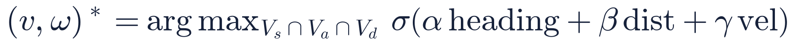
V_d: 가속 한계로 짧은 시간 안에 낼 수 있는 속도 창. V_a: 장애물 앞에서 멈출 수 있는 속도. 창 안의 각 (v, ω)가 그리는 원호를 목표 방향·장애물 거리·속도로 채점한다.
매우 가볍다. Nav2 DWB가 이 계열이다.
TEB · Rösmann et al.
시간 붙은 궤적 최적화
궤적 = 자세 열 + 그 사이 시간 간격 ΔT. 속도·가속 한계, 장애물 거리, 기구학은 페널티로, 전체 시간은 목적함수로 둔 희소 그래프 최적화(g2o)다.
장애물 왼쪽·오른쪽처럼 위상이 다른 후보 여러 개를 병렬로 최적화해 가장 좋은 것을 고른다. 홀로노믹 로봇의 옆 속도도 다룬다.
teb_local_planner ★1.4k
travplan
travplan의 로컬 층은 MPPI가 맡는다. DWA는 “한 스텝 앞 원호”, TEB는 “gradient 최적화 + 위상 후보”, MPPI는 “horizon 전체 샘플링”이다. TEB의 위상 후보 아이디어는 Planner D가 후보 16개를 내는 것과 같은 동기다.
[12] Fox, Burgard & Thrun, “The Dynamic Window Approach to Collision Avoidance”, IEEE RAM 1997
[13] Rösmann, Hoffmann & Bertram, “Integrated Online Trajectory Planning and Optimization in Distinctive Topologies”, RAS 2017
CH2 플래닝·모델 · DWA · TEB · 두 로컬 플래너의 식
속도 창에서 고르거나, 시간이 붙은 궤적을 gradient로 최적화한다
1
DWA ① 동적 창 — 다음 \(\Delta t\) 안에 가속 한계로 닿을 수 있는 속도만 고려한다.
2
DWA ② 허용 속도 — 원호 위 가장 가까운 장애물까지 \(\operatorname{dist}(v,\omega)\) 안에 멈출 수 있어야 한다.
3
TEB ① 표현 — 자세 열과 그 사이 시간 간격으로 궤적을 나타낸다. 속도·가속은 차분으로 나온다.
4
TEB ② 목적 — 전체 시간을 줄이고, 한계는 단측 페널티 \(e_\Gamma\)로 넣어 희소 그래프 최적화(g2o)로 푼다.
숫자로 따라가기
DWA: \(v_c=0.8\), \(\dot v_{\max}=1.0\) m/s², \(\Delta t=0.25\) s → 창 \(v\in[0.55,1.05]\). 원호 위 장애물 0.5 m, 제동 1.0 m/s² → \(v\le\sqrt{2\cdot0.5\cdot1.0}=1.0\). 고를 수 있는 \(v\)는 \([0.55,1.0]\).
왜 이렇게 하나
DWA는 한 스텝 원호만 평가해 가볍지만 멀리 내다보지 못한다. TEB는 horizon 전체를 최적화하지만 gradient 기반이라 지역해에 빠진다 → 위상이 다른 후보 여러 개를 병렬로 최적화한다.
함정
TEB의 페널티 \(e_\Gamma\)는 \(x_r-\epsilon\)을 넘어선 뒤에만 0이 아니다. 가중 \(\sigma_\gamma\)가 작으면 한계를 조금씩 넘는 궤적이 "최적"이 된다 — 구조적 보장이 아니다.
[12] Fox, Burgard & Thrun, “The Dynamic Window Approach to Collision Avoidance”, IEEE RAM 1997
[13] Rösmann, Hoffmann & Bertram, “Integrated Online Trajectory Planning and Optimization in Distinctive Topologies”, RAS 2017
CH2 플래닝·모델 · DWA · TEB · MPPI와 나란히
세 로컬 플래너는 무엇을 탐색하는가
| DWA | TEB | travplan MPPI | |
|---|---|---|---|
| 탐색 대상 | (v, ω) 한 쌍 | 자세 열 + ΔT | 제어열 768 × 40 × 3 |
| horizon | 한 원호 (~1–3 s) | 궤적 전체 | 4 s (40스텝) |
| 방법 | 전수 채점 | gradient (g2o) | 샘플 + 지수 가중 |
| 다봉 | 없음 | 위상 후보 병렬 | 후보 분포 + Planner 경로 |
| 불연속 비용 | 가능 | 어렵다 (gradient) | 그대로 (치명 1000) |
| 한계 보장 | 창으로 구조적 | 페널티 (soft) | clamp로 구조적 |
출처: Planner 문서 §B.10, 배경 §0.2b. MPPI 13.0 ms/주기 (MPC 문서 M.3.13)
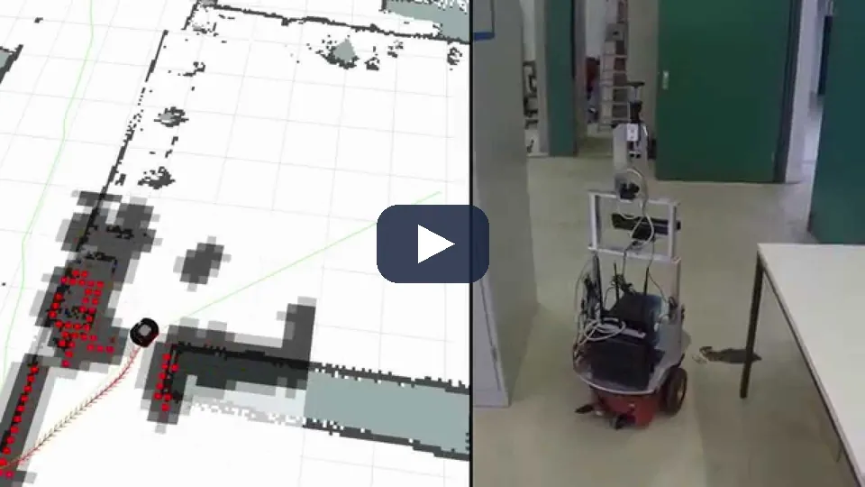
TEB의 위상 후보 아이디어는 Planner D가 후보 16개를 내는 것과 같은 동기다 — gradient 하나로는 장애물 왼쪽·오른쪽을 고를 수 없다.
한계
· DWA: 원호 하나로는 연석 경사로처럼 돌아가야 하는 길을 못 찾는다
· TEB: 계단 모양 비용(치명 셀)에서 gradient가 없다
· 둘 다 TravMap σ를 직접 쓰지 않는다
travplan
Nav2 DWB(DWA 계열)·TEB 대신 MPPI를 쓰는 이유가 표 아래 두 줄이다: 치명 셀 같은 불연속 비용을 그대로 다루고, 스워브 한계(후진 −0.3 m/s 등 비대칭)를 clamp로 구조적으로 지킨다.
[12] Fox, Burgard & Thrun, “The Dynamic Window Approach to Collision Avoidance”, IEEE RAM 1997
[13] Rösmann, Hoffmann & Bertram, “Integrated Online Trajectory Planning and Optimization in Distinctive Topologies”, RAS 2017
CH2 플래닝·모델 · 2023 · NeurIPS · TU Darmstadt · 궤적 최적화 층
MPOT — 궤적 배치를 OT로 한 번에 갱신한다 [15]
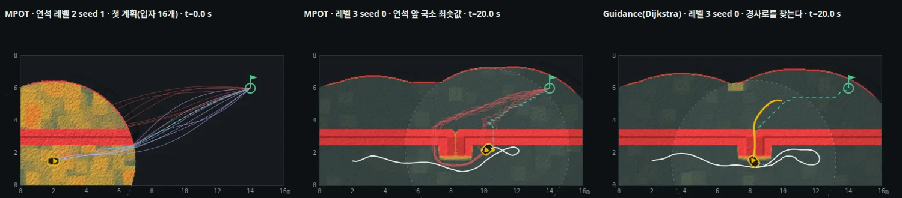
travplan TP-0136 — Playground에서 Sinkhorn Step을 Planner 자리에 넣어 본 실험
방법
gradient를 쓰지 않는다. waypoint마다 랜덤하게 회전한 polytope의 꼭짓점 방향으로 비용을 probe하고, 그 비용 행렬에 엔트로피 정규화 OT를 풀어 방향별 가중치를 얻는다(Sinkhorn Step). 수송은 waypoint ↔ 탐색 방향 사이에서 일어난다.
travplan
쓸 자리는 Planner D의 teacher다 — homotopy class가 다른 여러 답을 한 배치로 내는 오프라인 oracle이다. Controller 자리에 제어열로 넣은 버전(TP-0130)은 같은 예산의 MPPI를 넘지 못했다.
| 논문 환경 | 시간 | 성공률 |
|---|---|---|
| point-mass 2D | 0.4 s | 99.2 % |
| Panda 7-DoF | 0.8 s | 71.6 % |
| TIAGo++ | 1.49 s | 55 % |
| travplan L2 curb | 16.7–21.9 s 도달 | Guidance보다 빠름 |
[15] Le, Chalvatzaki, Biess & Peters, “Accelerating Motion Planning via Optimal Transport”, NeurIPS 2023 — arXiv:2309.15970 · 코드 anindex/mpot (MIT)
CH2 플래닝·모델 · MPOT · Sinkhorn Step 한 번
waypoint와 탐색 방향 사이의 optimal transport
1
probe — waypoint \(i\)마다 랜덤하게 회전한 정규 polytope의 꼭짓점 방향 \(\mathbf d_j\)로 probe 점을 놓고 비용을 잰다. \([0,1]\)로 정규화한다.
2
엔트로피 정규화 OT — 행 marginal은 waypoint 균등, 열 marginal은 방향 균등이다. 시작·목표 분포 사이의 수송이 아니다.
3
Sinkhorn 반복 — 해는 \(\operatorname{diag}(\mathbf u)\,\mathbf K\,\operatorname{diag}(\mathbf v)\) 형태이고, 두 스케일 벡터를 번갈아 맞춘다.
4
갱신 — 행을 정규화한 transport plan은 barycentric 좌표다. 각 waypoint가 자기 방향들의 convex combination만큼 움직이고, step size \(\alpha\)는 점점 줄인다.
숫자로 따라가기
waypoint 하나에 방향 둘의 비용이 0.2·0.8이고 \(\varepsilon=0.1\)이면 행 가중치는 \(\propto(e^{-2},e^{-8})\) → (0.998, 0.002)다. 열 marginal 제약이 방향 사용량을 다른 waypoint와 나눠 갖게 한다.
핵심
점수가 "궤적 하나에 하나"(MPPI)가 아니라 (waypoint, 방향) 쌍마다 하나다. 국소 이동과 전역 균등 사용의 결합은 MPPI에 없는 것이다.
함정
지수 때문에 비용 행렬을 \([0,1]\)로 정규화해야 한다. travplan의 1e3 indicator 페널티와 정면으로 충돌한다 → 행마다 최솟값을 빼고 상한에서 clip하는 우회책을 쓴다.
[15] Le, Chalvatzaki, Biess & Peters, “Accelerating Motion Planning via Optimal Transport”, NeurIPS 2023 — arXiv:2309.15970 · 코드 anindex/mpot (MIT)
CH2 플래닝·모델 · MPOT · travplan이 측정한 것
Controller로는 MPPI를 넘지 못했고, teacher 자리가 남았다
| travplan MPPI | MPOT Sinkhorn Step | |
|---|---|---|
| 샘플 | 제어열 768 × 40 × 3 | 없음, waypoint를 직접 |
| 동역학 | SwerveModel.rollout | 없음 (비용 항으로만) |
| 한계 | clamp로 구조적 | soft cost로만 |
| warm start | 명목 제어열 한 스텝 shift | 없음, 수렴까지 반복 |
| 시간 | 13.0 ms/주기 | 0.4 s (point-mass, 3080Ti) |
출처: 배경 §0.2b, Controller 문서 E.11·E.14, MPC 문서 M.3.20
TP-0130: 제어열 버전의 oracle을 MPPI가 멈춘 장면 10개에서 같은 예산의 MPPI와 비교했다 → 넘지 못해 제품용 MPOT 변형은 만들지 않았다.

Fig. 1 — Sinkhorn Step 0·10·20·40: 궤적 묶음이 장애물을 피해 모인다 [15]
한계
· 0.4 s는 제어 주기 0.1 s의 4배, 계획 게이트 10 ms의 40배
· 등방 polytope step을 스워브의 비대칭 feasible set에 맞출 방법이 없다
· TP-0136 레벨 3 seed 0 시간 초과: 입자가 못 본 셀을 지나 직진하다 경사로 쪽 비용 언덕을 넘지 못했다
travplan
쓸 자리는 Planner D의 teacher다. 지금 teacher(train_planner_d.py)는 상태마다 4초 제어열 하나만 내는 단일 모드다. MPOT는 homotopy class가 다른 답을 한 배치로 낸다 — 오프라인 수집이라 0.4 s가 문제되지 않는다.
[15] Le, Chalvatzaki, Biess & Peters, “Accelerating Motion Planning via Optimal Transport”, NeurIPS 2023 — arXiv:2309.15970 · 코드 anindex/mpot (MIT)
CHAPTER 3 · 플래닝 · 학습 기반 §B.2–B.8
비용으로 배우고, 분포를 생성한다
세 갈래다 — costmap에서 직접 배우는 imperative learning, 궤적 분포를 생성하는 diffusion·flow, 언어·영상 foundation model이 행동까지 내는 VLA.
| 연도 | 논문 | 갈래 | 출력 |
|---|---|---|---|
| 2023 | iPlanner · ViPlanner | imperative learning | key point 경로 + 충돌 확률 |
| 2023 | ViNT · NoMaD | foundation model | waypoint / diffusion, 목표 마스킹 |
| 2023 | Diffusion Policy | 생성형 | 행동 시퀀스, receding horizon |
| 2024 | π0 · NaVILA · CityWalker | VLA · 웹 영상 | flow 행동 / 언어 중간 행동 / waypoint |
| 2025 | NavDP · GoalFlow | 생성형 + 선택 | 후보 생성 → critic·scorer |
| 2026 | travplan Planner D | flow + 선택 | 후보 16개 → 비용 적분으로 선택 |
CH3 플래닝·학습 · 2023 · RSS · ETH RSL
iPlanner — 비용의 gradient로 경로를 배운다 [16]
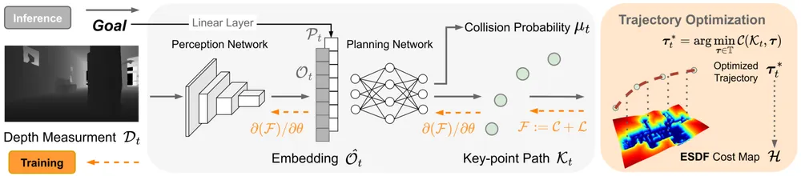
Fig. 2 — 경로 + 충돌 확률 예측, 비용과 fear loss를 역전파 [16]
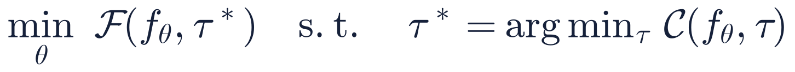
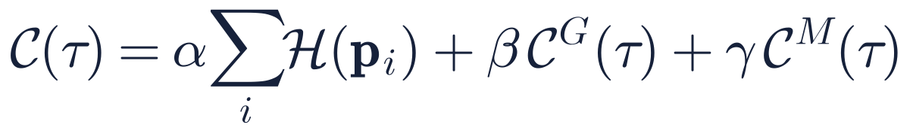
문제 시연 라벨 없이 깊이 영상에서 경로를 배우고 싶다.
방법 경로 점에서 costmap을 미분 가능하게 읽고 그 합을 손실로 쓴다. fear 헤드가 충돌 확률을 예측한다.
결과 고전 파이프라인보다 약 4배 빠르고, 학습 기준선보다 SPL 26–87 % ↑.
travplan LearnedPlanner의 plan_loss가 이 형태다(+ σ 항). fear 헤드는 “치명 셀 경로 → MPPI 거부 → 멈춤” 실패를 겨냥한다.
[16] Yang, Wang, Cadena & Hutter, “iPlanner: Imperative Path Planning”, RSS 2023 — arXiv:2302.11434
CH3 플래닝·학습 · iPLANNER · imperative learning의 gradient
라벨 경로 없이, costmap의 gradient가 정답 역할을 한다
1
이층 최적화 — 상위 문제는 네트워크를, 하위 문제는 네트워크가 낸 경로를 비용으로 최적화한다.
2
미분 가능한 비용 읽기 — 경로 점 \(\mathbf p\)에서 costmap \(m\)을 bilinear 보간으로 읽는다. 그러면 점의 위치에 대한 gradient가 생긴다.
3
궤적 비용 — 장애물 + 목표 + 운동(구간 길이 균일화) 항이다. gradient가 chain rule로 \(\theta\)까지 흐른다.
4
fear 헤드 — 경로의 충돌 여부를 라벨로 삼아 충돌 확률 \(\mu\)를 배운다. 배포 때 \(\mu\)가 임계값보다 큰 경로는 버린다.
숫자로 따라가기
점이 셀 안의 \((\delta_x,\delta_y)=(0.3,0.6)\)에 있고 네 꼭짓점 비용이 \(m_{00}=m_{01}=0.1\), \(m_{10}=m_{11}=0.9\): \(\mathcal H=0.34\), \(\partial\mathcal H/\partial p_x=0.8\) → 경로 점이 \(-x\)(비용이 낮은 쪽)로 밀린다.
travplan
travplan plan_loss: \(3\,\bar c_{\text{blur}}+12\,\overline{\mathrm{relu}(c-0.5)^2}+0.5\,\bar\sigma+\lVert\mathbf w_8-\mathbf g\rVert+2\,\overline{\lVert\Delta^2\mathbf w\rVert^2}+0.05L\). 하위 단계 최적화와 fear 헤드가 없고 σ 항이 있다.
함정
costmap이 평평한 곳(치명 셀 한가운데)에서는 gradient가 0이다. blur한 비용을 따로 두는 이유다.
[16] Yang, Wang, Cadena & Hutter, “iPlanner: Imperative Path Planning”, RSS 2023 — arXiv:2302.11434
CH3 플래닝·학습 · iPLANNER · 결과와 travplan의 실패 모드
경로가 치명 셀을 지나면 MPPI가 거부하고 멈춘다
고전 파이프라인 대비
약 4×
계획 속도
학습 기준선 대비 SPL
+26–87 %
보지 못한 환경
| 스택 (4 시나리오 × 3 seed) | 성공 | 도달 시간 | 계획 시간 |
|---|---|---|---|
| guidance+mppi (비학습 기준선) | 12/12 | 16.0 s | — |
| learned+mppi (iPlanner 계열) | 8/12 | 22.8 s | 0.5 ms |
| planner_d+mppi | 12/12 | 15.9 s | 3.4 ms |
| planner_d+tracker | 6/12 | 16.9 s | 3.4 ms |
출처: results/tp0025_v2/bench.log, Planner 문서 §B.8.3
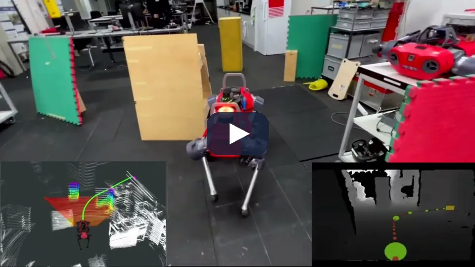
한계
· 한 답만 낸다 — 갈림길에서 두 모드의 평균(장애물 쪽)으로 갈 수 있다
· costmap의 품질이 곧 학습 신호의 품질이다
· 깊이 영상 한 장만 보므로 가려진 곳의 비용을 모른다
travplan
learned+mppi 8/12의 실패는 경로가 치명 셀을 지나 MPPI가 진입을 거부하고 멈춘 경우였다(ARCHITECTURE §4). fear 헤드로 Planner가 그런 경로를 스스로 버리면 Guidance 폴백 조건이 명확해진다.
[16] Yang, Wang, Cadena & Hutter, “iPlanner: Imperative Path Planning”, RSS 2023 — arXiv:2302.11434
CH3 플래닝·학습 · 2024 · ICRA · ETH RSL
ViPlanner — semantic 정보까지 비용에 넣는다 [17]

Fig. 2 — 깊이 + semantic + 목표 → 경로 · 충돌 확률, 이층 최적화 [17]
문제 기하만 보면 계단은 막혀 보이고, 풀밭과 도로가 구별되지 않는다.
방법 깊이와 semantic segmentation을 따로 인코딩해 목표와 합치고, 30개 semantic 클래스에 비용을 매긴 지도로 iPlanner 방식으로 학습한다. 클래스는 traversability가 비슷할수록 가까운 색으로 넣는다.
결과 CARLA·Matterport 시뮬만으로 학습해 사족 실물에 zero-shot으로 옮겼다. 기하만 쓸 때보다 traversability 비용 38.02% 감소.
travplan TravMap에 semantic 채널을 더할 때(§A.11 segmentation 모델) 그대로 쓸 수 있는 비용 설계다.
| 비용 | semantic 클래스 |
|---|---|
| 가장 낮음 | 보도 · 횡단보도 · 바닥 · 계단 |
| ↑ | 자갈 · 모래 · 눈 |
| ↑↑ | 풀 · 흙 |
| ↑↑↑ | 도로 |
| 장애물 | 사람 · 차 · 벽 · 기둥 |
[17] Roth, Nubert, Yang, Mittal & Hutter, “ViPlanner: Visual Semantic Imperative Learning for Local Navigation”, ICRA 2024 — arXiv:2310.00982
CH3 플래닝·학습 · ViPLANNER · iPlanner 손실에서 바꾼 세 가지
로봇 폭, 먼 목표, 높이까지 손실에 넣는다
1
비용 항 — 경로 점뿐 아니라 법선 \(\mathbf n_i\) 방향으로 로봇 폭 \(w^{R}\)만큼 떨어진 두 점에서도 semantic costmap \(\tilde m\)을 읽는다.
2
목표 항 — 로그를 씌워 먼 목표의 gradient가 다른 항을 압도하지 않게 한다.
3
높이 항 — 경로 점의 높이를 지면 위 몸통 높이 \(h^{R}\)에 머물게 한다. 장애물 위로 넘거나 아래로 지나는 경로를 막는다.
4
semantic costmap — 셀마다 메시의 semantic 클래스로 비용(0–2)을 매기고 가우시안 필터로 분류 오류를 지운다. 배포 때 Planner는 영상만 본다.
숫자로 따라가기
목표가 2 m면 \(\log3=1.10\), 20 m면 \(\log21=3.04\). 거리는 10배인데 손실은 2.8배 — gradient는 \(1/(d+1)\)이라 먼 목표일수록 약하다.
핵심
클래스는 one-hot이 아니라 traversability가 비슷할수록 가까운 RGB 색으로 넣는다. segmentation이 "풀"과 "흙"을 헷갈려도 비용 차이가 작다.
travplan
travplan plan_loss는 목표 거리를 로그 없이 쓰고, 로봇 폭은 손실이 아니라 지도 쪽에서 반영한다 — TravMap 특징을 반폭 0.30 m만큼 팽창(inflate)한다.
[17] Roth, Nubert, Yang, Mittal & Hutter, “ViPlanner: Visual Semantic Imperative Learning for Local Navigation”, ICRA 2024 — arXiv:2310.00982
CH3 플래닝·학습 · ViPLANNER · 시뮬만으로 배운 대가
semantic을 더하면 semantic 비용은 줄지만, 도달률도 함께 준다
traversability 비용
−38.02 %
기하만 쓸 때 대비
CARLA 목표 도달
95.91 → 87.75 %
semantic을 더하면
Orin AGX
10 Hz
Mask2Former 약 3 Hz
| 학습 설정 | 값 |
|---|---|
| 데이터 | Matterport3D 실내 11 · CARLA 도시 1 (400 × 400 m) · 창고 3 |
| 출발·목표 쌍 | 약 8만 개 |
| 학습 | RTX 3090 한 장, 약 6시간 |
| 실물 | ANYmal, 취리히 횡단보도·계단 (정성적) |
출처: Planner 문서 §B.16
한계
· semantic 비용과 목표 도달은 trade-off다 — 비용 가중치를 잘못 잡으면 목표에 덜 간다
· 실물 평가는 장면 둘의 정성적 시연이다
· segmentation 모델이 틀리면(젖은 도로의 반사) 비용도 그대로 틀린다
travplan
배달로봇 관점의 비용 순서(도로가 풀보다 비쌈)를 TravMap semantic 채널에 그대로 쓸 수 있다. 지금 travplan은 기하 비용(경사·턱·거칠기)만 쓴다.

[17] Roth, Nubert, Yang, Mittal & Hutter, “ViPlanner: Visual Semantic Imperative Learning for Local Navigation”, ICRA 2024 — arXiv:2310.00982
CH3 플래닝·학습 · 2023 CoRL / 2024 ICRA · UC Berkeley
ViNT · NoMaD — 내비게이션 foundation model [18]

NoMaD Fig. 4 — 목표 마스킹 diffusion의 여러 방향 샘플 [18]
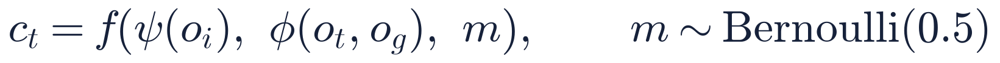
학습 데이터의 절반은 목표를 가리고(mask) 배운다 → 목표가 없으면 충돌 없는 여러 방향이 샘플로 나와 스스로 탐색한다.
방법
공유 transformer: 과거 RGB 프레임은 각각 EfficientNet-B0 ψ로, 현재+목표 영상은 융합 인코더 φ로 인코딩한다. ViNT는 waypoint 시퀀스를, NoMaD는 그 context로 diffusion 행동을 낸다. 장거리는 위상 메모리 그래프가 맡는다.
결과
이 분야에서 가장 성숙한 계열이다. 여러 로봇에 실제 배포됐고, 코드 visualnav-transformer ★1.3k+.
travplan
알려진 한계 “센서 범위 밖 미관측 영역 탐색”의 답 후보다: Planner D의 조건에서 subgoal을 가끔 빼고 학습하면 목표 없는 탐색 모드를 한 모델에 넣을 수 있다.
[18] Shah et al., “ViNT: A Foundation Model for Visual Navigation”, CoRL 2023 — arXiv:2306.14846 · Sridhar et al., “NoMaD: Goal Masked Diffusion Policies for Navigation and Exploration”, ICRA 2024 — arXiv:2310.07896
CH3 플래닝·학습 · ViNT · NoMaD · 목표 마스킹 diffusion
절반은 목표를 가리고 배운다 — 한 모델에 도달과 탐색을 함께
1
토큰화 — 과거·현재 RGB는 각각 EfficientNet-B0 \(\psi\)로, 현재 + 목표 영상은 융합 인코더 \(\phi\)로 토큰화한다. transformer가 context를 만든다.
2
목표 마스킹 — 이진 마스크 \(m\)이 목표 토큰을 attention에서 가린다. 학습 때는 가린 것과 안 가린 것을 반반 섞는다.
3
diffusion 행동 헤드 — context를 조건으로 미래 행동 시퀀스를 DDPM으로 생성한다. 목표가 가려지면 충돌 없는 여러 방향이 샘플로 나온다.
4
장거리 — 위상 메모리 그래프(지나온 영상 노드)에서 상위 플래너가 다음 subgoal 영상을 고른다. 정책은 그 사이만 간다.
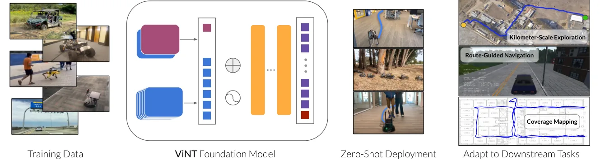
Fig. 1 — 계보 그림. NoMaD의 바탕인 ViNT: 여러 로봇 데이터 → transformer → zero-shot 배포·적응 [18]
왜 이렇게 하나
목표 도달 모델과 탐색 모델을 따로 두면 전환 규칙이 필요하다. 마스크 하나로 같은 가중치가 둘 다 맡는다 — 테스트 때는 \(m\)만 정하면 된다.
핵심
계보: GNM(2022, 여러 로봇 데이터) → ViNT(2023, transformer, fine-tuning 가능) → NoMaD(2023, diffusion + 마스킹).
함정
셋째 줄의 거리 헤드 항 \(\lambda(\cdot)^2\)는 목표까지의 시간 거리를 맞히는 보조 손실의 일반형이다. 정확한 가중치는 원문에서 확인한다.
[18] Shah et al., “ViNT: A Foundation Model for Visual Navigation”, CoRL 2023 — arXiv:2306.14846 · Sridhar et al., “NoMaD: Goal Masked Diffusion Policies for Navigation and Exploration”, ICRA 2024 — arXiv:2310.07896
CH3 플래닝·학습 · ViNT · NoMaD · travplan의 미관측 탐색
subgoal을 가끔 빼고 배우면 탐색 모드가 생긴다
| ViNT · NoMaD | travplan Planner D | |
|---|---|---|
| 조건 | 영상 이력 + 목표 영상 (또는 없음) | TravMap 크롭 + subgoal + 속도 |
| 출력 | waypoint 시퀀스 / diffusion 행동 | flow 제어 변화율 a[40, 3] × 16 |
| 목표 없을 때 | 마스킹으로 탐색 | 없음 — 늘 Guidance subgoal |
| 장거리 | 위상 메모리 그래프 | GuidancePlanner cost-to-go |
출처: Planner 문서 §B.6, §B.8.3
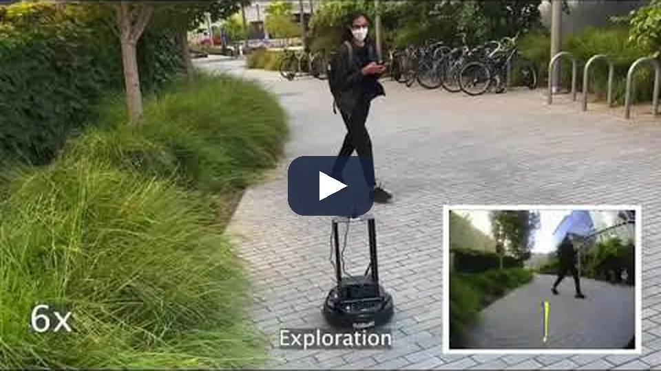
실외 비교의 기준선으로도 쓰인다: CityWalker 실험에서 fine-tuning한 ViNT 57.1 %, zero-shot NoMaD 42.9 %.
한계
· 영상 목표가 필요하다 — "주소로 가라"는 상위 층이 맡는다
· 높이 위험(턱·포트홀)을 영상 특징이 놓칠 수 있다
· diffusion 스텝 때문에 추론이 waypoint 회귀보다 느리다
travplan
알려진 한계 "센서 범위 밖 미관측 영역 탐색"의 가벼운 대응: Planner D 학습 때 subgoal을 가끔 빼면 "목표 없이도 안전하게 앞을 탐색하는" 모드를 한 모델에 넣을 수 있다(미착수).
[18] Shah et al., “ViNT: A Foundation Model for Visual Navigation”, CoRL 2023 — arXiv:2306.14846 · Sridhar et al., “NoMaD: Goal Masked Diffusion Policies for Navigation and Exploration”, ICRA 2024 — arXiv:2310.07896
CH3 플래닝·학습 · 2025 arXiv / ICRA 2026 · InternRobotics
NavDP — 시뮬의 privileged 정보로 배운 critic [19]
RGB-D → diffusion 궤적 후보 → ESDF로 학습한 critic이 채점한다. 시뮬 데이터만으로 여러 로봇에 옮긴다.
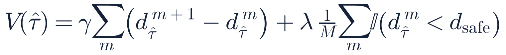
데이터
장면 메시 3,000개 이상 → ESDF. A* 경로를 ESDF가 커지는 쪽으로 밀고 spline으로 매끄럽게 한다. 카메라 높이·피치·시야를 랜덤화해 1,000 km 이상.
구조
RGB 8프레임(DepthAnything 인코더) + 깊이 ViT. transformer 하나가 행동 헤드(diffusion 10스텝, waypoint 24개)와 critic 헤드를 함께 가진다.
결과
시뮬 PointGoal 67.2%(ViPlanner 60.9%). 실물 Turtlebot 9/10, Go2 7/10, G1 7/10.
travplan
Planner D의 직접 참고다. 비학습 선택기를 이 critic처럼 학습시킬 수 있다 — 시뮬에서는 정답 비용과 치명 셀을 알기 때문이다.

Fig. 1 — 시뮬 전용 학습 → 여러 로봇 [19]
학습: A100 32장 × 24시간. Jetson 지연은 보고되지 않았다.
[19] Cai et al., “NavDP: Learning Sim-to-Real Navigation Diffusion Policy with Privileged Information Guidance”, ICRA 2026 — arXiv:2505.08712
CH3 플래닝·학습 · NavDP · 시뮬 전용 학습의 결과
1,000 km의 시뮬 주행만으로 세 로봇에 옮긴다
시뮬 PointGoal
67.2 %
ViPlanner 60.9 %
Turtlebot
9/10
실물
Go2 · G1
7/10 · 7/10
실물
| NavDP | Planner D | |
|---|---|---|
| 입력 | RGB 8프레임 + 깊이 | TravMap 크롭 + subgoal |
| 생성 | diffusion 10스텝, waypoint 24 | flow 10스텝, 제어 40 × 16 |
| 선택 | 학습 critic (ESDF distillation) | 규칙 점수 (비용·치명·cost-to-go) |
| 학습 | A100 32장 × 24시간 | 수집 3분 + CPU 학습 |
출처: Planner 문서 §B.3, §B.8.3
한계
· Jetson 지연은 보고되지 않았다
· 실내 메시 장면(3D-Front·HSSD) 위주 — 보도 턱·경사의 비중이 작다
· 실물 시험이 로봇마다 10회뿐이다
travplan
Planner D의 직접 참고다. 입출력 인터페이스가 같고 여러 답을 낸다. 학습 critic은 비학습 선택기를 대체할 후보다.

[19] Cai et al., “NavDP: Learning Sim-to-Real Navigation Diffusion Policy with Privileged Information Guidance”, ICRA 2026 — arXiv:2505.08712
CH3 플래닝·학습 · 2023 · RSS · Columbia · TRI · MIT
Diffusion Policy — 행동 시퀀스를 diffusion으로 생성한다 [20]
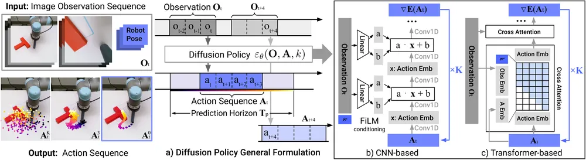
Fig. 2 — 관측 T_o 스텝 → 행동 T_p 스텝, FiLM 조건 [20]
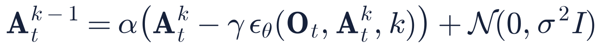
T_p 스텝을 예측하고 T_a 스텝만 실행한 뒤 다시 계획한다(receding horizon).
문제
회귀로 배운 정책은 여러 모드의 시연을 평균 내 버린다. 고차원 행동에서는 에너지 기반 모델의 학습이 불안정하다.
방법
관측을 조건으로 한 DDPM으로 행동 시퀀스 전체를 denoise한다. 관측 특징은 FiLM으로 모든 층에 넣거나(CNN 버전) transformer 버전을 쓴다.
결과
조작 벤치마크 4개의 여러 과제에서 기존 최고보다 평균 46.9% 좋았다. multimodal 분포를 자연스럽게 다룬다.
travplan
Planner D의 “행동 chunk 생성 + 재계획” 구조의 원조다. Planner D는 같은 네트워크를 DDPM ancestral 샘플링으로도 돌려 12/12였다(TP-0137).
[20] Chi et al., “Diffusion Policy: Visuomotor Policy Learning via Action Diffusion”, RSS 2023 — arXiv:2303.04137
CH3 플래닝·학습 · DIFFUSION POLICY · 학습과 추론의 식
행동 시퀀스 전체를 잡음에서 denoise한다
1
순방향 — 시연 행동 시퀀스 \(A^{0}\)(길이 \(T_p\))에 잡음을 섞는다. 어느 단계 \(k\)든 한 번에 샘플링할 수 있다.
2
학습 — 관측 \(O_t\)(최근 \(T_o\)스텝)를 조건으로 섞인 잡음을 맞힌다. CNN 버전은 관측 특징을 FiLM으로 모든 층에 넣는다.
3
역방향 — 순수 잡음에서 \(K\)단계에 걸쳐 denoise한다. 단계마다 예측한 잡음을 빼고 잡음을 조금 다시 더한다.
4
receding horizon — \(T_p\)스텝을 예측하고 앞의 \(T_a\)스텝만 실행한 뒤 다시 계획한다.
왜 이렇게 하나
회귀(MSE)로 배우면 왼쪽으로 민 시연과 오른쪽으로 민 시연의 평균을 낸다. diffusion은 분포 자체를 배워 두 모드 중 하나를 샘플링한다.
핵심
행동 chunk를 한 번에 내면 스텝마다 모드가 바뀌는 떨림이 줄고, \(T_a\)마다 다시 계획하므로 반응성도 유지된다.
travplan
Planner D는 같은 네트워크를 flow(Euler 10스텝)로도, DDPM ancestral 샘플링으로도 돌려 둘 다 12/12였다(TP-0137) — 두 계열은 같은 ODE를 다른 좌표계로 쓴 것이다(배경 §0.6b).
[20] Chi et al., “Diffusion Policy: Visuomotor Policy Learning via Action Diffusion”, RSS 2023 — arXiv:2303.04137
CH3 플래닝·학습 · DIFFUSION POLICY · 생성형 계획의 계보
행동 chunk + multimodal 분포 + 재계획 — 지금 모방학습의 기본 조합
조작 벤치마크 4개
+46.9 %
기존 최고 대비 평균
| 방법 | 연도 | 생성하는 것 | 목표·비용을 넣는 법 |
|---|---|---|---|
| Diffuser | 2022 | 궤적 전체 | reverse diffusion의 평균을 ∇J로 이동 + 첫 상태 inpainting |
| Diffusion Policy | 2023 | 행동 chunk | 관측 조건 (FiLM) |
| MPD | 2023 | 궤적 | diffusion prior × exp(−Σλc) |
| GoalFlow | 2025 | 궤적 후보 | 목표점 조건 + scorer |
| Planner D | 2026 | 제어 변화율 chunk ×16 | subgoal 조건 + 규칙 점수 (+guide_scale) |
출처: Planner 문서 §B.8.0–B.8.3, 강화학습 문서 §R(모방학습 강의)
한계
· 스텝 수만큼 네트워크를 돌려야 한다 — 실시간 제어에서는 스텝 수가 곧 예산이다
· 시연에 없는 상태(복구)를 모른다 → DAgger·post-training이 필요하다
· 조작 과제 결과라 이동 로봇 수치는 아니다
travplan
Planner D가 강의의 조합 그대로다: multimodal 시연을 flow로, 4초 40스텝을 한 번에, 레벨 0–3 시연 뒤 DAgger·RL post-training, subgoal 조건. 경사로를 지나친 상태에서 시작하는 DAgger(TP-0143)가 "복구가 담긴 데이터"다.
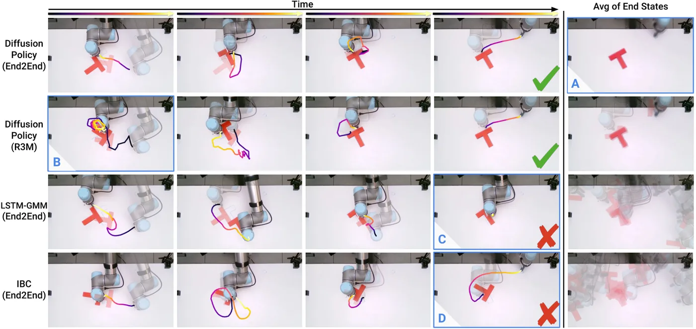
Fig. 7 — Diffusion Policy만 끝 상태가 일정하다(A) [20]
[20] Chi et al., “Diffusion Policy: Visuomotor Policy Learning via Action Diffusion”, RSS 2023 — arXiv:2303.04137
CH3 플래닝·학습 · 2025 · CVPR · E2E 자율주행
GoalFlow — 목표점 먼저, 그다음 flow [21]
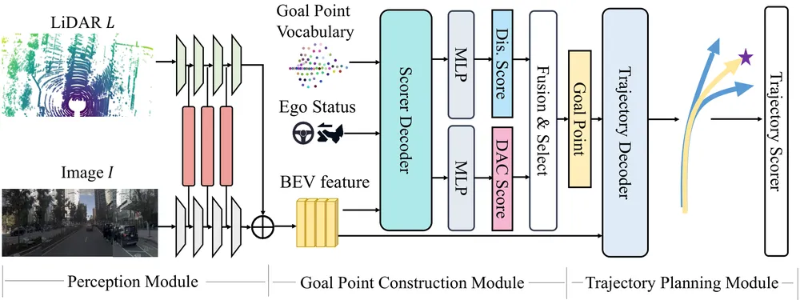
Fig. 2 — 인식 → 목표점 선택 → flow 후보 → scorer [21]
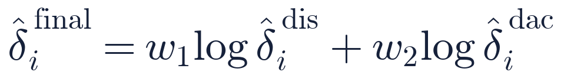
거리 점수(정답 끝점까지의 거리를 softmax) × 주행 가능 점수(자차 박스의 네 모서리가 도로 안에 있는가)
문제
diffusion으로 만든 multimodal 궤적은 퍼짐이 커 고르기 어렵고, guidance가 장면과 어긋나면 품질이 떨어진다.
방법
조밀한 목표점 vocabulary에서 하나를 고르고, 그 목표점과 BEV 특징을 조건으로 flow matching이 후보를 생성한다. 마지막에 scorer가 고른다.
결과
NAVSIM PDMS 90.3. denoising 한 스텝으로도 성능이 좋았다.
travplan
Planner D와 구조가 같다: 목표점 = Guidance 경로 4 m 앞 subgoal, 후보 16개, scorer = 비용 적분 + 치명 페널티 + cost-to-go. 차이는 목표점을 규칙으로 고른다는 것뿐이다.
[21] Xing et al., “GoalFlow: Goal-Driven Flow Matching for Multimodal Trajectories Generation in End-to-End Autonomous Driving”, CVPR 2025 — arXiv:2503.05689
CH3 플래닝·학습 · GOALFLOW · 목표점 점수와 조건부 flow
어디로 갈지 먼저 정하면 궤적의 퍼짐이 줄어든다
1
거리 점수 — 조밀한 목표점 vocabulary \(\{g_i\}\)마다 정답 끝점과의 거리를 softmax로 바꾼 값을 맞히도록 배운다.
2
주행 가능 점수 — 그 자리에 자차 박스를 놓았을 때 네 모서리가 모두 도로 안인지(0/1)를 예측한다. 두 점수의 가중 log 합으로 목표점을 고른다.
3
조건부 flow — 목표점 \(g^{\star}\)와 BEV 특징을 조건으로, 잡음에서 궤적까지 직선 경로의 속도장을 배운다.
4
scorer — 후보 여러 개를 거리·주행 가능·충돌 점수로 채점해 하나를 고른다. denoising 한 스텝으로도 성능이 좋았다.
숫자로 따라가기
목표점 셋의 정답 거리 1, 2, 4 m → \(e^{-1},e^{-2},e^{-4}\) = 0.37, 0.14, 0.02 → softmax (0.70, 0.26, 0.03). 주행 불가(0)인 점은 \(\log0=-\infty\)가 되어 탈락한다.
travplan
Planner D와 같은 구조: 목표점 = Guidance 경로 4 m 앞 subgoal, 후보 16개, scorer = 비용 적분 + 치명 페널티 + cost-to-go. 다른 것은 목표점을 규칙으로 고른다는 것이다.
함정
셋째 줄은 조건부 flow matching의 일반형이다. GoalFlow의 정확한 시간·부호 규약은 원문에서 확인한다(배경 §0.6b의 표기 변환표).
[21] Xing et al., “GoalFlow: Goal-Driven Flow Matching for Multimodal Trajectories Generation in End-to-End Autonomous Driving”, CVPR 2025 — arXiv:2503.05689
CH3 플래닝·학습 · GOALFLOW · travplan의 막다른 곳
subgoal 하나가 틀리면 후보 16개가 모두 틀린다
NAVSIM PDMS
90.3
E2E 자율주행
denoising
1스텝
으로도 좋은 성능
| 상황 | GoalFlow | Planner D 지금 | 확장안 |
|---|---|---|---|
| 평소 | 목표점 학습 선택 | Guidance 4 m 앞 | 같음 |
| 경사로를 지나침 | 다른 목표점 선택 | 앞만 보는 subgoal | subgoal 후보 여러 개 채점 |
| 후보 점수 | 학습 scorer | 규칙 점수 | 학습 critic (NavDP) |
출처: Planner 문서 §B.8, TP-0078·0143
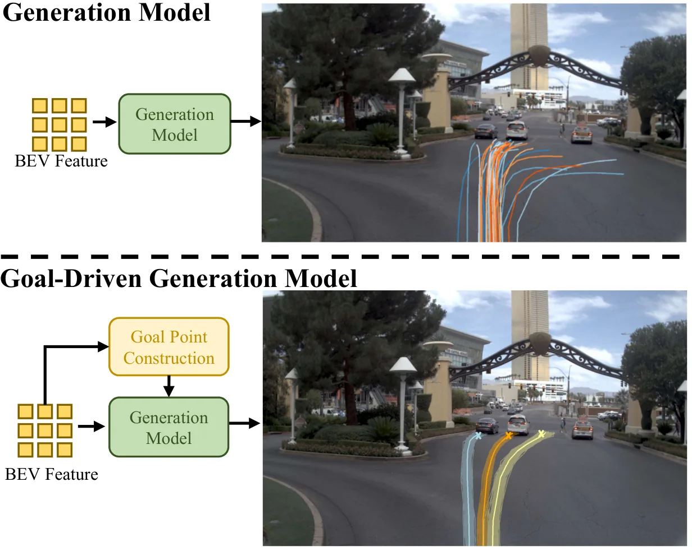
Fig. 1 — 목표점 없이(위) vs 목표점 조건(아래): 궤적 퍼짐이 준다 [21]
한계
· 자율주행 데이터라 차선이 목표점 vocabulary를 정해 준다 — 보도에는 그런 구조가 약하다
· 목표점 vocabulary가 조밀할수록 점수 계산량이 늘어난다
travplan
curb_ramp에서 경사로를 지나친 뒤 되돌아와야 하는 경우(TP-0078·0143)가 이 확장과 맞닿는다. subgoal 후보를 여러 개 두고 GoalFlow처럼 점수로 고르는 버전은 미착수다.
[21] Xing et al., “GoalFlow: Goal-Driven Flow Matching for Multimodal Trajectories Generation in End-to-End Autonomous Driving”, CVPR 2025 — arXiv:2503.05689
CH3 플래닝·학습 · 2024 arXiv / RSS 2025 · Physical Intelligence
π0 — VLM에 flow action expert를 붙인다 [22]
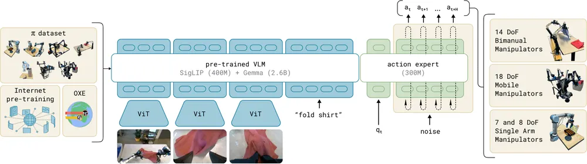
Fig. 3 — VLM backbone + flow action expert [22]
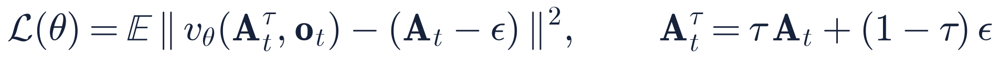
로봇 데이터로 사전학습한 VLA다: 영상·지시 → 50스텝 연속 행동 chunk.
방법
PaliGemma 3B가 영상·지시를 처리하고, 새로 붙인 3억 파라미터 action expert가 flow matching으로 50스텝 연속 행동 chunk를 낸다. 추론은 Euler 10스텝이다.
결과
로봇 7종 · 과제 68개 · 1만 시간+ 사전학습, 빨래 개기·상자 조립에 fine-tuning. 최대 50 Hz 제어.
travplan
Planner D와 같은 레시피(flow matching, Euler 10스텝, 행동 chunk)다. 규모만 다르다. 코드 Apache-2.0, 가중치는 Gemma 약관.
[22] Black et al., “π0: A Vision-Language-Action Flow Model for General Robot Control”, RSS 2025 — arXiv:2410.24164
CH3 플래닝·학습 · π0 · action expert의 flow matching
VLM은 보고 읽고, action expert는 행동 50스텝을 flow로 생성한다
1
입력 — 영상 여러 장, 언어 지시 \(\ell\), proprioception 상태 \(q\). PaliGemma 3B가 영상·지시 토큰을 처리한다.
2
행동 chunk — 앞으로 \(H=50\)스텝의 연속 행동이다. 잡음 \(\epsilon\)과 정답 \(A\)를 잇는 직선 위의 점에서 속도를 배운다.
3
추론 — 잡음에서 Euler 10스텝(\(\delta=0.1\)). VLM prefix는 한 번만 계산해 캐시하고, 행동 토큰만 10번 돈다.
4
구조 — 3억 파라미터 action expert가 VLM과 attention을 공유하되 가중치는 따로 둔다(mixture of experts 형태). block attention 마스크로 행동 토큰은 앞을 보되 VLM 토큰은 행동을 보지 않는다.
숫자로 따라가기
50 Hz로 50스텝 chunk면 1초 분량이다. Planner D는 10 Hz 계획에 40스텝(4초)이다. 같은 레시피(flow, Euler 10스텝, chunk)에 시간 규모만 다르다.
왜 이렇게 하나
행동을 토큰으로 이산화(OpenVLA 방식)하면 정밀한 연속 동작에서 해상도가 모자란다. flow는 연속 행동을 그대로 다루고 multimodal 분포도 담는다.
함정
둘째 줄은 flow matching의 일반형(잡음 \(\tau=0\) → 데이터 \(\tau=1\))이다. π0의 \(\tau\) 샘플링 분포·부호 규약은 원문에서 확인한다.
[22] Black et al., “π0: A Vision-Language-Action Flow Model for General Robot Control”, RSS 2025 — arXiv:2410.24164
CH3 플래닝·학습 · π0 · 규모만 다른 같은 레시피
VLA와 Planner D를 한 표에 놓는다
| π0 | travplan Planner D | |
|---|---|---|
| 조건 | 영상 + 지시 + 상태 | TravMap 크롭 + subgoal + 속도 |
| 백본 | PaliGemma 3B + 행동 3억 | 작은 MLP·CNN |
| 출력 | 행동 50스텝 (1 s @ 50 Hz) | 제어 변화율 40스텝 (4 s) × 16 |
| 적분 | Euler 10스텝 | Euler 10스텝 |
| 데이터 | 로봇 7종 · 과제 68 · 1만 시간+ | 운동학 시뮬 32,768 시연 (3분) |
| 선택 | 없음 (샘플 하나) | 규칙 점수로 16개 중 하나 |
출처: Planner 문서 §B.6b, §B.8.3
규모는 다섯 자릿수 차이지만 생성 레시피는 같다. 다른 것은 여러 후보를 만들어 고르느냐다 — 보도에서는 이 선택 단계가 안전을 맡는다.
한계
· 조작 과제용이라 이동·지형 데이터가 거의 없다
· Orin급에서 3B VLM의 지연이 크다
· 가중치 라이선스(Gemma 약관)가 제품 사용에 걸림돌이다
travplan
VLA는 Planner 위에 놓일 "의미 층"의 후보다. 몸에 가까운 층(TravMap·Controller)은 그대로 두고, 언어 지시를 subgoal로 바꾸는 데 쓴다(NaVILA식 경계).
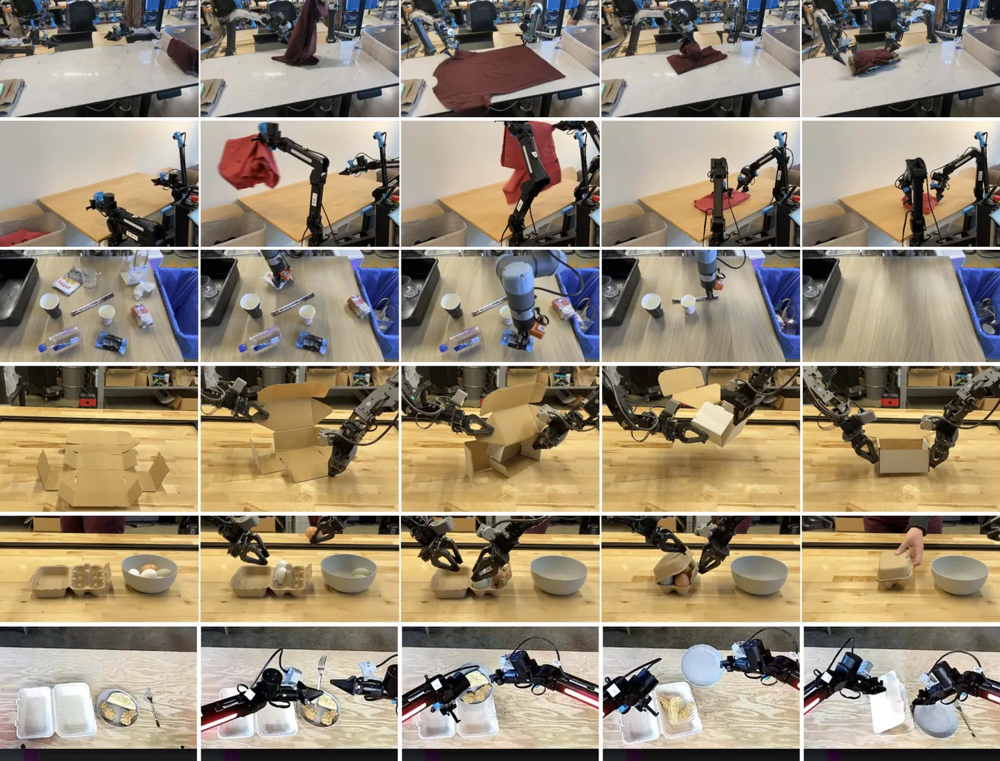
Fig. 12 — 행마다 한 과제: 빨래, 상자 조립, 달걀 [22]
[22] Black et al., “π0: A Vision-Language-Action Flow Model for General Robot Control”, RSS 2025 — arXiv:2410.24164
CH3 플래닝·학습 · 2024 arXiv / RSS 2025 · UCSD · USC · NVIDIA
NaVILA — 언어로 된 중간 행동 [23]

Fig. 2 — VLA(언어 행동) → 보행 RL 정책(관절) [23]
중간 행동의 예
“앞으로 75 cm”
관절 명령 대신 공간 정보를 담은 문장을 낸다 → 로봇 몸체가 바뀌어도 VLA는 그대로 쓴다.
문제
VLA가 관절 명령까지 곧장 내면 로봇마다 다시 학습해야 한다.
방법
두 층이다: VLA가 언어 중간 행동을 내고, 영상 기반 보행 RL 정책이 실행한다. 사람이 찍은 투어 영상을 연속 환경 내비게이션 데이터로 바꿔 학습에 섞었다.
결과
VLN 벤치마크 성공률 17%+ 향상, VLN-CE-Isaac 공개. Go2·H1·Booster T1 배포, 실제 지시 25개에서 88%.
travplan
“위 층은 의미, 아래 층은 몸” — travplan의 Planner(경로) / Controller(twist) 분리와 같은 경계 설계다.
[23] Cheng et al., “NaVILA: Legged Robot Vision-Language-Action Model for Navigation”, RSS 2025 — arXiv:2412.04453
CH3 플래닝·학습 · NaVILA · 두 층의 인터페이스
위 층은 문장을, 아래 층은 속도 명령을 낸다
1
위 층(VLA) — 단일 시점 영상 이력과 지시를 받아, 공간 정보를 담은 언어 행동을 낸다.
2
번역 — 문장을 거리·각도로 파싱해 일정한 속도 명령으로 바꾼다. 몸체가 바뀌어도 이 줄 위쪽은 그대로다.
3
아래 층(보행 RL) — 영상 기반 보행 정책이 proprioception + 높이 정보로 명령을 추종한다. 보상은 속도 추종 오차의 지수 형태가 표준이다.
4
데이터 — 사람이 찍은 투어 영상을 연속 환경 내비게이션 데이터로 바꿔 VLA 학습에 섞는다.

왜 이렇게 하나
VLA가 관절 명령까지 내면 로봇마다 다시 학습해야 한다. 언어 중간 행동 덕에 Go2·H1·Booster T1이 같은 위 층을 쓴다.
travplan
travplan의 Planner(경로·시간) / Controller(twist) 분리와 같은 경계 설계다. 위 층이 몸을 모를수록 아래 층의 로컬 안전이 중요해진다.
함정
둘째·셋째 줄은 인터페이스와 보행 보상의 일반형이다. NaVILA의 정확한 파싱 규칙·보상 항은 원문(arXiv:2412.04453)에서 확인한다.
[23] Cheng et al., “NaVILA: Legged Robot Vision-Language-Action Model for Navigation”, RSS 2025 — arXiv:2412.04453
CH3 플래닝·학습 · 2025 · CVPR · NYU
CityWalker — 웹의 도시 보행 영상으로 배운다 [24]
지도 없이 보도를 다니는 라스트마일 배달로봇을 겨냥한다. 2,000시간+ 보행 영상에서 visual odometry로 행동 라벨을 뽑는다.
CityWalker
77.3%
ViNT fine-tuning
57.1%
NoMaD zero-shot
42.9%
방법
DPVO로 프레임 사이 이동을 추정하고, 영상마다 다른 scale은 평균 보폭으로 정규화한다. 고정 영상 인코더 + 좌표 인코더 → transformer가 waypoint와 도착 여부를 낸다.
travplan
보도 로봇 데이터가 없는 문제의 한 답이다. 다만 출력이 waypoint라 턱·포트홀 같은 높이 위험은 TravMap 쪽이 맡아야 한다.
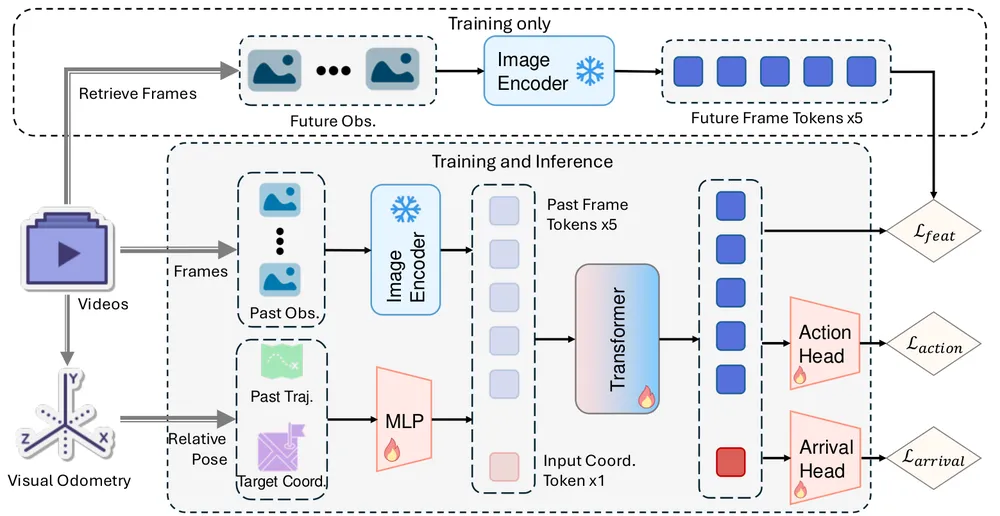
Fig. 2 — 웹 영상 → VO 라벨 → 행동·도착 예측 [24]
실물: Unitree Go1, 소량 원격조종 데이터로 fine-tuning 후 평가
[24] Liu et al., “CityWalker: Learning Embodied Urban Navigation from Web-Scale Videos”, CVPR 2025 — arXiv:2411.17820
CH3 플래닝·학습 · CITYWALKER · 웹 영상을 행동 라벨로
사람의 걸음을 로봇 행동으로 — scale을 맞추는 것이 핵심이다
1
자세 추출 — 도시 보행 영상 2,000시간+에서 DPVO(visual odometry)로 프레임마다 자세 \(\mathbf p_t\)를 얻는다. 단안 카메라라 scale을 모른다.
2
scale 정규화 — 영상마다 평균 보폭 \(\bar s\)로 나눠 행동을 "보폭 단위"로 만든다.
3
모델 — 고정 영상 인코더 + 학습하는 좌표 인코더(과거 궤적·목표). transformer가 waypoint와 도착 여부를 낸다.
4
손실 — waypoint 오차 + 도착 분류 + (학습 때만) 미래 프레임 토큰을 맞히는 보조 항.
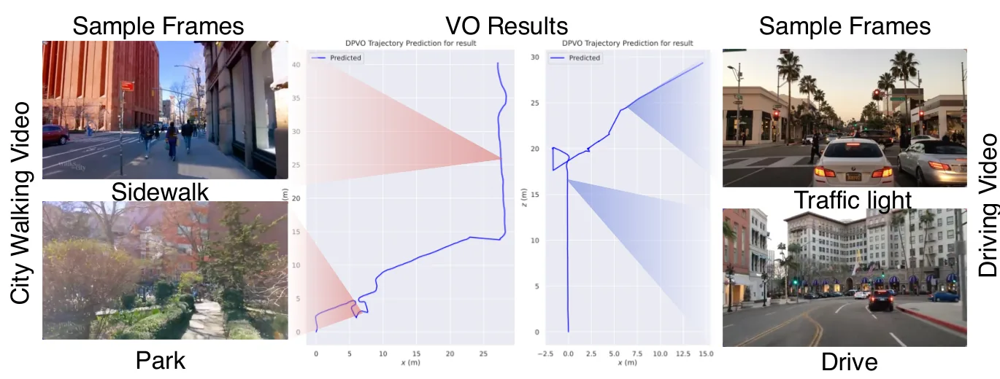
Fig. 4 — 웹 보행·주행 영상과 DPVO로 복원한 궤적 [24]
숫자로 따라가기
한 영상의 VO 이동이 0.37, 0.41, 0.39 단위 → \(\bar s=0.39\), 행동 ≈ (0.95, 1.05, 1.0) 보폭. 실물에서는 로봇의 보폭을 곱해 되돌린다.
왜 이렇게 하나
보도 로봇 원격조종 데이터는 적고 다양하지 않다. 사람이 걷는 영상은 무한에 가깝다 — 그 규모로 "보도에서 어디로 가나"를 배운다.
함정
넷째 줄은 waypoint·도착·보조 항의 일반형이다. 원문의 손실 가중치와 보조 항의 정의는 arXiv:2411.17820에서 확인한다.
[24] Liu et al., “CityWalker: Learning Embodied Urban Navigation from Web-Scale Videos”, CVPR 2025 — arXiv:2411.17820
CH3 플래닝·학습 · CITYWALKER · 결과와 travplan의 몫
도시 주행 77.3 % — 하지만 높이 위험은 다른 층이 맡는다
CityWalker
77.3 %
Go1 실물
ViNT fine-tuning
57.1 %
NoMaD zero-shot
42.9 %
| CityWalker | travplan | |
|---|---|---|
| 데이터 | 웹 보행 영상 2,000 h+ | 운동학 시뮬 시연 |
| 출력 | waypoint + 도착 | 시간 인덱스 궤적 (Planner D) |
| 높이 위험 | 영상 특징에 맡김 | TravMap STEP·ELEV + 치명 셀 |
| fine-tuning | 소량 원격조종 | — (실물 전) |
출처: Planner 문서 §B.6b
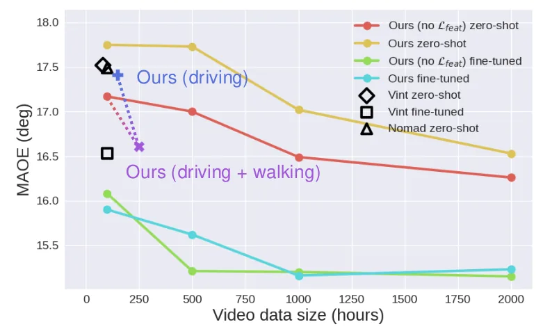
Fig. 6 — 영상 시간이 늘수록 방향 오차(MAOE)가 준다 [24]
한계
· 사람 걸음 영상에는 로봇이 못 넘는 턱(연석)을 사람이 넘는 장면이 섞여 있다
· 출력이 waypoint라 시간·속도 계획이 없다
· 평가 로봇이 Go1(사족)이라 바퀴 로봇의 턱 한계와 다르다
travplan
보도 로봇 데이터가 없는 문제의 한 답이다. 쓴다면 Planner의 "의미 subgoal" 쪽이고, 턱·포트홀은 TravMap이 막는다. 같은 탭의 MIMIC(§B.6d)은 보도 시연 로그로 배운다.
[24] Liu et al., “CityWalker: Learning Embodied Urban Navigation from Web-Scale Videos”, CVPR 2025 — arXiv:2411.17820
CHAPTER 4 · 제어 · 모델 기반 §E.1 · §B.5 · §M
rollout하고 가중 평균하는 MPPI 계열
경로 적분 제어(2015) → 정보이론적 유도(2017) → 외란에 강건한 변형 → 샘플링 분포를 바꾼 변형 → 학습 prior를 넣는 방법 → GPU 라이브러리. 그리고 같은 벤치마크의 경쟁자, GP를 넣은 NMPC.
| 연도 | 이름 | 바꾼 것 |
|---|---|---|
| 2015–18 | MPPI · IT-MPC | GPU 샘플링 + KL 유도 |
| 2018–21 | Tube · Robust MPPI | 명목·실제 상태 분리 + 추종 제어기 |
| 2022 | log-MPPI · SMPPI | 샘플링 분포(NLN, 변화율 적분) |
| 2017–20 | Cautious GP-MPC | GP 분산 → 확률 제약 tightening |
| 2024 | MPPI-Generic | C++/CUDA 템플릿 라이브러리 |
| 2026 | ProxPI | 학습 prior는 proximal 비용으로만 |
CH4 제어·모델 · 2015 arXiv / 2017 ICRA / 2018 T-RO · Georgia Tech
MPPI · 정보이론적 MPC [25]
제어열에 잡음을 섞은 후보 수천 개를 GPU로 rollout하고, 비용의 지수 가중으로 평균한다. 미분이 필요 없다.
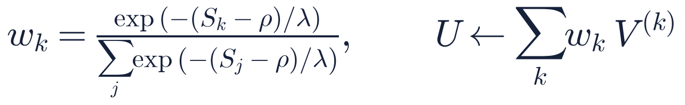
문제
공격적 주행의 비선형 동역학과 불연속 비용에서는 gradient 기반 MPC가 갈 방향을 얻지 못한다.
방법
2015: 경로 적분 제어의 중요도 샘플링. 2017: 비용의 볼츠만 분포에 KL로 가장 가까운 제어 분포를 유도 → 일반 비선형 동역학으로 확장.
결과
1/5 스케일 AutoRally로 흙길 트랙을 공격적으로 주행했다. CEM 기반 MPC와 비교했다.
travplan
MPPIController의 직접 출처다. 치명 셀 페널티(1000) 같은 계단 비용을 그대로 쓴다. 제어 비용 항은 뺐다(그래서 KL 해석은 근사다).

IT-MPC Fig. 2 — 제어 분포를 최적 분포 쪽으로 옮긴다 [25]
| travplan | 값 |
|---|---|
| 후보 K · horizon | 768 · 4 s |
| 온도 λ | 0.5 |
| 노이즈 | AR(1), a = 0.7 |
[25] Williams et al., “Model Predictive Path Integral Control using Covariance Variable Importance Sampling”, arXiv:1509.01149 (2015) · Williams et al., “Information Theoretic Model Predictive Control: Theory and Applications to Autonomous Driving”, IEEE T-RO 2018 — arXiv:1707.02342
CH4 제어·모델 · MPPI · 중요도 가중치가 나오는 길
최적 분포에서 직접 샘플링할 수 없으니, 지금 분포에서 샘플링하고 가중치를 다시 준다
1
최적 분포 — 자유 에너지를 최소로 하는 제어열 분포는 비용의 볼츠만 분포다(첫 덱의 KL 유도). \(p\)는 잡음만 있는 기준 분포 \(\mathcal N(0,\Sigma)\)이다.
2
중요도 샘플링 — 지금 해 \(U\) 주변의 \(q=\mathcal N(U,\Sigma)\)에서 \(V=U+\epsilon\)을 샘플링하면, 가중치는 \(q^{\star}/q\)다.
3
가우시안 비 — 두 가우시안의 지수를 빼면 제어 비용 항이 나온다(스텝마다 \(\mathbf u_t\), \(\boldsymbol\epsilon_t\)).
4
갱신 — 공통 인자를 떼고 최솟값 \(\rho\)를 빼 수치 안정성을 지킨다. 새 해는 잡음의 가중 평균만큼 움직인다.
숫자로 따라가기
λ에 따른 유효 샘플 수(ESS) \(1/\sum w_k^2\): 비용 1.0, 1.5, 3.0이면 λ = 0.1 → 1.01, λ = 1 → 2.19, λ = 10 → 2.98. 온도 λ는 "후보 몇 개를 믿을지"를 정한다.
travplan
travplan은 셋째 줄의 제어 비용 항을 뺐다 → 기준 분포를 이전 해 주변에 둔 것과 같아 KL 해석은 근사다. 기본값 \(K=768\), \(T=40\), \(\lambda=0.5\)(절대값), 잡음 표준편차는 (0.4, 0.25, 0.6)이다.
함정
경로 추종 후보 30 %(prior_ratio)를 섞으면서 중요도 가중치를 그 proposal 분포에 맞게 고치지 않는다. proposal 분포가 둘인데 가중치 식은 하나다.
[25] Williams et al., “Model Predictive Path Integral Control using Covariance Variable Importance Sampling”, arXiv:1509.01149 (2015) · Williams et al., “Information Theoretic Model Predictive Control: Theory and Applications to Autonomous Driving”, IEEE T-RO 2018 — arXiv:1707.02342
CH4 제어·모델 · MPPI · rollout 모델이 틀리면
MPPI는 모델이 맞을 때만 강하다 — plant 지연 하나로 치명 실패 55
제어 시간
13.0 ms
guidance+mppi 중앙값
벤치마크 중
8.7 ms
control_ms_mean
주기
0.1 s
예산의 1/8
| 스택 (권장 L1 + 스워브 plant, 레벨 3) | 도달 / 360 | 치명 |
|---|---|---|
| mppi — rollout이 지연을 모른다 (TP-0149) | 221 | 55 |
| mppi_plant_lag — rollout에 지연 (TP-0150) | 239 | 4 |
| mpc — acados NMPC (TP-0152) | 222 | 34 |
| mpc_gp — NMPC + 잔차 GP | 215 | 32 |
출처: CLAUDE.md 현재 상태. 혼돈 조건(2층) — 1–2개 차이는 잡음 바닥 안
한계
· 모든 후보가 나쁜 곳에 있으면 평균도 나쁘다 (좁은 틈에서 ESS → 1)
· 두 군집 사이로 평균이 떨어질 수 있다 (λ가 클수록)
· λ가 비용의 절대 크기에 의존하므로 비용을 고치면 λ도 다시 맞춰야 한다
travplan
plant 실행에는 rollout에 지연을 넣은 mppi_plant_lag를 쓴다(control/mppi/plant_aware.py). 남은 병목은 plant 레벨 3의 시간 초과(117/360, 경사로)다(TP-0151).
[25] Williams et al., “Model Predictive Path Integral Control using Covariance Variable Importance Sampling”, arXiv:1509.01149 (2015) · Williams et al., “Information Theoretic Model Predictive Control: Theory and Applications to Autonomous Driving”, IEEE T-RO 2018 — arXiv:1707.02342
CH4 제어·모델 · 2018 RSS (Tube) / 2021 RA-L (Robust) · Georgia Tech
Tube · Robust MPPI — 외란에 강건하게 [26]
MPPI
매 스텝 실제 상태에서 다시 시작한다. 외란이 크면 샘플 전체가 나쁜 영역으로 밀려 중요도 샘플링이 무너진다.
Tube-MPPI
외란 없는 명목 상태에서 풀고, 추종 제어기가 실제 상태를 명목으로 끌어온다. 명목이 실제에서 멀어질 수 있고 보장도 없다.
Robust MPPI
실제 상태가 괜찮으면 거기서, 위험하면 명목 상태에서 다시 시작한다. 자유 에너지 증가의 상한을 유도했다.
방법
명목·실제를 합친 augmented 상태, 명목 재시작 규칙(자유 에너지 F_MC가 충돌 비용 α 이하인 후보 중 실제 상태에 가장 가까운 것), 추종 제어기의 능력을 반영한 중요도 샘플링. 추종 제어기 K는 iLQG나 contraction metric 제어기다.
결과
AutoRally 실차에서 MPPI의 강건성 부족과 Tube-MPPI의 과한 보수성을 함께 줄였다. MPPI-Generic에 구현돼 있다.
travplan
Isaac·실물에서 슬립이 커지면 “매번 실제 상태에서 재시작”을 RMPPI식 명목 선택으로 바꾸는 것이 첫 후보다. 스워브 plant의 지연은 지금 rollout에 지연을 넣어 푼다(mppi_plant_lag, TP-0150).
[26] Gandhi et al., “Robust Model Predictive Path Integral Control: Analysis and Performance Guarantees”, RA-L 2021 — arXiv:2102.09027 · Williams et al., Tube-MPPI, RSS 2018
CH4 제어·모델 · ROBUST MPPI · 명목 상태를 고르는 규칙
자유 에너지로 "아직 괜찮은가"를 잰다
1
증강 상태 — 외란 없는 명목 상태 \(\bar{\mathbf x}\)와 실제 상태 \(\mathbf x\)를 함께 시뮬레이션한다. MPPI는 명목 상태에서 풀고, 추종 제어기가 실제 상태를 명목 쪽으로 끌어온다.
2
자유 에너지 추정 — 한 시작점에서 rollout한 후보 \(K\)개의 비용으로 soft-min을 계산한다.
3
범위 — 합은 가장 큰 항 하나보다 크고 그 \(K\)배보다 작으므로, 자유 에너지는 최소 비용 근처로 제한된다.
4
재시작 규칙 — 실제 상태와 이전 명목 상태 사이의 후보 \(\mathbf p_i\) 가운데, 자유 에너지가 임계값 \(\alpha\)(보통 충돌 비용) 이하이면서 실제 상태에 가장 가까운 것을 고른다.
[26] Gandhi et al., “Robust Model Predictive Path Integral Control: Analysis and Performance Guarantees”, RA-L 2021 — arXiv:2102.09027 · Williams et al., Tube-MPPI, RSS 2018
CH4 제어·모델 · ROBUST MPPI · 세 변형의 성격
매번 재시작하거나, 늘 명목 상태를 따르거나, 판단해서 재시작한다
| MPPI | Tube-MPPI | Robust MPPI | |
|---|---|---|---|
| 어디서 시작 | 매번 실제 상태 | 늘 명목 상태 | 자유 에너지로 선택 |
| 외란이 오면 | 샘플 전체가 밀림 | 추종 제어기가 흡수 | 추종 + 재시작 규칙 |
| 보장 | 없음 | 없음 (명목이 멀어질 수 있음) | 자유 에너지 증가 상한 |
| 경향 | 강건성 부족 | 과한 보수성 | 둘을 함께 줄임 (AutoRally) |
출처: Controller 문서 §E.1. 구현은 MPPI-Generic에 있다
travplan의 plant 문제는 외란이 아니라 모델에 없는 지연이다. 그래서 지금은 rollout에 지연을 넣는 쪽(mppi_plant_lag)으로 풀었다.
travplan
Isaac·실물에서 슬립이 커지면 "매번 실제 상태에서 재시작"을 RMPPI식 명목 선택으로 바꾸는 것이 첫 후보다(Controller 문서 §E.1).
Fig. 2 — AutoRally 시뮬에서 고른 명목 상태: RMPPI는 후보 번호(0 이전 명목 … 4 전파한 명목 … 8 실제 상태), Tube-MPPI는 명목(분홍)·실제(하늘) [26]
[26] Gandhi et al., “Robust Model Predictive Path Integral Control: Analysis and Performance Guarantees”, RA-L 2021 — arXiv:2102.09027 · Williams et al., Tube-MPPI, RSS 2018
CH4 제어·모델 · 2022 · RA-L × 2
log-MPPI · SMPPI — 샘플링 분포를 바꾼다 [27]
log-MPPI · Mohamed et al.
정규 × 로그정규 곱(NLN)
문제 샘플이 모두 비용이 높거나 불가능한 영역에 몰리면 실행할 수 없는 궤적이 나온다.
결과 작은 분산으로 제약 위반을 피하면서도 궤적이 넓게 퍼진다. 2D occupancy grid를 비용으로 바로 넣어 미지 환경을 충돌 없이 주행한다.
SMPPI · Kim et al.
변화율에 노이즈를 넣고 적분
문제 스텝마다 독립인 노이즈를 쓰면 가중평균도 들쭉날쭉하다 — 떨림은 샘플링의 확률성에서 온다.
결과 사후 스무딩 없이 후보 자체가 매끄럽다(input lifting). horizon 중간에서 분산이 Σ가 되게 맞춘다.
travplan
기본은 AR(1) 시간 상관 노이즈(a = 0.7)이고, SMPPI는 SmoothMPPIController로 반영했다(벤치마크 이름 mppi_smooth). _noise 하나만 바꾼 변형이다. log-MPPI는 좁은 틈에서 ESS가 1로 떨어질 때의 후보다.
[27] Mohamed, Yin & Liu, “Autonomous Navigation of AGVs in Unknown Cluttered Environments: log-MPPI Control Strategy”, RA-L 2022 — arXiv:2203.16599 · Kim et al., “Smooth Model Predictive Path Integral Control without Smoothing”, RA-L 2022 — arXiv:2112.09988
CH4 제어·모델 · log-MPPI · SMPPI · 세 가지 잡음
어떤 잡음을 섞느냐가 후보의 모양을 정한다
1
AR(1) (travplan 기본) — 이전 잡음을 \(a\)만큼 남긴다. \(\sqrt{1-a^{2}}\)로 보정해 분산이 스텝마다 같게 한다.
2
적분 잡음 (SMPPI) — 변화율에 잡음을 넣고 적분한다. 분산이 시간에 비례해 커지므로 horizon 중간에서 \(\Sigma\)가 되게 맞춘다.
3
NLN (log-MPPI) — 정규 × 로그정규. 평균은 0, 분산은 로그정규의 이차 모멘트만큼 커지고 꼬리가 두껍다.
4
공통점 — 셋 다 최적화기(가중 평균)는 그대로 두고 제안 분포만 바꾼다. 저장소 규칙(mppi.py는 건드리지 않음)과 맞는다.
[27] Mohamed, Yin & Liu, “Autonomous Navigation of AGVs in Unknown Cluttered Environments: log-MPPI Control Strategy”, RA-L 2022 — arXiv:2203.16599 · Kim et al., “Smooth Model Predictive Path Integral Control without Smoothing”, RA-L 2022 — arXiv:2112.09988
CH4 제어·모델 · log-MPPI · SMPPI · travplan이 측정한 것
노이즈 모델만 바꿨더니 jerk가 28 % 줄었다
| 변형 (TP-0016, 4 시나리오 × 3 seed) | 성공 | 도달 (s) | gt_cost | pitch (°) | RMS jerk |
|---|---|---|---|---|---|
| AR(1) a = 0.7 (기본) | 12/12 | 15.5 | 0.024 | 4.3 | 6.7 |
| AR(1) a = 0.9 | 12/12 | 12.2 | 0.030 | 4.1 | 6.1 |
| 적분 노이즈 (smppi_lite) | 12/12 | 14.1 | 0.023 | 4.1 | 4.8 |
출처: Controller 문서 §B.5(TP-0016, results/exp_smppi.txt). 계획 4.7–5.1 ms
적분 노이즈는 12개 에피소드 모두에서 jerk를 줄였고 안전 지표는 그대로였다. a = 0.9는 빠르지만 gt_cost가 25 % 나빠진다(지형을 덜 피한다).
travplan
결론은 "비용 항은 그대로 두고 노이즈 모델만 바꾸면 된다". SmoothMPPIController(control/mppi/smooth.py, TP-0021)로 정식 추가했고 벤치마크 이름은 mppi_smooth다.
![[RAL/IROS 2022] Smooth Model Predictive Path Integral Control without Smoothing](../../assets/yt/fyngK8PCoyM.webp)
[27] Mohamed, Yin & Liu, “Autonomous Navigation of AGVs in Unknown Cluttered Environments: log-MPPI Control Strategy”, RA-L 2022 — arXiv:2203.16599 · Kim et al., “Smooth Model Predictive Path Integral Control without Smoothing”, RA-L 2022 — arXiv:2112.09988
CH4 제어·모델 · 2026-09 · arXiv
ProxPI — 학습 prior는 비용으로만 [28]
Fig. 2 — prior가 틀릴 때: MPPI / 워밍스타트 / ProxPI [28]
샘플링 분포의 평균을 prior로 옮기면, prior가 틀릴 때 최적화기의 보정이 매번 버려진다.
대신 prior를 부드러운 proximal 비용 항으로만 넣으면 다른 비용(traversability)이 바로잡을 수 있다.
해석
ProxPI의 목표 분포 = MPPI 우도 × 가우시안 prior(평균 U_p, 공분산 λ/2α·I). 워밍스타트와 중심은 같지만 폭이 다르다.
travplan
Planner 경로를 MPPI에 넣는 방식의 근거가 된다. travplan ReferenceCost가 이미 proximal 비용 형태다 — 다만 경로 추종 후보 30%는 평균을 옮기는 쪽이라 둘이 섞여 있다.
[28] ProxPI, 2026 — arXiv:2609.00941 (실제 로봇·시뮬레이션 5종 검증)
CH4 제어·모델 · ProxPI · 왜 비용으로만 넣나
워밍스타트는 보정을 버리고, proximal 비용은 보정을 쌓는다
1
두 방식 — 학습 prior가 제어 시퀀스 \(U_p\)를 줄 때, 샘플링 중심을 옮기거나(워밍스타트) 비용에 proximal 항을 더한다(ProxPI).
2
목표 분포 — proximal 항은 평균 \(U_p\), 공분산 \(\tfrac{\lambda}{2\alpha}I\)인 가우시안 prior를 곱한 것과 같다.
3
고정점 — 과제 비용을 국소 이차식 \(S\approx S(U^{\star})+\tfrac12\lVert V-U^{\star}\rVert_H^{2}\)로 근사하면, 해는 과제 최적해와 prior 사이의 가중 평균이다.
4
수렴 — ProxPI는 이전 해 \(U_j\)를 중심으로 샘플링하므로 오차가 축소 사상(contraction)으로 줄어든다. 워밍스타트는 매번 \(U_p\)로 되돌아가 이 보정을 버린다.
숫자로 따라가기
1차원 \(H=2\), \(\alpha=0.5\), \(U^{\star}=1.0\)(경사로 쪽), \(U_p=0\)(틀린 prior): \(U^{\dagger}=(2\cdot1+1\cdot0)/3=0.67\). \(\alpha\)를 줄이면 해가 과제 최적해 쪽으로 더 간다.
왜 이렇게 하나
prior가 목표 분포에서 멀면 가중치가 몇 샘플에 몰린다(ESS 감소, \(\chi^2\) 발산). proximal 비용은 prior를 "가까이 있으면 좋다" 정도로만 반영한다.
travplan
travplan은 둘을 섞는다: ReferenceCost는 proximal 비용(ProxPI 쪽), 경로 추종 후보 30 %는 평균 옮기기(워밍스타트 쪽). 이 분석대로면 30 % 혼합이 prior가 틀릴 때 손해일 수 있다.
[28] ProxPI, 2026 — arXiv:2609.00941 (실제 로봇·시뮬레이션 5종 검증)
CH4 제어·모델 · ProxPI · travplan의 Planner→Controller 경계
Planner가 틀렸을 때 Controller가 혼자 바로잡을 수 있나
| 방식 | 샘플 중심 | prior가 틀리면 | travplan |
|---|---|---|---|
| 워밍스타트 | U_p | 매 반복 보정이 버려짐 | 경로 추종 후보 30 % |
| ProxPI | 이전 해 | 다른 비용이 바로잡음 | ReferenceCost |
| 둘 다 없음 | 이전 해 | prior 무시 | — |
출처: Controller 문서 §B.5
시험해 볼 비교: prior_ratio 0.3 → 0 (ReferenceCost만). 판정은 혼돈 조건 짝 비교와 치명 실패 수로 한다.
Fig. 4 — FR3 실물: 분포 안 목표(주황)는 둘 다 닿지만, 분포 밖 목표(파랑)로 바뀌자 ProxPI(위)만 닿고 워밍스타트(아래)는 닿지 못한다 [28]
한계
· ProxPI 분석은 국소 이차 근사에 기댄 결과다 — 치명 셀 같은 계단형 비용에서는 근사가 거칠다
· 논문의 5개 로봇 검증 수치는 이 문서에 정리하지 않았다(원문 확인)
travplan
Planner D가 경사로를 지나친 경우(TP-0078) Controller가 잘못된 궤적을 끝까지 따르지 않게 하는 근거다. 시간 참조 모드의 진행 항(w_progress)도 비용 쪽 설계다.
[28] ProxPI, 2026 — arXiv:2609.00941 (실제 로봇·시뮬레이션 5종 검증)
CH4 제어·모델 · 2024 · arXiv · Georgia Tech
MPPI-Generic — GPU MPPI 라이브러리 [29]
MPPI · Tube-MPPI · Robust MPPI를 C++/CUDA 템플릿으로 구현했다. 동역학과 비용을 API에 맞춰 쓰면 MPPI 코드를 고치지 않고 바꿔 끼울 수 있다.
비교 공정성: 차동 구동 모델과 Nav2의 비용 항을 똑같이 재현해 같은 문제를 풀게 했다.
| 구현 (샘플 128개) | 최적화 1회 |
|---|---|
| MPPI-Generic · RTX 3080 | ≈ 0.15 ms |
| MPPI-Generic · Orin Nano | ≈ 0.6 ms |
| Nav2 MPPI (CPU) | 0.39–0.62 ms |
| TorchRL (PyTorch) | 25–48 ms |
결과
PyTorch 구현보다 두 자릿수 이상 빠르고, Jetson에서도 1 ms 안쪽이다. 코드 ACDSLab/MPPI-Generic ★0.3k.
travplan
travplan MPPIController(PyTorch, 768 × 40스텝)는 운동학 벤치마크에서 스텝당 약 10 ms다. Orin 이식에서 지연이 문제가 되면 첫 후보다. 비용 항(CostTerm)을 CUDA로 옮기는 것이 실제 작업이다.
[29] Vlahov et al., “MPPI-Generic: A CUDA Library for Stochastic Trajectory Optimization”, 2024 — arXiv:2409.07563
CH4 제어·모델 · MPPI-GENERIC · 한 반복을 GPU 커널로
샘플 축은 병렬, 시간 축은 직렬
1
잡음 — \(K\times T\times m\)개를 한 번에 샘플링한다(curand). 시간 상관이 있으면 시간 축의 누적이 직렬 단계가 된다.
2
rollout + 비용 — 스레드(블록) 하나가 후보 하나를 맡아 \(T\)스텝을 차례로 전파하며 비용을 더한다. 동역학과 비용이 템플릿 인자다.
3
Reduction — \(\min_k S_k\) reduction, 가중치 계산, 그리고 가중치로 잡음을 합치는 reduction(\(K\) → 1)이 \(T\times m\) 원소마다 병렬로 돈다.
4
지연 — 대략 시간 축의 직렬 길이가 지배한다. GPU가 포화되지 않았다면 샘플을 늘려도 시간이 거의 늘지 않는다.
숫자로 따라가기
travplan \(K=768,\ T=40,\ m=3\): 잡음 92,160개, 동역학 스텝 30,720번이 한 반복이다. PyTorch는 이를 텐서 연산으로 처리해 스텝당 약 10 ms가 걸린다.
왜 이렇게 하나
API(동역학·비용 클래스)만 맞추면 MPPI 코드를 고치지 않고 모델을 바꿀 수 있다. 같은 문제를 다른 구현과 공정하게 비교할 수 있다.
함정
넷째 줄은 직관을 보이는 근사식이다. 실제 시간은 메모리 배치, 비용 함수의 분기, 지도 텍스처 조회에 크게 좌우된다.
[29] Vlahov et al., “MPPI-Generic: A CUDA Library for Stochastic Trajectory Optimization”, 2024 — arXiv:2409.07563
CH4 제어·모델 · MPPI-GENERIC · travplan의 시간 예산
Orin으로 옮길 때 무엇이 남나
MPPI-Generic · 3080
≈ 0.15 ms
샘플 128
Orin Nano
≈ 0.6 ms
샘플 128
travplan PyTorch
≈ 10 ms
샘플 768
| travplan CostTerm (control/mppi/costs.py) | 하는 일 | CUDA 이식 난이도 |
|---|---|---|
| ReferenceCost | 경로·시간 참조 추종 + 진행 항 | 낮음 |
| TraversabilityCost | TravMap cost·σ 읽기, 치명 1000 | 중간 (지도 조회) |
| RiskCost | CVaR 꼬리 + 동적 장애물 겹침 | 중간 (top-k) |
| AttitudeCost | pitch·roll 한계 | 중간 (지형 기울기) |
| ControlCost · GoalApproachCost | 변화율 · 목표 감속 | 낮음 |
출처: travplan control/mppi/costs.py
한계
· 논문 수치는 샘플 128개 기준이다 — travplan은 768개라 직접 비교가 아니다
· 실제 비용 함수(지도 조회·CVaR)가 들어가면 시간이 달라진다
travplan
0.1 s 주기에 지금 10 ms면 예산이 남는다. Orin 이식에서 지연이 문제가 되면 첫 후보이고, 그때 할 일은 위 표의 CostTerm을 옮기는 것이다.
[29] Vlahov et al., “MPPI-Generic: A CUDA Library for Stochastic Trajectory Optimization”, 2024 — arXiv:2409.07563
CH4 제어·모델 · 2017 arXiv / 2020 IEEE TCST · ETH Zeilinger 그룹
Cautious MPC — GP 분산으로 제약을 조인다 [30]
travplan TP-0069 — 노드별 튜브 폭: 4 s 끝 중앙값 4 cm, 90% 8 cm
![Pr[d(p_k) < 0] ≤ ε ⇔ d(p̄_k) ≥ Φ⁻¹(1−ε) σ_(p,k)](img/3125cbe312d78d7e64b0450f7bc27ea2.png)
문제
명목 모델에 학습한 잔차를 더하면 성능은 오르지만, 모델이 자신 없는 영역에서도 똑같이 공격적이다.
방법
GP가 잔차의 평균과 분산을 함께 내고, 분산을 예측 horizon을 따라 근사 전파해 확률 제약으로 바꾼다 → 자신 없는 곳에서 제약이 저절로 조여진다.
결과
원격조종 경주용 차 실물에서 성능과 안전이 함께 올랐다.
travplan
NMPC 갈래(acados)의 설계 원형이다(TP-0069~0071). GP 평균을 노드 파라미터로 넣으면 0차 근사가 공짜다. plant 레벨 3: mpc 222/360(치명 34), mpc_gp 215/360(치명 32) — 아직 mppi_plant_lag(239, 치명 4)에 뒤진다.
[30] Hewing, Kabzan & Zeilinger, “Cautious Model Predictive Control Using Gaussian Process Regression”, IEEE TCST 2020 — arXiv:1705.10702
CH4 제어·모델 · CAUTIOUS MPC · GP 분산을 horizon 위로
모델이 모르는 곳에서 제약이 저절로 조여진다
1
GP 잔차 — 데이터 \((\mathbf Z,\mathbf y)\)에서 구한 잔차의 사후 평균과 분산이다. 데이터에서 멀수록 분산이 prior 값으로 돌아간다.
2
평균 전파 — 명목 모델 + GP 평균이다. travplan NMPC는 GP 평균을 노드 파라미터로 넣는다(0차 근사).
3
분산 전파 — 선형화로 상태 공분산과 GP 분산을 합친다.
4
제약 조이기 — 확률 제약을 평균에 대한 결정론적 제약으로 바꾼다. 여유(margin)가 표준편차에 비례한다.
숫자로 따라가기
\(\epsilon=0.05\)이면 \(\Phi^{-1}(0.95)=1.645\). 4 s 끝 위치 표준편차 4 cm(TP-0069 중앙값)면 여유 6.6 cm, 90 % 분위 8 cm면 13.2 cm.
왜 이렇게 하나
잔차를 더하면 성능은 오르지만, 모델이 자신 없는 영역에서도 똑같이 공격적이다. 분산이 그 불확실성을 제약 여유로 바꾼다.
함정
분산 전파는 근사다(선형화, 가우시안 가정). 다봉 분포나 강한 비선형에서는 여유가 틀린다 — 그래서 확률 보장이 아니라 "조심스러워지는 것"이다.
[30] Hewing, Kabzan & Zeilinger, “Cautious Model Predictive Control Using Gaussian Process Regression”, IEEE TCST 2020 — arXiv:1705.10702
CH4 제어·모델 · CAUTIOUS MPC · travplan NMPC 갈래
GP를 넣은 NMPC는 아직 MPPI를 넘지 못했다
| 스택 (권장 L1 + 스워브 plant, 레벨 3) | 도달 / 360 | 치명 |
|---|---|---|
| mppi — rollout이 지연을 모른다 (TP-0149) | 221 | 55 |
| mppi_plant_lag — rollout에 지연 (TP-0150) | 239 | 4 |
| mpc — acados NMPC (TP-0152) | 222 | 34 |
| mpc_gp — NMPC + 잔차 GP | 215 | 32 |
출처: CLAUDE.md 현재 상태. 혼돈 조건(2층) — 1–2개 차이는 잡음 바닥 안
Fig. 7 — 소형 레이스카 실물 궤적(색은 속도 0–3 m/s): (a) 명목 제어기, (b) GP 제어기 — GP 쪽 궤적이 트랙 안에서 더 모인다 [30]
한계
· GP 평균만 쓰는 0차 근사라 분산 조이기는 아직 MPPI 쪽(E.10)에서만 쓴다
· mpc_gp가 mpc보다 낫다는 근거가 없다(215 대 222, 잡음 바닥 안)
· 이 PC의 GP는 다시 맞춘 refit 버전이다 — 원래 GP 확인은 TP-0144
travplan
잔차 GP(control/acados_mpc/gp.py)를 MPPI와 NMPC가 공유한다. MPPI는 같은 GP 분산으로 확률 제약을 세운다(Controller 문서 §E.10). 두 갈래는 같은 벤치마크에서 비교한다(2026-09-30 결정).
핵심
TP-0069 노드별 튜브 폭: plant curb_ramp에서 4 s 끝 중앙값 4 cm, 90 % 분위 8 cm. 이 폭이 확률 제약의 여유가 된다.
[30] Hewing, Kabzan & Zeilinger, “Cautious Model Predictive Control Using Gaussian Process Regression”, IEEE TCST 2020 — arXiv:1705.10702
CHAPTER 5 · 제어 · 학습 기반 §E.2 · §F
동역학을 배우고, 적응한다
무엇을 배우느냐로 갈린다 — 동역학(PETS), 역동역학(IKD), 환경 latent(RMA·DreamWaQ), latent world model(TD-MPC2), 그리고 학습 순서 자체(LP-ACRL).
| 연도 | 이름 | 배우는 것 | 계획·제어 |
|---|---|---|---|
| 2018 | PETS | 확률 앙상블 동역학 | 궤적 샘플링 + CEM |
| 2021 | IKD | IMU 조건부 역동역학 모델 | 원하는 상태 변화 → 제어 |
| 2021 | RMA | 환경 latent + 이력 추정기 | RL 정책 100 Hz |
| 2023 | DreamWaQ | 지형 latent(proprioception만) | blind 보행 RL |
| 2023 | TD-MPC2 | 디코더 없는 latent world model | latent 공간 MPPI + Q |
| 2026 | LP-ACRL | 과제 샘플링 분포 | 자동 커리큘럼 RL |
CH5 제어·학습 · 2018 · NeurIPS · UC Berkeley
PETS — 불확실성을 아는 동역학 [31]
Fig. 1 — 확률 앙상블 동역학 → 입자 전파 → 행동 시퀀스 평가 [31]
분산 = 데이터 자체의 잡음(aleatoric)
멤버 간 불일치 = 데이터가 부족한 곳(epistemic)
문제
모델 기반 RL은 샘플 효율이 좋지만, 큰 신경망 동역학의 오차 때문에 최종 성능이 model-free RL에 못 미쳤다.
방법
멤버마다 가우시안 NLL로 학습한다(배경 §0.8의 이분산 회귀와 같은 형태). 입자(particle)마다 멤버 하나를 골라 전파하고 CEM으로 행동을 고른다.
결과
half-cheetah에서 SAC보다 8배, PPO보다 125배 적은 샘플로 비슷한 최종 성능을 냈다.
travplan
슬립이 큰 실물에서 SwerveModel 대신 앙상블로 rollout해 불확실성을 MPPI 비용에 넣는 두 번째 단계 후보다.
[31] Chua, Calandra, McAllister & Levine, “Deep Reinforcement Learning in a Handful of Trials using Probabilistic Dynamics Models”, NeurIPS 2018 — arXiv:1805.12114
CH5 제어·학습 · PETS · 두 불확실성을 나누기
멤버 안의 분산은 aleatoric, 멤버 사이의 불일치는 epistemic
1
확률 멤버 — 멤버 \(b\)가 다음 상태의 가우시안 분포를 낸다. 손실은 가우시안 음의 로그 우도다(이분산 회귀, 배경 §0.8).
2
부트스트랩 — 멤버마다 데이터를 복원 추출(bootstrap)해 따로 학습한다. 데이터가 많은 곳에서는 멤버들이 일치하고, 적은 곳에서는 갈린다.
3
분산 분해 — 전체 분산 법칙으로 두 불확실성이 나뉜다.
4
궤적 샘플링(TS) — 입자마다 멤버 하나를 골라 전파하고, 행동 시퀀스는 CEM으로 고른다(상위 샘플의 평균·분산으로 갱신).
숫자로 따라가기
멤버 셋이 \(\mu=(1.0,1.2,0.8)\), \(\sigma^2=0.01\)씩: aleatoric 0.01, epistemic \(\operatorname{Var}(\mu)=0.027\). 데이터가 없는 곳이라 불일치가 잡음보다 크다.
왜 이렇게 하나
계획기는 모델 오차가 크게 양수인 곳을 찾아간다(\(\arg\max\hat f\)). 불일치를 드러내면 그곳에 페널티를 줄 수 있다.
함정
분산 \(\Sigma_b\)는 학습 데이터가 있는 곳에서만 배운다. 데이터 밖에서 aleatoric 분산은 외삽일 뿐 — 그 몫은 epistemic이 맡아야 한다.
[31] Chua, Calandra, McAllister & Levine, “Deep Reinforcement Learning in a Handful of Trials using Probabilistic Dynamics Models”, NeurIPS 2018 — arXiv:1805.12114
CH5 제어·학습 · PETS · 모델 기반 RL 지도
계획기는 모델의 오차를 찾아간다
half-cheetah · SAC 대비
8×
적은 샘플
PPO 대비
125×
적은 샘플
| 방법 | 모델 | 정책을 만드는 법 |
|---|---|---|
| MPC + 학습 모델 | 결정적 또는 확률 | 매 스텝 계획 (CEM, MPPI) |
| PETS | 확률 앙상블 | 앙상블로 전파, CEM으로 고름 |
| Dyna · MBPO | 확률 앙상블 | 짧은 모델 rollout으로 늘린 데이터로 SAC |
| Dreamer | latent 상태 공간 모델 | latent rollout 안의 actor-critic |
| TD-MPC2 | latent 결정론적 + 보상 + 가치 | latent MPPI, horizon 끝은 가치로 |
출처: 강화학습 문서 §R.9 (모델 기반 RL)
[31] Chua, Calandra, McAllister & Levine, “Deep Reinforcement Learning in a Handful of Trials using Probabilistic Dynamics Models”, NeurIPS 2018 — arXiv:1805.12114
CH5 제어·학습 · 2021 · RA-L · UT Austin
IKD — IMU로 지형 효과를 배운 역동역학 모델 [32]
순방향 모델 ẋ = f(x, u, w)의 지형 상태 w는 관측되지 않는다. 대신 원하는 변화 Δx와 IMU 관측 y에서 제어를 바로 내는 역모델을 배운다.
계획 실행 성공률
52.4 → 86.9%
1/10 스케일 차량, 실외 트랙. 학습 때 보지 못한 실내 바닥에서도 효과가 유지된다.
문제
비정형 지형을 빠르게 달리면 작은 지형 차이가 크게 증폭돼, 계획한 궤적대로 움직이지 않는다.
방법
고속에서 자갈이 만드는 언더스티어를 IMU가 포착한다 → (속도·곡률 목표, IMU 이력) → 실제로 그 변화를 만드는 명령. 목적 함수는 주행 시간 + 추종 오차.
travplan
슬립 대응의 첫 단계: 명령과 실제 움직임의 차이를 IMU·odometry로 보정하는 작은 역모델을 추종 층에 넣는다. 스워브 plant의 조향 지연(TP-0149)도 같은 자리다.
[32] Xiao et al., “Learning Inverse Kinodynamics for Accurate High-Speed Off-Road Navigation on Unstructured Terrain”, RA-L 2021 — arXiv:2102.12667
CH5 제어·학습 · IKD · 순방향 모델 대신 역모델
"이렇게 움직이고 싶다"에서 바로 명령을 낸다
1
순방향 모델 — 지형 상태 \(w\)가 결과를 바꾸지만 \(w\)는 관측되지 않는다.
2
관측으로 대신 — IMU 윈도우 \(y\)가 \(w\)의 효과(자갈의 언더스티어)를 담고 있다. 그래서 \(y\)를 조건으로 역모델을 배운다.
3
데이터 — 명령 \(u\)를 주고 실제로 일어난 변화 \(\Delta x^{\text{real}}\)를 측정한다. 그 쌍을 거꾸로 써서 회귀한다.
4
사용 — 계획된 궤적이 원하는 변화 \(\Delta x^{\text{des}}\)를 넣어 명령을 얻는다. 목적 함수는 주행 시간 + 추종 오차.
숫자로 따라가기
곡률 1.0 /m을 명령했는데 고속 자갈에서 0.8 /m만 나온다면, 데이터는 "0.8을 원하면 1.0을 명령하라"를 담는다. 1.0을 원할 때 모델은 더 큰 조향을 낸다.
왜 이렇게 하나
역모델은 계획을 그대로 두고 아래 층만 바꾼다. 기존 스택에 붙이기 쉽다. 순방향 모델을 MPPI rollout에 넣는 쪽(후속, RA-L 2023)과 대비된다.
함정
역모델은 하나의 \(\Delta x\)에 명령이 하나 대응한다고 가정한다. 포화(조향 한계)에 닿으면 역이 존재하지 않는다 — 원하는 변화가 물리적으로 불가능해도 명령을 낸다.
[32] Xiao et al., “Learning Inverse Kinodynamics for Accurate High-Speed Off-Road Navigation on Unstructured Terrain”, RA-L 2021 — arXiv:2102.12667
CH5 제어·학습 · IKD · travplan의 지연 문제와 비교
모델을 고치느냐, 명령을 고치느냐
계획 실행 성공률
52.4 → 86.9 %
1/10 차량 실외 트랙
보지 못한 실내 바닥
효과 유지
| 대응 | 어디를 바꾸나 | travplan 사례 |
|---|---|---|
| 순방향 모델 보정 | MPPI rollout | mppi_plant_lag: 1차 지연 τ = 0.2 s를 rollout에 (TP-0150) |
| 역모델 (IKD) | 추종 층 명령 | — (후보) |
| 명령 되돌리기 | NMPC 명령 | mpc_lag (선택 항목, TP-0152) |
출처: Controller 문서 §E.2, MPC 문서 M.3
[32] Xiao et al., “Learning Inverse Kinodynamics for Accurate High-Speed Off-Road Navigation on Unstructured Terrain”, RA-L 2021 — arXiv:2102.12667
CH5 제어·학습 · 2021 · RSS · UC Berkeley · CMU
RMA — 환경을 latent로 압축하고, 배포 때는 이력에서 추정한다 [33]
1단계 · RL
시뮬의 privileged 환경 요인 e(마찰·하중·모터 세기)를 인코더 μ로 압축한 z를 정책에 넣는다.
2단계 · 지도 학습
적응 모듈 φ가 최근 상태·행동 이력만으로 ẑ를 추정한다 — min ‖ẑ − z‖².
결과
적응 10 Hz · 정책 100 Hz. 저가형 A1이 1초 안에 새 지형·하중에 적응한다. 시뮬 학습만으로, fine-tuning 없이 바위·모래·계단.
travplan
지형·하중이 자주 바뀔 때의 마지막 단계다. 배달로봇의 적재 무게 변화가 바로 그 경우다.

Fig. 2 — 두 단계 학습, 배포 시 비동기 [33]
[33] Kumar, Fu, Pathak & Malik, “RMA: Rapid Motor Adaptation for Legged Robots”, RSS 2021 — arXiv:2107.04034
CH5 제어·학습 · RMA · 두 단계 학습의 차원까지
privileged 정보를 8차원으로 압축하고, 0.5초 이력에서 복원한다
1
1단계(RL) — 시뮬의 환경 벡터 \(e_t\)(17차원: 짐 질량·위치, 모터 세기, 마찰, 발밑 높이)를 인코더가 \(z_t\)(8차원)로 압축한다.
2
2단계(지도) — 적응 모듈(1D CNN)이 최근 50스텝(0.5 s) 상태·행동 이력만으로 같은 벡터를 추정한다.
3
자기 분포의 데이터로 — 2단계 데이터는 \(\hat z\)를 넣은 정책이 직접 만든 궤적에서 모은다. 추정이 틀린 상태도 학습에 들어간다.
4
배포 — 정책 100 Hz, 적응 10 Hz가 동기화 없이 따로 돈다. 일(work)과 지면 충격을 줄이는 보상 항에서 gait가 저절로 나왔다.
왜 이렇게 하나
시뮬에서는 마찰을 알지만 실물에서는 모른다. 마찰 자체가 아니라 "정책에 필요한 만큼"만 8차원으로 압축해 두면, 이력에서 복원하기 쉽다.
숫자로 따라가기
윈도우 길이: RMA는 100 Hz × 50스텝 = 0.5 s. travplan 제어 주기 0.1 s에서 같은 시간은 5스텝, 같은 스텝 수는 5 s다 — 옮길 때 다시 정해야 한다.
핵심
이 뼈대(privileged 정보 → latent → 이력에서 추정)는 이후 4족 RL의 표준이 됐다. DreamWaQ·HIMLoco가 RMA를 기준선으로 비교했다.
[33] Kumar, Fu, Pathak & Malik, “RMA: Rapid Motor Adaptation for Legged Robots”, RSS 2021 — arXiv:2107.04034
CH5 제어·학습 · RMA · 실물 결과와 travplan의 추정 대상
배달로봇에서 추정할 첫 대상은 지연, 다음이 적재
A1 · 모래·진흙·흙
실패 0
fine-tuning 없음
짐 12 kg (학습 0–6 kg)
약 80 %
성공
적응
< 1 s
10 Hz
| 같은 그룹의 에너지 기반 gait (CoRL 2021) | 값 |
|---|---|
| walk · trot · bounce 전환 속도 | 0.375 · 0.9 · 1.5 m/s |
| 1 m 이동 에너지 (walk, 시뮬) | 30.7 vs MIT convex MPC 87.0 |
출처: Planner 문서 §B.16
한계
· 다리 로봇의 보행 정책이다 — 바퀴 스워브의 지형 효과는 다르다
· latent z가 실제로 쓰이는지는 따로 확인해야 한다 (DreamWaQ 구현 점검 TP-0155)
travplan
mppi_plant_lag는 τ = 0.2 s를 상수로 넣는다. 실물에서는 τ를 모르므로, 명령과 실제 twist의 최근 이력에서 τ를 추정하는 것이 RMA 방식이 들어갈 자리다. 배달로봇의 적재 무게 변화가 그다음이다.
[33] Kumar, Fu, Pathak & Malik, “RMA: Rapid Motor Adaptation for Legged Robots”, RSS 2021 — arXiv:2107.04034
CH5 제어·학습 · 2023 arXiv / ICLR 2024 · UC San Diego
TD-MPC2 — latent world model 안의 MPPI [34]
관측을 복원하는 디코더 없이, 보상과 가치 예측에 필요한 것만 담는 latent 상태를 배운다.
방법
latent 동역학 d, 보상 R, Q 함수, 정책 prior를 함께 학습한다. 짧은 horizon을 MPPI로 계획하고 그 너머는 학습한 Q로 잇는다.
결과
4개 도메인 104개 과제를 하이퍼파라미터 한 벌로 푼다. 3.17억 파라미터 에이전트 하나가 80개 과제를 맡는다. 모델을 키울수록 성능이 오른다.
travplan
“모델 기반 MPPI”와 “학습”의 경계에 있다. horizon 끝의 가치 = travplan의 cost-to-go 종단 비용과 같은 역할이다.
Fig. 3 — latent rollout과 헤드들 [34]
[34] Hansen, Su & Wang, “TD-MPC2: Scalable, Robust World Models for Continuous Control”, ICLR 2024 — arXiv:2310.16828 · 코드 nicklashansen/tdmpc2 ★1.0k
CH5 제어·학습 · TD-MPC2 · 다섯 부품과 손실
관측을 복원하지 않는 world model
1
부품 — 인코더 \(h\), latent 동역학 \(d\), 보상 \(R\), 가치 \(Q\), 정책 prior \(p\). latent는 정규화(SimNorm)해 크기를 제한한다.
2
학습 — 짧은 horizon \(H\)를 latent 공간에서 rollout하며 일관성·보상·TD 가치 손실을 더한다(\(\rho\)로 먼 스텝의 비중을 줄인다). sg는 stop-gradient.
3
TD 목표 — target 네트워크 \(\bar Q\)와 정책 prior로 한 스텝 앞의 가치를 만든다.
4
계획 — latent 공간에서 horizon \(H\)의 보상 합 + 끝의 Q를 MPPI로 최대화한다. 정책 prior의 샘플을 후보에 섞는다.
왜 이렇게 하나
이미지 복원은 계획에 필요 없는 세부(나뭇잎 질감)에 용량을 쓴다. 보상·가치를 맞히는 데 필요한 것만 latent에 남긴다.
travplan
horizon 끝의 \(Q\)는 travplan Planner D의 끝점 cost-to-go(Guidance Dijkstra)와 같은 역할이다 — 짧게 계획하고, 그 너머는 미리 계산한 값으로 잇는다.
함정
둘째 줄은 손실의 구조를 보이는 일반형이다. TD-MPC2는 보상·가치를 이산 회귀(cross-entropy)로 학습한다 — \(\ell\)의 정확한 형태와 계수는 원문을 확인한다.
[34] Hansen, Su & Wang, “TD-MPC2: Scalable, Robust World Models for Continuous Control”, ICLR 2024 — arXiv:2310.16828 · 코드 nicklashansen/tdmpc2 ★1.0k
CH5 제어·학습 · TD-MPC2 · 규모와 travplan의 경계
하이퍼파라미터 한 벌로 104 과제
도메인 4 · 과제
104
하이퍼파라미터 한 벌
단일 에이전트
3.17억
80 과제
규모
키울수록 ↑
| 방법 | 모델 | 정책을 만드는 법 |
|---|---|---|
| MPC + 학습 모델 | 결정적 또는 확률 | 매 스텝 계획 (CEM, MPPI) |
| PETS | 확률 앙상블 | 앙상블로 전파, CEM으로 고름 |
| Dyna · MBPO | 확률 앙상블 | 짧은 모델 rollout으로 늘린 데이터로 SAC |
| Dreamer | latent 상태 공간 모델 | latent rollout 안의 actor-critic |
| TD-MPC2 | latent 결정론적 + 보상 + 가치 | latent MPPI, horizon 끝은 가치로 |
출처: 강화학습 문서 §R.9 (모델 기반 RL)
한계
· 보상을 정의해야 한다 — travplan은 비용(TravMap)과 제약(치명 셀)으로 표현한다
· latent 계획이 실패하면 원인을 보기 어렵다 (비용 항이 없다)
· 시뮬 연속 제어 벤치마크의 결과다
travplan
"모델 기반 MPPI"와 "학습"의 경계에 있다. travplan은 동역학(SwerveModel)과 비용(CostTerm)을 명시적으로 두고 rollout 모델만 학습으로 바꾸는 쪽을 택했다 — 비용을 읽을 수 있어야 실패를 진단할 수 있다.
[34] Hansen, Su & Wang, “TD-MPC2: Scalable, Robust World Models for Continuous Control”, ICLR 2024 — arXiv:2310.16828 · 코드 nicklashansen/tdmpc2 ★1.0k
CH5 제어·학습 · 2023 · ICRA · KAIST Urban Robotics Lab
DreamWaQ — 지형을 “상상”하는 blind 보행 [35]
exteroception 센서 없이 proprioception(관절·IMU)만으로 주변 지형을 암묵적으로 추정한다. RMA와 같은 뼈대인데 추정 대상이 지형이다.
방법
context-aided 추정기 CENet이 관절 이력에서 몸체 속도와 지형·동역학 latent를 뽑고, 정책은 그것을 조건으로 받는다. 비대칭 actor-critic을 쓴다.
결과
ICRA 2023 자율 사족보행 대회 1위. 캠퍼스 언덕 고도차 22 m 장거리 주행(논문 §III-G). 논문의 실험은 A1 한 대다.
travplan
비공식 구현 넷을 직접 돌렸다(TP-0155): 실제로 작동하는 context z는 없었고, 바퀴-다리 M20 정책은 z 없이도 계단을 올랐다.
Fig. 1 — CENet + 정책 [35]
travplan TP-0155 점검 요약
[35] Nahrendra, Yu & Myung, “DreamWaQ: Learning Robust Quadrupedal Locomotion With Implicit Terrain Imagination via Deep Reinforcement Learning”, ICRA 2023 — arXiv:2301.10602
CH5 제어·학습 · DreamWaQ · CENet의 손실
다음 관측을 맞히려면 지금 발밑을 알아야 한다
1
입력 — proprioception 이력 \(\mathbf o^{H}_t\)(\(H=5\)): 각속도·중력 벡터·속도 명령·관절각·관절 속도·직전 행동.
2
인코더 하나, 헤드 둘 — 몸체 선속도 \(\tilde{\mathbf v}_t\)(3)와 latent context \(\mathbf z_t\)(16)를 함께 낸다.
3
손실(β-VAE) — 속도 회귀 + 다음 관측 복원 + KL. 디코더는 \([\tilde{\mathbf v}_t,\mathbf z_t]\)를 받는다.
4
정책 — 추정값을 조건으로 받는다. 비대칭 actor-critic: critic은 시뮬의 privileged 상태를 본다.
Fig. 5 — 계단에서 발이 걸릴 때의 속도 추정 오차: 속도만 맞히는 EstimatorNet(파선)은 튀고 DreamWaQ(CENet, 실선)는 작다 [35]
왜 이렇게 하나
IMU 적분 속도는 드리프트가 쌓인다. 지형 추정과 속도 추정이 한 인코더에서 서로 돕는다 — 원문은 "순방향·역방향 동역학을 함께 배운다"고 쓴다.
핵심
RMA와 같은 뼈대인데 대상이 환경 파라미터가 아니라 지형이고, privileged 정보 회귀 대신 다음 관측 복원으로 latent를 만든다.
함정
네트워크 크기(128×64×19 등)는 본문에 없고 그림 라벨에만 있다. 디코더 출력 48은 식에서 센 45와 다르다 — 비공식 구현마다 해석이 갈린다.
[35] Nahrendra, Yu & Myung, “DreamWaQ: Learning Robust Quadrupedal Locomotion With Implicit Terrain Imagination via Deep Reinforcement Learning”, ICRA 2023 — arXiv:2301.10602
CH5 제어·학습 · DreamWaQ · travplan이 직접 돌려 본 것 (TP-0155)
비공식 구현 넷에서 작동하는 z를 찾지 못했다
| 점검 | 결과 |
|---|---|
| M20 체크포인트 actor 첫 층의 열 norm | z 입력 열 ≈ 관측 입력 열의 1/200 |
| z를 0·큰 잡음으로, 속도 추정을 0·참값으로 | 다섯 변형 모두 20 cm 계단 10단 통과 |
| 평지 1.0 m/s 전진 | 다리를 거의 고정한 채 바퀴로 구른다 |
| Walk These Ways Go2 (MuJoCo) | 속도 추종이 damping 값 하나에 따라 약 40–100 % |
출처: Controller 문서 §E.15 (TP-0155), 학습 없이 CPU에서 점검
한계
· 논문 속 실험은 A1 한 대 — "다른 4족에 보상 재조정 없이 옮겨진다"는 본문에 없는 주장
· 경사 36°는 프로젝트 페이지 값, 고도차 22 m는 본문(§III-G)
· 공식 학습 코드가 없어 재현은 비공식 구현에 기댄다
travplan
바퀴-다리 정책은 z 없이도 계단을 올랐다 — latent context가 "있다"는 것과 "쓰인다"는 것은 다르다. 배달로봇에 latent 적응을 넣는다면 먼저 ablation으로 실제로 쓰이는지 확인한다.
핵심
DreamWaQ++ (T-RO 2026): exteroception 점군 + 학습한 신뢰도 필터. 계단 성공률 97.8 %, 계단 50개 코스 35초, 합산 30 cm 장애물.
[35] Nahrendra, Yu & Myung, “DreamWaQ: Learning Robust Quadrupedal Locomotion With Implicit Terrain Imagination via Deep Reinforcement Learning”, ICRA 2023 — arXiv:2301.10602
CH5 제어·학습 · 2026-01 · arXiv · ETH RSL
LP-ACRL — 난이도 순서를 사람이 정하지 않는다 [36]
자갈이 계단보다 쉬운가? 2 m/s 평지가 1 m/s 계단보다 쉬운가? — 지형 × 속도를 함께 다루면 순서를 매길 수 없다.
방법
과제의 학습 진척(learning progress) = 연속한 두 단계의 에피소드 보상 차이. softmax로 샘플링 확률을 만든다. 난이도에 대한 사전 지식이 필요 없다.
결과
600 과제(선속도 5 × 각속도 6 × 지형 5 × 난이도 4)에서 1,500 iter 만에 80%. ANYmal D 평지 3.0 m/s · 험지 2.5 m/s.
travplan
지형 레벨 0–3 × 시나리오 조합으로 Planner D를 학습할 때 손으로 설계한 커리큘럼 대신 쓸 수 있다(Controller 문서 §F.3).
LP-ACRL 흐름 — 진척 측정 → 샘플링 갱신 [36]
[36] Li, Li & Hutter, “Scaling Rough Terrain Locomotion with Automatic Curriculum RL”, 2026 — arXiv:2601.17428
CH5 제어·학습 · LP-ACRL · 진척으로 샘플링하기
이미 잘하는 과제도, 너무 어려운 과제도 아니라 지금 늘고 있는 과제를 뽑는다
1
진척 — 과제 \(\zeta\)의 이번 단계 평균 보상에서 지난 단계의 값을 뺀다.
2
샘플링 — 모든 과제의 진척에 softmax를 취한다. 온도가 낮을수록 잘 느는 과제에 몰아준다.
3
왜 값이 아니라 변화인가 — 보상이 높은 과제(이미 잘함)와 낮은 과제(너무 어려움) 모두 진척이 0 근처다. 저보상 우선 방식은 후자에 시간을 다 쓴다.
4
과제 공간 — 축이 여럿이면 난이도 순서가 정의되지 않는다. 진척은 순서 없이도 정의된다.
Fig. 8 — 지형 종류·기하와 속도 단계를 곱한 600 과제 공간 [36]
숫자로 따라가기
세 과제의 진척 0.00(이미 잘함), 0.30(느는 중), 0.02(너무 어려움), \(\tau=0.1\) → \(e^{0},e^{3},e^{0.2}\) = 1, 20.1, 1.22 → 샘플링 확률 (0.04, 0.90, 0.05).
왜 이렇게 하나
자갈이 계단보다 쉬운가? 2 m/s 평지가 1 m/s 계단보다 쉬운가? 답이 없다. 사람이 정한 순서는 축이 둘만 돼도 깨진다.
함정
진척은 잡음이 크다(평균 보상의 차이). 단계를 짧게 자르면 우연한 변동을 진척으로 읽는다. ALP는 절댓값을 써서 "잊어버리는 과제"도 잡는다.
[36] Li, Li & Hutter, “Scaling Rough Terrain Locomotion with Automatic Curriculum RL”, 2026 — arXiv:2601.17428
CH5 제어·학습 · LP-ACRL · 결과와 Planner D 커리큘럼
600 과제에서 기준선의 절반 시간에 80 %
600 과제 · 성공률 80 %
1,500 iter
기준선은 3,000 이후에도 고전
ANYmal D · 평지
3.0 m/s
험지 · 각속도
2.5 m/s · 3.0 rad/s
| LP-ACRL의 축 | travplan Planner D 학습의 축 |
|---|---|
| 선속도 5 × 각속도 6 | subgoal 거리·방향 |
| 지형 5종 | 시나리오 (curb_ramp, bumps_potholes, slope_crossfall, random_mix …) |
| 난이도 4단계 | 지형 레벨 0–3 (TP-0039) |
| 시뮬 Isaac Lab | 운동학 시뮬 (L0) |
출처: Controller 문서 §F.2·F.3
travplan
레벨 0–3 × 시나리오 조합으로 Planner D를 DAgger·RL 후학습할 때 손으로 설계한 커리큘럼 대신 쓸 수 있다(Controller 문서 §F.3). 진척 = 그 조합의 성공률 변화.

[36] Li, Li & Hutter, “Scaling Rough Terrain Locomotion with Automatic Curriculum RL”, 2026 — arXiv:2601.17428
CHAPTER 6 · 안전 §C
페널티는 피하게 할 뿐, 보장하지 않는다
안전 필터의 세 갈래 — 명령에 barrier 부등식을 거는 CBF, 미리 계산한 도달 가능 집합(HJ), 짧은 MPC로 대안이 남는지 확인하는 예측 필터. 그리고 불확실성을 분포의 꼬리로 재는 CVaR와 conformal prediction.
| 연도 | 이름 | 핵심 |
|---|---|---|
| 2016–19 | CBF-QP | 안전 집합의 전방 불변성을 QP 제약으로 |
| 2017 | HJ 도달 가능성 | 최악 외란에도 피할 수 있는 상태 집합 |
| 2018–23 | 예측 안전 필터 | 학습 제어기 뒤의 MPC 검사기, 통합 관점 |
| 2022–25 | RA · DRA-MPPI | MPPI 후보에 충돌 위험(CVaR·결합 확률) |
| 2022–25 | CVaR-BF | 다음 여유 분포의 꼬리에 barrier 조건 |
| 2023 | Conformal 계획 | 예측 오차로 보정한 반경을 MPC 제약에 |
| 2025 | Poisson 안전 함수 | occupancy 지도에서 PDE로 h를 바로 구한다 |
CH6 안전 · 2016 arXiv / 2017 IEEE TAC · 2019 ECC 튜토리얼 · Caltech
CBF-QP — 안전과 목표를 한 QP로 [37]
travplan 작도 — 보행자 앞 명령의 반공간 투영

안전 집합 {h ≥ 0}의 전방 불변성을 입력에 대한 선형 부등식으로 쓴다. 목표는 CLF 제약 + 완화 변수로 넣는다 — 둘이 충돌하면 안전이 우선한다.
문제
adaptive cruise control처럼 목표(속도 유지)와 안전(차간 거리)이 충돌한다.
결과
매 스텝 작은 QP 하나 — 0.6–0.8 ms. 2019 튜토리얼이 이론과 로봇 응용을 정리해 표준 참고 문헌이 됐다.
travplan
MPPI 뒤에 붙일 필터의 바탕이다. h = TravMap 치명 셀·보행자 원판까지의 거리. 예: u_nom = (1.2, 0) → u* = (0.68, −0.13) m/s.
[37] Ames, Xu, Grizzle & Tabuada, “Control Barrier Function Based Quadratic Programs for Safety Critical Systems”, IEEE TAC 2017 — arXiv:1609.06408 · Ames et al., ECC 2019 — arXiv:1903.11199
CH6 안전 · CBF-QP · 불변성과 닫힌 해
경계에 지수적으로 다가갈 수는 있어도 넘지는 못한다
1
조건 — 안전 집합 \(\{h\ge0\}\)에서 \(h\)가 줄어드는 속도를 \(h\) 자신에 비례하는 값으로 제한한다.
2
불변성 — 비교 원리(Grönwall)에 따라 \(h\)가 0에 닿지 못한다. 이산 시간도 같다.
3
QP — 제약은 \(u\)에 선형이다: \(\mathbf a^{\top}u\ge b\), \(\mathbf a=g^{\top}\nabla h\), \(b=-\gamma h-\nabla h^{\top}f\).
4
KKT — 제약이 비활성이면 \(u_{\text{nom}}\) 그대로, 활성이면 \(u=u_{\text{nom}}+\mu\mathbf a\)이고 \(\mathbf a^{\top}u=b\)에서 \(\mu\)가 정해진다.
숫자로 따라가기
보행자 (2.0, 0.5) m, 반경 합 0.8 → \(h=2.06-0.8=1.26\), \(\mathbf a=-\mathbf p/\lVert\mathbf p\rVert=(-0.970,-0.243)\). \(\gamma=0.5\)면 \(b=-0.63\), \(\mathbf a^{\top}u_{\text{nom}}=-1.16\) → \(\mu=0.54\), \(u^{\star}=(0.68,-0.13)\).
왜 이렇게 하나
MPPI 페널티는 "대개" 피하게 할 뿐이다. CBF는 명령이 어디서 왔든 안전 집합 밖으로 향하는 성분만 잘라 낸다 — 마지막 관문이다.
함정
\(h\)의 상대 차수가 1이어야 \(u\)가 \(\dot h\)에 나타난다. 가속 입력이면 \(\dot h\)에 \(u\)가 없다 → 고차 CBF가 필요하다. 제약이 여럿이면 QP가 불능(infeasible)이 될 수 있다.
[37] Ames, Xu, Grizzle & Tabuada, “Control Barrier Function Based Quadratic Programs for Safety Critical Systems”, IEEE TAC 2017 — arXiv:1609.06408 · Ames et al., ECC 2019 — arXiv:1903.11199
CH6 안전 · CBF-QP · travplan에 붙일 자리
MPPI 뒤, twist 앞 — 0.6–0.8 ms짜리 관문
| 안전 필터 | 시간 | 보는 것 | 비고 |
|---|---|---|---|
| CBF-QP | 0.6–0.8 ms | 보이는 장애물 | 제약 하나면 닫힌 해 |
| OcclusionCBF | 1.6–4.5 ms | 가려진 곳의 도달 가능 occupancy | 참조 구현에 Gurobi가 필요 → 보류 |
| CVaR-BF (적응 β) | — | 다음 여유 분포의 꼬리 | CasADi 공개 → acados 트랙 |
| OA-MPC · OACP · Control-Tree | 48–200 ms | 가림·분기 | Orin 예산 밖 |
출처: Controller 문서 §C.2–C.3
한계
· 모델이 맞을 때만 불변성이 성립한다 — 스워브 조향 지연은 "단일 적분기"를 깬다
· 보이는 장애물에만 반응한다 (가림 뒤 보행자는 OcclusionCBF 쪽)
· 여러 제약이 충돌하면 완화 변수 없이는 풀리지 않는다
travplan
지금 travplan의 안전은 MPPI 비용의 페널티(치명 셀 1000, 보행자 겹침)다. h = TravMap 치명 셀·보행자 원판까지의 거리로 두는 CBF 필터가 바탕이고, 1순위 후보는 그 위험 인지(risk-aware) 버전인 CVaR-BF(TP-0014)다.
[37] Ames, Xu, Grizzle & Tabuada, “Control Barrier Function Based Quadratic Programs for Safety Critical Systems”, IEEE TAC 2017 — arXiv:1609.06408 · Ames et al., ECC 2019 — arXiv:1903.11199 · 영상: Gurriet et al., ICCPS 2018 (ASIF)
CH6 안전 · 2017 · CDC · UC Berkeley
HJ 도달 가능성 — 어디서부터 이미 늦었나 [38]
ℓ(x) < 0이 위험 집합이다. 제어 u는 피하려 하고 외란 d는 최악으로 작용한다. 해 V의 0 준위 집합(level set)이 “이미 늦은” 경계다.
장점
일반 비선형 동역학과 유계 외란을 수학적으로 엄밀하게 다룬다. 최적 안전 제어도 ∇V에서 나온다.
한계
격자 위에서 PDE를 풀므로 계산량이 상태 차원에 지수적으로 는다. 분해·학습 근사가 최근 연구 방향이다.
학습 쪽 후손
ABS(2024, 정책 조건부 도달-회피 가치), Safe Score Matching(2026, diffusion 정책의 denoiser를 안전 쪽으로)
travplan
스워브의 평면 상태(x, y, θ)는 3차원이라 격자 계산이 가능한 크기다. 보행자 하나와의 상대 좌표 도달-회피 집합을 미리 계산해 lookup table로 두는 방식이 후보다. 도구는 StanfordASL/hj_reachability(JAX, GPU).
[38] Bansal, Chen, Herbert & Tomlin, “Hamilton-Jacobi Reachability: A Brief Overview and Recent Advances”, CDC 2017 — arXiv:1709.07523
CH6 안전 · HJ 도달 가능성 · 가치 함수에서 필터까지
최악의 외란 아래 최선을 다해도 실패하는 집합
1
가치 함수 — 지금부터 horizon까지의 궤적에서 실패 함수 \(\ell\)(실패면 음수)이 가장 작아지는 값이다. 제어는 이 값을 키우고 외란은 줄인다.
2
HJI 변분 부등식 — 동적 계획법을 무한소 시간 간격에 적용하면 PDE가 된다. \(\min\{0,\cdot\}\)이 "한 번이라도 닿으면 실패"를 표현한다.
3
안전 제어 — 같은 해밀토니안을 최대화하는 입력이다.
4
최소 개입 필터 — 여유가 있으면 원래 명령을 그대로 쓰고, 경계 가까이에서만 \(u^{\star}\)로 바꾼다.
숫자로 따라가기
1차원 제동: 장애물까지 거리 \(x\), 접근 속도 \(v\lt0\), 최대 감속 1.0 m/s². 안전 조건은 \(x\ge v^{2}/2\)다. \(v=-1.2\) m/s면 0.72 m 안쪽은 이미 늦었다 — 지금 무엇을 해도 닿는다.
왜 이렇게 하나
일반 비선형 동역학과 유계 외란을 형식적으로 다룬다. CBF처럼 \(h\)를 손으로 고를 필요가 없다 — PDE가 가장 덜 보수적인 \(h\)(=\(V\))를 준다.
Fig. 1 — 목표(실패) 집합과 역방향 도달 가능 집합: 안의 \(x_1\)은 외란에 따라 목표 집합에 닿지만, 밖의 \(x_2\)는 제어로 피한다 [38]
[38] Bansal, Chen, Herbert & Tomlin, “Hamilton-Jacobi Reachability: A Brief Overview and Recent Advances”, CDC 2017 — arXiv:1709.07523
CH6 안전 · HJ 도달 가능성 · 어디까지 계산되나
보행자 하나와의 상대 좌표라면 표로 미리 계산할 수 있다
| 상태 | 차원 | 격자 (축당 100셀) | 판단 |
|---|---|---|---|
| 로봇–보행자 상대 위치 (x, y) | 2 | 10⁴ | 즉시 |
| + 로봇 방향 θ | 3 | 10⁶ | GPU로 가능 |
| + 속도 v | 4 | 10⁸ | 무겁다 |
| 보행자 둘 | ≥ 5 | ≥ 10¹⁰ | 분해·학습 기반 근사 |
계산량은 격자 셀 수 기준의 대략적인 값이다
Fig. 2(b) — 10차원 쿼드로터의 도달 가능 집합을 부분계로 분해해 계산한 뒤 위치(왼쪽)·자세–수직 속도(오른쪽) 공간에 자른 단면(원 출처 Chen et al.) [38]
한계
· 외란 범위를 크게 잡으면 거의 모든 상태가 "이미 늦음"이 된다 — 보수성이 외란 가정에 달렸다
· 보행자 의도(반응)를 외란으로 보면 지나치게 비관적이다
travplan
스워브의 평면 상태 (x, y, θ)는 3차원이라 격자 계산이 가능한 크기다. 보행자 하나와의 상대 좌표 도달-회피 집합을 미리 계산해 표로 두는 방식이 후보다.
핵심
학습 기반 후속 연구: ABS(2024, 정책 조건부 도달-회피 가치), Safe Score Matching(NeurIPS 2026, diffusion 정책의 denoiser를 안전 집합 안에서는 보상 방향으로, 밖에서는 최악 위반이 줄어드는 방향으로 유도).
[38] Bansal, Chen, Herbert & Tomlin, “Hamilton-Jacobi Reachability: A Brief Overview and Recent Advances”, CDC 2017 — arXiv:1709.07523
CH6 안전 · 2018 arXiv / 2021 Automatica · ETH · 통합 관점 2023 Princeton
예측 안전 필터 — 학습 제어기 뒤의 검사기 [39]
u_L은 학습 제어기의 명령이다. 그 명령으로 시작해도 이후에 안전한 입력열이 존재하면 그대로 쓰고, 없으면 첫 입력이 u_L에 가장 가까운 안전 입력열로 바꾼다. S_t는 안전한 종단 집합이다.
감시
지금 상태가 아직 회복 가능한가
대체 정책
안전하게 되돌아오는 백업
개입
필요할 때만 명령을 최소로 고친다
통합 관점
HJ · CBF · 예측 필터가 모두 이 세 모듈의 다른 구현
이어서
안전 입력열이 없으면 최적화가 풀리지 않는다 → PCBF(2021)가 항상 풀리는 소프트 제약 보조 문제로 바꾸고 원래 집합으로 돌아오게 한다.
travplan
Planner D(학습) + MPPI 위에 어떤 RL 정책이든 붙일 수 있는 구조다. acados NMPC가 이미 있으니 짧은 horizon 버전을 검사기로 쓰는 길이 열려 있다.
[39] Wabersich & Zeilinger, “A Predictive Safety Filter for Learning-Based Control of Constrained Nonlinear Dynamical Systems”, Automatica 2021 — arXiv:1812.05506 · Hsu, Hu & Fisac, “The Safety Filter: A Unified View of Safety-Critical Control in Autonomous Systems”, Annual Review 2024 — arXiv:2309.05837
CH6 안전 · 예측 안전 필터 · 재귀적 실행 가능성
종단 안전 집합이 있으면, 한 번 풀린 문제는 다음에도 풀린다
1
필터 문제 — 학습 제어기 명령 \(u_L\)에 가장 가까운 첫 입력을 갖는 안전 입력열을 찾는다.
2
종단 집합 — \(\mathcal S_f\) 안에서는 백업 제어기 \(\kappa_f\)로 영원히 안전하게 머물 수 있다(불변 집합).
3
재귀성 — 이전 해를 한 스텝 앞으로 밀고 끝에 \(\kappa_f\)를 붙이면 다음 시각에도 실행 가능한 후보가 된다.
4
PCBF — 외란에 밀려 문제가 풀리지 않을 때를 대비해 위반량 \(\xi\)를 결정 변수로 추가한다. 최적 위반량의 합이 barrier 역할을 해 집합 안으로 끌어당긴다.
왜 이렇게 하나
RL 정책은 제약을 명시적으로 지키지 못한다. 필터는 어떤 학습 제어기에든 그대로 붙일 수 있고, 학습 쪽은 고치지 않는다.
핵심
통합 관점(Hsu·Hu·Fisac, Annual Review 2024): HJ·CBF·예측 필터 모두 감시(아직 회복 가능한가), 대체(백업 정책), 개입(최소 수정)의 다른 구현이다.
함정
\(\mathcal S_f\)를 계산하기가 어렵다. 실무에서는 "정지 상태" 같은 보수적 집합을 쓰고, 그만큼 필터가 일찍 개입한다.
[39] Wabersich & Zeilinger, “A Predictive Safety Filter for Learning-Based Control of Constrained Nonlinear Dynamical Systems”, Automatica 2021 — arXiv:1812.05506 · Hsu, Hu & Fisac, “The Safety Filter: A Unified View of Safety-Critical Control in Autonomous Systems”, Annual Review 2024 — arXiv:2309.05837
CH6 안전 · 예측 안전 필터 · 세 갈래를 한 표에
감시 · 대체 · 개입으로 읽으면 세 필터는 같은 구조다
| HJ 도달 가능성 | CBF-QP | 예측 안전 필터 | |
|---|---|---|---|
| 감시 | V(x) > ε인가 | h(x) ≥ 0이고 제약을 만족하는가 | 안전 입력열이 존재하는가 |
| 대체 | u*(x) = argmax 해밀토니안 | 투영된 명령 | 종단 집합의 백업 제어기 |
| 개입 | 경계 근처에서만 | 매 스텝 최소 수정 | 첫 입력만 최소 수정 |
| 계산 | 오프라인 격자 | 0.6–0.8 ms QP | 짧은 NMPC |
출처: Controller 문서 §C.4, Hsu·Hu·Fisac 2024
Fig. 2 — 안전 필터의 통합 구조: 과제 정책과 안전 fallback 정책을 감시(Δ)가 판정하고, 개입(φ)이 전환 또는 최적화로 인증된 명령을 낸다 [39]
한계
· horizon이 짧으면 백업이 늦게 개입하고, 길면 계산이 무겁다
· 모델 오차가 크면 "안전하다"는 판단부터 틀린다
travplan
Planner D(학습) + MPPI 위에 어떤 정책이든 붙일 수 있는 구조다. acados NMPC가 이미 있으니 짧은 horizon 버전을 검사기로 쓰는 길이 열려 있다.
[39] Wabersich & Zeilinger, “A Predictive Safety Filter for Learning-Based Control of Constrained Nonlinear Dynamical Systems”, Automatica 2021 — arXiv:1812.05506 · Hsu, Hu & Fisac, “The Safety Filter: A Unified View of Safety-Critical Control in Autonomous Systems”, Annual Review 2024 — arXiv:2309.05837
CH6 안전 · 2025 · arXiv · Caltech (Ames 그룹)
Poisson 안전 함수 — 지도에서 h를 바로 얻는다 [40]
CBF를 쓰려면 안전 함수 h가 필요한데, 복잡하고 변하는 환경에서는 손으로 설계하기 어렵다. 그래서 인식한 occupancy 지도에서 PDE로 계산한다.
왜 거리장보다 나은가
음의 forcing f 덕분에 h는 자유 공간에서 양수이고 경계에서 멀수록 크며, gradient가 경계 근처에서도 0이 되지 않는다 → CBF 제약이 늘 활성이다.
방법
자유 공간이 영역 Ω, 장애물 경계가 Dirichlet 경계 h = 0이다. GPU SOR로 120 × 120 격자를 0.2–0.3 ms에 풀고, 이전 해로 시작해 10 Hz로 갱신한다. 단일 적분기 축소 모델에 CBF-QP를 건다.
결과
Go2에서는 h가 늘 양수였다. G1에서는 보행 제어기의 속도 추종 지연 때문에 잠깐 음수가 됐다. 후속 연구: Minkowski 차로 몸체 모양, optical flow로 움직이는 장애물(Humanoids 2025), 위험도별 유출량.
travplan
TravMap 치명 셀을 Dirichlet 경계로 두면 격자 하나로 MPPI 뒤 CBF 필터가 생긴다. 격자·GPU를 이미 쓰므로 부담이 작다. G1의 지연 문제는 스워브 조향 지연에서도 똑같이 생긴다.
[40] Bahati, Bena & Ames, Poisson Safety Functions, 2025 — arXiv:2505.06794 · 후속 arXiv:2508.11129 (Humanoids 2025), arXiv:2510.25913
CH6 안전 · POISSON 안전 함수 · PDE로 h 만들기
음의 forcing이 h를 자유 공간 안에서 양수로 만든다
1
경계값 문제 — 자유 공간 \(\Omega\)에서 Poisson 방정식, 장애물 경계에서 \(h=0\).
2
최소 원리 — \(\Delta h\lt0\)이면 \(h\)는 내부에서 최솟값을 가질 수 없다 → 최솟값은 경계의 0이다 → 내부에서 \(h\gt0\)이다. Hopf 보조정리에 따라 경계에서 \(\nabla h\neq0\)이다.
3
SOR 반복 — 격자 간격 \(\Delta x\), 이완 계수 \(\omega\). GPU에서 이전 해를 초기값으로 반복한다.
4
CBF-QP — 로봇을 단일 적분기(속도 명령)로 보고 앞 장의 제약을 건다.
Fig. 4 — 같은 장애물에서 거리장(왼쪽)과 Poisson 안전 함수(가운데·오른쪽)의 \(h\) 곡면과 이중 적분기 궤적. 교착(빨간 원)이 거리장은 둘, Poisson은 하나·없음 [40]
숫자로 따라가기
폭 \(L=2\) m 복도에 \(f=-1\)이면 \(h(x)=\tfrac12x(L-x)\)다. 가운데에서 \(h=0.5\), 벽에서 gradient는 \(1.0\)이다. 거리장과 달리 가운데 꺾임(medial axis)이 없어 gradient가 매끄럽다.
왜 이렇게 하나
거리장은 장애물 사이 가운데에서 gradient가 끊긴다. Poisson 해는 어디서나 매끄럽고 경계 근처에서도 gradient가 0이 아니라서 CBF 제약이 늘 활성이다.
함정
G1에서 \(h\)가 잠깐 음수가 됐다 — 보행 제어기의 속도 추종 지연 때문이다. 단일 적분기 가정을 깨는 지연은 스워브 조향에도 있다.
[40] Bahati, Bena & Ames, Poisson Safety Functions, 2025 — arXiv:2505.06794 · 후속 arXiv:2508.11129 (Humanoids 2025), arXiv:2510.25913
CH6 안전 · POISSON 안전 함수 · 결과와 후속
120 × 120 격자를 0.3 ms에 푼다 — TravMap 치명 셀을 경계로
GPU SOR · 120 × 120
0.2–0.3 ms
이전 해로 시작
갱신
10 Hz
Go2
h > 0 유지
G1은 지연으로 잠깐 음수
| 후속 | 바꾼 것 |
|---|---|
| Humanoids 2025 (2508.11129) | Minkowski 차로 비대칭 몸체, optical flow로 움직이는 경계, (v_x, v_y, ω) MPC + 이산 CBF, OSQP 100 Hz |
| 위험도별 유출량 (2510.25913) | Laplace 안내 벡터장 + 위험한 경계에 큰 유출량 → 그 주변의 h가 천천히 커져 더 멀리 돈다 |
출처: Controller 문서 §C.4
travplan
TravMap 치명 셀을 Dirichlet 경계로 두면 격자 하나로 MPPI 뒤 CBF 필터가 생긴다. 격자·GPU를 이미 쓰므로 부담이 작고, 위험도별 유출량이 TravMap cost를 경계 조건으로 넣는 길이다.

[40] Bahati, Bena & Ames, Poisson Safety Functions, 2025 — arXiv:2505.06794 · 후속 arXiv:2508.11129 (Humanoids 2025), arXiv:2510.25913
CH6 안전 · 2023 ICRA (RA) / 2025 IROS (DRA)
RA-MPPI · DRA-MPPI — 후보마다 위험을 잰다 [41]
RA-MPPI · CVaR 제약
장애물·동역학 불확실성 샘플로 손실 L의 CVaR를 추정하고 상한을 건다.
DRA-MPPI · 결합 확률
r, ∀o] ≥ 1 − σ, ∀t" style="width:520px;height:47px;object-fit:contain">보행자 위치를 가우시안 혼합으로 예측하고, 여러 장애물과의 결합 충돌 확률을 몬테카를로로 계산한다.
결과
DRA-MPPI는 soft(연속 조절)와 hard(위험 상한 지시함수)를 한 critic에 넣는다. Jackal과 보행자 5명으로 실물 실험. RTX 2080에서 97–115 ms.
travplan
RiskCost는 보행자를 등속 원판 + 커지는 반경으로 모델링하고 겹침에 강한 페널티를 준다 — 결합 확률은 재지 않는다. 보행자 5명 실험(TP-0154): 720 중 충돌 8건(1.1%). 100 ms는 0.1 s 주기에 빠듯하다.
RA-MPPI 구조도 [41]
[41] Yin et al., “Risk-Aware Model Predictive Path Integral Control Using Conditional Value-at-Risk”, ICRA 2023 — arXiv:2209.12842 · DRA-MPPI, IROS 2025 — arXiv:2506.21205
CH6 안전 · RA-MPPI · DRA-MPPI · 후보마다 위험 재기
기대 비용 대신 꼬리 위험과 결합 확률을 잰다
1
RA-MPPI — 후보 \(k\)마다 교란을 \(M\)번 샘플링해 손실 \(L^{(j)}_k\)를 얻고, 나쁜 쪽 \(\alpha\) 비율의 평균으로 CVaR를 추정한다.
2
DRA-MPPI 예측 — 보행자 위치를 가우시안 혼합으로 예측한다.
3
결합 충돌 확률 — 혼합에서 \(M\)번 샘플링해 "어느 장애물이든 반경 \(r\) 안"인 비율을 센다. GPU에서 후보 수백 개를 병렬로 계산한다.
4
닫힌 형태 (C2U-MPPI) — 가우시안이면 확률 제약이 Mahalanobis 거리의 임계값이 된다. 분산이 커지면 \(\kappa\)는 줄지만 금지 타원은 커진다.
숫자로 따라가기
C2U-MPPI 논문 Fig. 2 설정: \(\Sigma_o=I_2\)면 \(\kappa=3.01\), 금지 반경 1.73 m. \(\Sigma_o=0.1I_2\)면 \(\kappa=7.61\), 반경 0.87 m. 불확실할수록 일찍 감속한다.
왜 이렇게 하나
겹침 페널티는 "닿았나/아닌가"의 이진값이다. 확률은 연속이라, 모든 후보가 페널티에 걸린 상황에서도 덜 위험한 후보를 구별한다.
함정
MC 추정은 샘플 수에 비례해 비용이 든다 — DRA-MPPI는 RTX 2080에서 반복당 97–115 ms. 0.1 s 주기에 빠듯하다.
[41] Yin et al., “Risk-Aware Model Predictive Path Integral Control Using Conditional Value-at-Risk”, ICRA 2023 — arXiv:2209.12842 · DRA-MPPI, IROS 2025 — arXiv:2506.21205
CH6 안전 · RA-MPPI · travplan 보행자 실험과 비교
이진 지시함수도 softmax가 매끄럽게 만든다
travplan 보행자 5명 (TP-0154)
8 / 720
충돌 1.1 %
DRA-MPPI 실물
Jackal
보행자 5명
| C2U-MPPI 대 MPCC (보행자 6명, 세 설정) | C2U-MPPI | MPCC (hard 제약) |
|---|---|---|
| 누적 저크 | 10.2 / 14.4 / 17.3 | 38.0 / 50.2 / 60.8 |
| 충돌 | 0 / 0 / 0 | 1 / 7 / 4 |
출처: 인식 문서 §A.12.5 (Mohamed 외, arXiv:2501.08520 Table I)
Fig. 6 — DRA-MPPI 실물: 보행자 5명 사이를 지나는 Jackal. 상위 30개 샘플을 상대 비용으로 칠했고(보라 나쁨, 주황 좋음) 굵은 주황이 고른 궤적이다 [41]
한계
· travplan RiskCost는 등속 원판 + 커지는 반경 — 결합 확률을 재지 않는다
· 혼합 예측기가 틀리면 확률도 틀린다
· 0.1 s 주기에 MC 비용이 부담이다
travplan
TP-0160 진단: MPPI의 보행자 hard 페널티가 포화해 후보들이 구별되지 않았다. 결합 확률식 위험은 그 포화를 연속값으로 푸는 한 방법이다. 이진 치명 지시함수 자체는 정당하다 — 플래그를 밟는 rollout의 비율이 연속으로 변하기 때문이다.
[41] Yin et al., “Risk-Aware Model Predictive Path Integral Control Using Conditional Value-at-Risk”, ICRA 2023 — arXiv:2209.12842 · DRA-MPPI, IROS 2025 — arXiv:2506.21205
CH6 안전 · 2022 L-CSS (원전) / 2025 IROS (적응 β)
CVaR Barrier Function — 여유의 꼬리를 제약한다 [42]
장애물의 다음 상태가 확률변수면 hₖ₊₁도 확률변수다. P(h ≥ 0) ≥ 1−β(=VaR 조건)를 CVaR로 강화한다.
딜레마
고정 β가 크면 장애물 가까이 가고(위험), 작으면 QP가 풀리지 않거나 지나치게 보수적이다.
적응 β
매 스텝, 제약을 만족하는 제어 집합이 비지 않는 가장 작은 β를 쓴다 — 풀 수 있는 한 가장 보수적으로. barrier는 동적 영역 기반이다.
travplan
MPPI 뒤 안전 필터 1순위 후보(TP-0014)다. h는 치명 셀과 DynamicObstacles 원판까지의 거리다. CasADi 구현이 공개돼 acados 트랙과 맞는다.

Ahmadi Fig. 1 — (c) CVaR barrier만 h > 0 유지 [42]
[42] Ahmadi et al., “Risk-Averse Control via CVaR Barrier Functions: Application to Bipedal Robot Locomotion”, IEEE L-CSS 2022 — arXiv:2011.01578 · Wang et al., “Safe Navigation in Uncertain Crowded Environments Using Risk Adaptive CVaR Barrier Functions”, IROS 2025 — arXiv:2504.06513
CH6 안전 · CVaR-BF · 샘플로 선형 제약 만들기
여유의 나쁜 꼬리를 보조 변수 몇 개로 선형 제약에 넣는다
1
조건 — 다음 스텝의 여유 \(h_{k+1}\)은 확률변수다. 그 아래 꼬리(\(\beta\) 비율)의 평균이 지금 여유의 \((1-\gamma)\)배 이상이어야 한다.
2
아래 꼬리 CVaR — Rockafellar–Uryasev 형태(값이 작을수록 나쁜 쪽)다.
3
샘플링 — 장애물의 다음 위치 샘플 \(j=1..M\)마다 여유 \(h^{(j)}(u)\)를 계산한다. 보조 변수 \(s_j\)로 \((\cdot)_+\)를 풀면, \(h\)가 \(u\)에 아핀일 때 선형 제약이 된다.
4
적응 β — 풀 수 있는 한 가장 보수적인 \(\beta\)(작을수록 보수적)를 매 스텝 고른다.
숫자로 따라가기
샘플 여유 0.9, 0.7, 0.5, 0.2에서 \(\beta=0.25\)(4개 중 1개)면 CVaR = 0.2, \(\beta=0.5\)면 (0.2+0.5)/2 = 0.35다. \(h_k=0.6\), \(\gamma=0.5\)이면 임계값 0.3 → \(\beta=0.5\)만 통과한다.
핵심
\(\beta\to0\)이면 모든 가능한 위치를 피하고(최악), \(\beta\to1\)이면 평균 위치만 피한다(위험 중립 = 기대값 CBF). 위험 중립에서는 샘플 일부가 \(h\lt0\)으로 떨어진다.
travplan
h는 치명 셀과 DynamicObstacles 원판까지의 거리다. Adaptive CVaR-BF는 CasADi 구현이 공개돼 travplan acados 트랙과 맞는다 — MPPI 뒤 안전 필터 1순위(TP-0014)다.
[42] Ahmadi et al., “Risk-Averse Control via CVaR Barrier Functions: Application to Bipedal Robot Locomotion”, IEEE L-CSS 2022 — arXiv:2011.01578 · Wang et al., “Safe Navigation in Uncertain Crowded Environments Using Risk Adaptive CVaR Barrier Functions”, IROS 2025 — arXiv:2504.06513
CH6 안전 · CVaR-BF · 안전 필터 후보 비교
Orin 예산 안에서 꼬리 위험을 다루는 필터
| 안전 필터 | 시간 | 다루는 것 | 비고 |
|---|---|---|---|
| CBF-QP | 0.6–0.8 ms | 보이는 장애물 | 제약 하나면 닫힌 해 |
| OcclusionCBF | 1.6–4.5 ms | 가려진 곳의 도달 가능 occupancy | 참조 구현에 Gurobi가 필요 → 보류 |
| CVaR-BF (적응 β) | — | 다음 여유 분포의 꼬리 | CasADi 공개 → acados 트랙 |
| OA-MPC · OACP · Control-Tree | 48–200 ms | 가림·분기 | Orin 예산 밖 |
출처: Controller 문서 §C.2–C.3
고정 β의 딜레마: 크면 장애물 가까이 가고(위험), 작으면 QP가 풀리지 않거나 지나치게 보수적이다. 적응 β가 이 둘 사이를 매 스텝 고른다.
travplan
치명 실패는 기준 대비 하나라도 늘면 채택하지 않는다(2026-10-03 결정) — 안전 필터를 켜서 치명이 늘지 않는지, 도달이 잡음 바닥보다 크게 줄지 않는지를 짝 비교로 판정한다.
Fig. 2 — 다음 여유 \(h_{k+1}\) 분포의 아래쪽 β 꼬리 평균이 \(\mathrm{CVaR}_\beta\): β→0이면 가능한 위치 전체를, β→1이면 평균만 피한다 [42]
[42] Ahmadi et al., “Risk-Averse Control via CVaR Barrier Functions: Application to Bipedal Robot Locomotion”, IEEE L-CSS 2022 — arXiv:2011.01578 · Wang et al., “Safe Navigation in Uncertain Crowded Environments Using Risk Adaptive CVaR Barrier Functions”, IROS 2025 — arXiv:2504.06513
CH6 안전 · 2023 · IEEE RA-L · UPenn
Conformal 계획 — 보정한 반경을 제약으로 쓴다 [43]
보행자 궤적 예측기 위에 얹어, 분포 가정 없이 “이 반경 안에 정답이 들 확률 ≥ 1−α”를 보장한다.

방법
예측 시점마다 보정 오차의 분위수로 반경 C를 정하고, T개 시점을 동시에 보장하도록 δ/T로 나눈다. MPC 거리 제약은 예측 위치 + C다.
결과
먼 미래일수록, 동시 보장 시점이 많을수록 반경이 커진다. 후속 ACI(적응형)는 분포가 바뀌면 α를 온라인으로 고친다.
travplan
RiskCost의 “시간에 따라 커지는 반경”을 손으로 정한 규칙(sigma_growth) 대신 데이터로 정하는 길이다. 보행자 9명, α = 0.2 → 반경 0.52 m.
Fig. 2 — 오차 히스토그램과 반경 C [43]
[43] Lindemann et al., “Safe Planning in Dynamic Environments using Conformal Prediction”, IEEE RA-L 2023 — arXiv:2210.10254 · 입문: Angelopoulos & Bates, arXiv:2107.07511
CH6 안전 · CONFORMAL · 보장의 증명
새 오차의 순위는 균등하다 — 이것 하나로 충분하다
1
교환 가능성(exchangeability) — 보정 오차 \(r_1..r_n\)과 새 오차 \(r_{n+1}\)이 교환 가능하면, \(r_{n+1}\)의 순위는 \(1..n+1\)에 균등하게 분포한다.
2
분위수 고르기 — 정렬한 보정 오차의 \(k\)번째를 반경으로 쓰면, 새 오차가 그 안에 들 확률은 \(k/(n+1)\) 이상이다.
3
여러 시점 — horizon \(T\)스텝을 동시에 보장하려면 union bound로 실패 확률을 나눈다.
4
한 번 샘플링한 보정 집합의 실제 포함률(coverage)은 확률변수다(Beta 분포). \(n\)이 작으면 크게 흔들린다.
숫자로 따라가기
\(n=9\), \(\alpha=0.2\) → \(k=\lceil10\cdot0.8\rceil=8\). 평균 포함률 0.8, 표준편차 \(\sqrt{8\cdot2/(100\cdot11)}=0.12\). 보행자 9명이면 반경 0.52 m가 실제로는 68–92 %를 덮는다.
왜 이렇게 하나
분포 가정이 없다. 예측기가 신경망이든 등속 모델이든 그 위에 얹을 수 있다 — 바꾸는 것은 반경 하나다.
함정
배포 환경에서 보행자가 다르게 움직이면 교환 가능성이 깨진다. 적응형(ACI)은 \(\alpha_{t+1}=\alpha_t+\eta(\alpha-\mathrm{err}_t)\)로 온라인 보정한다.
[43] Lindemann et al., “Safe Planning in Dynamic Environments using Conformal Prediction”, IEEE RA-L 2023 — arXiv:2210.10254 · 입문: Angelopoulos & Bates, arXiv:2107.07511
CH6 안전 · CONFORMAL · RiskCost의 반경을 데이터로
손으로 정한 sigma_growth 대신 데이터로 보정한 반경
| 지금 RiskCost | Conformal 방식 | |
|---|---|---|
| 예측 | 등속 원판 | 어떤 예측기든 |
| 시간에 커지는 반경 | sigma_growth (수동 설정) | 시점별 보정 분위수 q_t |
| 보장 | 없음 | 평균 포함률 ≥ 1 − δ/T (교환 가능할 때) |
| 분포가 바뀌면 | 그대로 | ACI로 α 온라인 수정 |
출처: 배경 §0.13, Controller 문서 §C
먼 미래일수록, 동시 보장 시점이 많을수록 반경이 커진다(Lindemann Fig. 2). 반경이 지나치게 크면 보도에서 지나가지 못한다 — 보장과 도달은 trade-off다.
Fig. 1 — 보행자 \(\mathcal D_1\)–\(\mathcal D_3\)의 예측 위치마다 conformal 반경의 원을 두면 먼 미래일수록 커지고, 로봇은 그 원을 피해 경로(점선)를 계획한다 [43]
한계
· 보정 데이터가 배포 환경의 보행자를 대표해야 한다
· 평균 포함률 보장이지 매 에피소드 보장이 아니다
· 반경은 CBF나 MPC 거리 제약의 여유로 들어가야 의미가 있다
travplan
보행자 5명 실험(TP-0154)의 궤적 로그로 시점별 예측 오차를 모으면 sigma_growth를 대신할 반경을 바로 만들 수 있다. 판정은 같은 720 에피소드 짝 비교로 한다.
[43] Lindemann et al., “Safe Planning in Dynamic Environments using Conformal Prediction”, IEEE RA-L 2023 — arXiv:2210.10254 · 입문: Angelopoulos & Bates, arXiv:2107.07511
CHAPTER 7 · 시뮬레이션 §S
시뮬의 순위가 실물의 순위인가
GPU 병렬 물리, 보도를 만드는 생성기, 현실을 “또 하나의 샘플”로 만드는 도메인 랜덤화 — 그리고 시뮬이 맞는지 재는 지표.
| 연도 | 이름 | 핵심 |
|---|---|---|
| 2017–19 | 도메인 랜덤화 · ADR | 텍스처·동역학 랜덤화, 범위를 스스로 넓힌다 |
| 2020 | Sim2Real 예측력(SRCC) | 시뮬 성능과 실물 성능의 상관 |
| 2024–25 | MetaUrban | 보도를 네 기능 구역으로 나눠 절차적으로 생성 |
| 2025 | URBAN-SIM | Isaac 기반, 반응하는 보행자, 수천 fps |
| 2025–26 | Isaac Lab 3.0 | 백엔드를 설정 한 줄로(PhysX · Newton) |
CH7 시뮬레이션 · 2025 arXiv · NVIDIA · Isaac Sim 6.x / Isaac Lab 3.0
Isaac Lab — USD 장면 위의 GPU 학습 [44]

Fig. 3 — USD → PhysX → GPU 텐서 [44]
Isaac Sim은 OpenUSD 장면을 PhysX로 시뮬레이션하고 RTX로 렌더링한다. Isaac Lab은 그 위에서 수천 개 환경을 병렬로 돌리는 RL·모방학습 프레임워크다(Isaac Gym의 후속).
| Isaac Lab 3.0 백엔드 (설정 한 줄) | Isaac Sim 실행 | 쓰는 곳 |
|---|---|---|
| physics=newton_mjwarp | 없음 (kit-less) | 대규모 RL |
| physics=ovphysx | 없음 (PhysX 단독) | 대규모 RL |
| physics=isaacsim_physx | 전체 | ROS 2 브릿지 · RTX 센서 |
travplan
P1(TP-0005)은 ROS 2 브릿지가 필요해 Isaac Sim 6.0을 쓴다. 학습 루프(Planner D DAgger 등)를 옮길 때는 3.0 정식판의 kit-less 경로를 쓴다. Warp RayCaster는 L0의 “가림 없는 시야”를 고칠 때 참고할 구현이다.
[44] NVIDIA, “Isaac Lab: A GPU-Accelerated Simulation Framework for Multi-Modal Robot Learning”, 2025 — arXiv:2511.04831 · Isaac Sim (Apache-2.0) · Isaac Lab (BSD-3)
CH7 시뮬레이션 · ISAAC LAB · 구동기 모델을 옮기는 법
Isaac Lab의 지연 PD와 travplan plant는 다른 지연이다
1
텐서 파이프라인 — PhysX가 GPU에서 계산한 상태를 CPU로 복사하지 않고 텐서로 넘긴다. 관측·보상·행동도 GPU에 머문다.
2
지연 PD 구동기 (Isaac Lab) — 관절 목표를 물리 스텝 \(d\)개만큼 늦춘 뒤 PD로 토크를 계산한다. 순수 지연(pure delay)이다.
3
travplan 스워브 plant — body twist의 1차 지연(시상수 0.2 s)에 조향 한계와 슬립(최대 0.35)을 더한다.
4
이산화 — 제어 주기 \(\Delta t\)마다 남은 차이의 \(\alpha=\Delta t/\tau_c\)만큼 따라간다.
숫자로 따라가기
\(\Delta t=0.1\) s면 \(\alpha=0.5\): 계단 명령의 50 %(1스텝), 75 %(2스텝), 87.5 %(3스텝). 0.3 s가 지나야 명령의 90 %에 도달한다 — MPPI rollout이 이 지연을 모르면 치명 55(TP-0149).
왜 이렇게 하나
Isaac Gym 논문은 학습 전체가 100–1000배 빨라졌다고 적는다. A100 한 장, 로봇 4,096대로 ANYmal 평지 속도 추종을 2분 안에 학습했다.
함정
지연 PD는 관절 명령의 순수 지연이라 travplan plant(1차 지연 + 조향 한계 + 슬립)와 맞지 않는다 → 사용자 정의 구동기나 바퀴·조향 모터 모델로 넣어야 한다.
[44] NVIDIA, “Isaac Lab: A GPU-Accelerated Simulation Framework for Multi-Modal Robot Learning”, 2025 — arXiv:2511.04831 · Isaac Sim (Apache-2.0) · Isaac Lab (BSD-3)
CH7 시뮬레이션 · ISAAC LAB · travplan을 옮길 때의 시간
rollout 데이터를 GPU 밖으로 내보내지 않는다
| 측정 | 값 | 출처 |
|---|---|---|
| curb_ramp L3 guidance+mppi rollout에서 belief TravMap 재생성 비중 | 약 3/4 | Planner 문서 B.14.1 |
| RL 후학습(TP-0066) 한 라운드: rollout / fine-tuning | 208–245 s / 5–6 s | Planner 문서 B.15.3 |
| L1 GPU 경로(광선 + belief), CPU와 비트 단위 동일 | 3.5× | TP-0153 |
| RTX Pro 6000 · USD 카메라 한계 | 48대 | Isaac Lab 보고서 |
출처: Planner 문서 §B.14–B.16, 시뮬레이션 문서 §S.1.1
권장 순서: TravMap 생성의 GPU 경로(TP-0084·0153) → 운동학 시뮬레이터와 MPPI를 한 GPU 배치로 → 학습 루프를 Isaac Lab 3.0 kit-less로.
한계
· Isaac Sim 6.x·Isaac Lab 3.0은 빠르게 바뀐다 (3.0 정식판 2026-10 말 목표)
· Omniverse Kit SDK와 에셋은 NVIDIA 별도 라이선스
· 로컬 Isaac Lab 2.3.2는 Isaac Sim 4.5에 묶여 있다
travplan
P1(TP-0005)은 ROS 2 브릿지가 필요해 Isaac Sim 6.0(physics=isaacsim_physx)을 쓴다. Warp RayCaster는 L0의 "가림 없는 시야"를 고칠 때 참고할 구현이다(S.4.1).
Fig. 5 — 환경마다 둔 카메라 출력을 한 GPU 프레임버퍼에 타일로 모은다 [44]
[44] NVIDIA, “Isaac Lab: A GPU-Accelerated Simulation Framework for Multi-Modal Robot Learning”, 2025 — arXiv:2511.04831 · Isaac Sim (Apache-2.0) · Isaac Lab (BSD-3)
CH7 시뮬레이션 · 2024 arXiv / ICLR 2025 · UCLA
MetaUrban — 보도를 네 기능 구역으로 나눈다 [45]
Fig. 4 — 보도의 네 구역과 7가지 템플릿 [45]
건물
벽면
전면
상점 앞
통행
로봇이 다닐 곳
시설
화분·볼라드
방법
MetaDrive(Panda3D) + PyBullet 기반이다. 도로 블록 5종 → 보도를 Global Street Design Guide의 네 구역으로 → 구역 조건에 맞춰 물체 배치(CityScapes·Mapillary 빈도 90종) → 지형으로 바닥 상태를 정한다.
규모
사람 SMPL-X 1,100명 · BEDLAM 동작 2,311 · 배달로봇(COCO, Starship, Yandex) · 휠체어 · 로봇 개 · 휴머노이드.
travplan
sim/terrain.py 시나리오를 늘릴 때의 배치 틀이다: 연석·램프는 전면/통행 경계에, 화분·볼라드는 시설 구역에 둔다.
[45] Wu et al., “MetaUrban: An Embodied AI Simulation Platform for Urban Micromobility”, ICLR 2025 — arXiv:2407.08725 · 코드 metadriverse/metaurban (Apache-2.0)
CH7 시뮬레이션 · METAURBAN · 보행자를 움직이는 ORCA
서로 반씩 비키면 충돌이 없다
1
장면 — 도로 블록(직선·교차로·로터리·원형·T자) → 보도를 건물·전면·통행·시설 네 구역으로 → 구역 조건에 맞춰 물체 배치(도시 물체 빈도 90종) → 지형 순으로 만든다.
2
Velocity Obstacle — 시간 \(\tau\) 안에 B와 부딪히게 하는 A의 상대 속도 집합이다. 반경 합 \(r\), 상대 위치 \(\mathbf p_{BA}\).
3
ORCA 반평면 — 상대 속도를 VO 밖으로 내보내는 가장 작은 변화 \(\mathbf u\)(법선 \(\mathbf n\))의 절반을 각자 맡는다.
4
속도 고르기 — 모든 이웃의 반평면 교집합에서 원하는 속도에 가장 가까운 속도를 고른다. 작은 LP(선형 계획) 문제다.
Fig. 3 — 절차적 생성: 스크립트 → 블록 지도 → 구역 배치 → 물체 → 보행자·차량 [45]
숫자로 따라가기
정면으로 1 m/s씩 다가오는 두 사람: 각자 상대 속도 변화의 절반만 맡아 옆으로 비킨다. 한쪽이 비키지 않으면(로봇이 반응하지 않으면) 다른 쪽이 전부 비켜야 한다.
왜 이렇게 하나
travplan의 동적 장애물은 등속 직선 운동이라 벽을 뚫고 지나간다. ORCA만 넣어도 서로를, 그리고 정적 장애물을 피하는 보행자가 된다.
함정
ORCA 보행자는 로봇도 같은 규칙으로 절반을 비킬 것이라고 가정한다. 실제 사람은 그렇지 않다 — 교착(deadlock)을 푸는 Push and Rotate를 함께 쓰는 이유다.
[45] Wu et al., “MetaUrban: An Embodied AI Simulation Platform for Urban Micromobility”, ICLR 2025 — arXiv:2407.08725 · 코드 metadriverse/metaurban (Apache-2.0)
CH7 시뮬레이션 · METAURBAN · travplan 시나리오를 늘리는 틀
네 구역이 travplan 지형 요소의 배치 규칙이 된다
사람
1,100명
SMPL-X
동작
2,311
BEDLAM
로봇 에셋
배달·휠체어·개·휴머노이드
| MetaUrban 구역 | 보도에서 | travplan sim/terrain.py에 놓을 것 |
|---|---|---|
| 건물 | 벽면 | 통과 불가 경계 |
| 전면 (frontage) | 상점 앞, 턱·계단 | 연석, 내림 턱, 램프 (curb_ramp) |
| 통행 (clear) | 로봇이 다닐 곳 | 요철·포트홀·횡경사 (bumps_potholes, slope_crossfall) |
| 시설 (furnishing) | 화분·볼라드·가로수 | 정적 장애물, 좁은 통로 (random_mix) |
출처: 시뮬레이션 문서 §S.2.1. 오른쪽 열은 travplan 쪽 배치 제안
[45] Wu et al., “MetaUrban: An Embodied AI Simulation Platform for Urban Micromobility”, ICLR 2025 — arXiv:2407.08725 · 코드 metadriverse/metaurban (Apache-2.0)
CH7 시뮬레이션 · 2025 · CVPR Highlight · UCLA
URBAN-SIM — 보도를 수천 fps로 시뮬레이션한다 [46]
문제를 마이크로모빌리티(배달로봇·모빌리티 스쿠터처럼 공공 보행 공간을 다니는 가벼운 기계)의 자율화로 규정한다 — travplan과 같은 범주다.
① 지형
Wave Function Collapse로 평지·계단·경사·요철
② 보행자
ORCA를 JAX로 옮겨 학습 중 로봇에 실시간으로 반응
③ 속도
비동기 장면 샘플링, GPU 1장·환경 256개에서 1,800–2,600 fps
벤치
URBAN-BENCH: 보행 4과제 + 내비 3과제 + km 단위 장거리. COCO 배달로봇 · Go2 · B2-W · G1. 에셋 15,000+.
travplan
반응형 보행자(TP-0036)와 지형 난이도(TP-0039)를 한 플랫폼에서 다룬다. Isaac 단계에서 L0 벤치마크를 옮길 후보다.

Fig. 2 — 플랫폼 개요 [46]
[46] Wu et al., “Towards Autonomous Micromobility through Scalable Urban Simulation” (URBAN-SIM), CVPR 2025 — arXiv:2505.00690 · 코드 metadriverse/urban-sim
CH7 시뮬레이션 · URBAN-SIM · Wave Function Collapse로 지형 만들기
후보가 가장 적은 셀부터 확정하고, 제약을 전파한다
1
준비 — 셀 \(c\)마다 놓일 수 있는 타일(평지·계단·경사·요철) 후보 \(T_c\)와 이웃 허용 규칙 \(A(t,t^{\prime},d)\)를 정한다.
2
고르기 — 엔트로피가 가장 낮은 셀을 고른다. 가중치 \(w_t\)가 난이도 분포를 정한다.
3
확정과 전파 — \(w_t\)에 비례해 타일 하나로 확정하고, 이웃 후보에서 규칙에 맞지 않는 타일을 지운다. 후보가 하나도 남지 않는 셀이 생기면 다시 시작한다.
4
처리량 — 환경마다 다른 장면을 비동기로 샘플링해 GPU 한 장에서 병렬로 시뮬레이션한다.
Fig. 7 — 장면 샘플링 방식(왼쪽)과 학습 장면 수(오른쪽)에 따른 성공률 [46]
숫자로 따라가기
후보 넷의 가중치가 (4, 2, 1, 1)이면 \(H=1.21\) nats, 둘로 줄어 (4, 2)가 되면 \(H=0.64\)다. 후보가 줄어든 셀부터 확정하니 모순(후보 없는 셀)이 적다.
왜 이렇게 하나
셀을 독립적으로 샘플링하면 계단 옆에 경사가 바로 붙는 부자연스러운 경계가 생긴다. WFC는 이웃 규칙을 지키는 "이어진" 지형을 만든다.
함정
넷째 줄의 환경당 스텝 주기는 보고된 fps를 환경 수로 나눠 역산한 값이다(RGB-D 센서를 켠 조건). 센서 구성에 따라 크게 바뀐다.
[46] Wu et al., “Towards Autonomous Micromobility through Scalable Urban Simulation” (URBAN-SIM), CVPR 2025 — arXiv:2505.00690 · 코드 metadriverse/urban-sim
CH7 시뮬레이션 · URBAN-SIM · 벤치마크와 travplan 하드웨어
L2 학습 장면의 첫 후보다 — 데스크톱에서만 돌아간다
GPU 한 장 · 환경 256
1,800–2,600 fps
RGB-D 켬
에셋
15,000+
권장 VRAM
≥ 12 GB
| URBAN-BENCH | 과제 |
|---|---|
| 보행 4 | 평지 · 경사 · 계단 · 요철 |
| 내비 3 | 빈 길 · 정적 장애물 · 동적 장애물 |
| 장거리 | km 단위 |
| 로봇 | 배달로봇 COCO · Go2 · B2-W · G1 |
출처: 시뮬레이션 문서 §S.2
한계
· 데스크톱 RTX 5080 16 GB는 충족하지만, 랩탑 RTX 4070 Laptop 8 GB는 못 미친다
· 코드는 Apache-2.0이고, 에셋은 따로 내려받아 라이선스를 확인해야 한다
· v0.1.0(2025-07) — Isaac Sim 5.x 기준
travplan
반응형 보행자(TP-0036)와 지형 난이도(TP-0039)를 한 플랫폼에서 다룬다. WFC 지형 생성은 travplan 시나리오를 절차적으로 늘리는 방법으로 바로 쓸 수 있다.
[46] Wu et al., “Towards Autonomous Micromobility through Scalable Urban Simulation” (URBAN-SIM), CVPR 2025 — arXiv:2505.00690 · 코드 metadriverse/urban-sim
CH7 시뮬레이션 · 2017 IROS / 2018 ICRA / 2019 arXiv · OpenAI · Berkeley
도메인 랜덤화 · ADR — 현실을 샘플 하나로 만든다 [47]
Tobin et al. 2017
시각 랜덤화
텍스처·조명·카메라를 넓게 랜덤화해, photorealistic 렌더링 없이 실물 검출로 옮긴다.
Peng et al. 2018
동역학 랜덤화
질량·마찰·지연을 랜덤화해, 이력을 보는(LSTM) 정책이 실물 팔에서도 동작한다.
OpenAI 2019 · ADR
자동 범위 확장
정책이 잘할수록 랜덤화 범위를 스스로 넓힌다 — 감당할 만큼만 어렵게.
travplan
L0에서 랜덤화할 대상: 제어 지연 · 센서 지연 · 자기 위치 잡음과 드리프트 · 슬립 · 조향 속도 한계 · 높이 잡음. 너무 넓으면 보수적이 된다 → ADR처럼 “어디까지 견디는가”를 벤치마크 지표로 삼는다.
[47] Tobin et al., “Domain Randomization for Transferring Deep Neural Networks from Simulation to the Real World”, IROS 2017 — arXiv:1703.06907 · Peng et al., “Sim-to-Real Transfer of Robotic Control with Dynamics Randomization”, ICRA 2018 — arXiv:1710.06537 · OpenAI et al., “Solving Rubik’s Cube with a Robot Hand”, 2019 — arXiv:1910.07113
CH7 시뮬레이션 · 도메인 랜덤화 · ADR · 목적과 갱신
현실이 랜덤화 분포의 support 안에 있으면 샘플 하나일 뿐이다
1
목적 — 시뮬 파라미터 \(\xi\)(마찰·지연·질량)를 분포 \(P_\phi\)에서 샘플링해, 분포 전체에 대한 기대 성능을 최대화한다.
2
이력을 보는 정책 (Peng et al.) — 정책이 이력을 보면 지금의 \(\xi\)를 암묵적으로 추정한다. RMA의 적응 모듈과 같은 역할이다.
3
ADR — 파라미터마다 범위 \([\phi_L,\phi_H]\)를 둔다. 가끔 한 파라미터를 경계값에 고정해 성능을 재고, 잘하면 넓히고 못하면 좁힌다.
4
지표 — 범위가 얼마나 넓어졌는지 자체가 "어디까지 견디는가"의 척도가 된다.
숫자로 따라가기
지연 τ 범위 [0.15, 0.25] s에서 경계 0.25 s 성공률이 기준 \(t_H\)를 넘으면 0.30으로, 0.30에서 \(t_L\) 아래로 떨어지면 0.25로 되돌린다 — 정책이 감당할 만큼만 어렵게.
왜 이렇게 하나
시뮬을 현실에 정확히 맞추는 것(보정)보다, 현실을 포함할 만큼 넓게 랜덤화하는 편이 싸다. photorealistic 렌더링 없이 실물 검출로 옮겼다(Tobin 2017).
함정
너무 넓으면 정책이 보수적이 된다 — 모든 경우를 견디려고 느리게 간다. 범위의 넓이도 성능과 trade-off다.
[47] Tobin et al., “Domain Randomization for Transferring Deep Neural Networks from Simulation to the Real World”, IROS 2017 — arXiv:1703.06907 · Peng et al., “Sim-to-Real Transfer of Robotic Control with Dynamics Randomization”, ICRA 2018 — arXiv:1710.06537 · OpenAI et al., “Solving Rubik’s Cube with a Robot Hand”, 2019 — arXiv:1910.07113
CH7 시뮬레이션 · 도메인 랜덤화 · travplan L0에서 랜덤화할 것
Planner D는 이미 12/12 — 다음 지표는 "얼마나 넓혀도 견디나"
| 파라미터 | L0 지금 | 랜덤화할 대상 (제안) |
|---|---|---|
| 제어 지연 | plant 1차 지연 τ = 0.2 s (--plant) | τ 범위를 ADR로 넓혀 한계 재기 |
| 슬립 | 경사·거칠기로 s ≤ 0.35 | 최대 슬립 범위 넓히기 |
| 센서 지연 | 없음 | 인식 → 계획 지연 |
| 자기 위치 | 정답 | 잡음 + 드리프트 |
| 조향 속도 한계 | plant 한계 | 모듈별 차이 |
| 높이 잡음 | L1에서 합성 LiDAR | L0에도 잡음 |
출처: 시뮬레이션 문서 §S.6.1, travplan/robot/plant.py. 오른쪽 열은 제안이다
[47] Tobin et al., “Domain Randomization for Transferring Deep Neural Networks from Simulation to the Real World”, IROS 2017 — arXiv:1703.06907 · Peng et al., “Sim-to-Real Transfer of Robotic Control with Dynamics Randomization”, ICRA 2018 — arXiv:1710.06537 · OpenAI et al., “Solving Rubik’s Cube with a Robot Hand”, 2019 — arXiv:1910.07113
CH7 시뮬레이션 · 2020 · RA-L · Georgia Tech · FAIR
Sim2Real 예측력 — 시뮬 순위가 맞나 [48]
방법 i의 시뮬 성능 sᵢ와 실물 성능 rᵢ의 Pearson 상관계수다. 1에 가까우면 시뮬에서의 비교가 실물에서도 성립한다.
실험실을 3D 스캔해 Habitat에 넣고, 같은 9개 모델을 시뮬과 LoCoBot 실물에서 돌렸다.
CVPR 2019 챌린지 설정 · 성공률 SRCC
0.18
미끄러짐을 끄는 등 수정 후 · 성공률 / SPL
0.844 / 0.875
원인
충돌하면 벽을 따라 미끄러지는 시뮬 동작이 원인이다. 에이전트가 이 허점으로 지름길을 배웠다.
travplan
실물이 생기면 스택 여러 개(guidance+mppi, planner_d+mppi, learned+mppi …)를 같은 코스에서 시뮬·실물로 돌려 SRCC를 잰다. L0의 낙관적 가정(§S.6.5)이 허점 후보다.
[48] Kadian et al., “Sim2Real Predictivity: Does Evaluation in Simulation Predict Real-World Performance?”, RA-L 2020 — arXiv:1912.06321
CH7 시뮬레이션 · SIM2REAL 예측력 · 상관과 그 불확실성
방법 9개로 잰 상관은 얼마나 믿을 만한가
1
SRCC — 방법 \(i\)의 시뮬 성능 \(s_i\)와 실물 성능 \(r_i\)의 Pearson 상관계수다.
2
시뮬 설계의 목적 — 모델은 고정하고 시뮬 파라미터 \(\theta\)(구동 잡음, 미끄러짐)를 바꿔 상관을 최대화한다.
3
Fisher 변환 — 상관계수의 신뢰구간을 준다. \(n\)이 작으면 넓다.
4
판정자 격차(VEPD) — raw 센서 대신 상태 추정기의 오차 분포를 시뮬·실물 사이 \(W_1\)로 비교한다.
숫자로 따라가기
\(n=9\): SRCC 0.844 → \(z=1.235\), se 0.408 → 95 % 구간 [0.41, 0.97]. SRCC 0.18 → [−0.55, 0.75]. 0.18은 "상관 없음"과 구별되지 않는다.
왜 이렇게 하나
시뮬 점수가 높아도 순위가 실물에서 뒤집히면 시뮬 비교는 의미가 없다. 절대 성능이 아니라 순위의 보존을 잰다.
함정
방법 수가 적으면 한두 방법이 상관을 좌우한다. travplan 스택도 다섯 안팎이라 신뢰구간을 함께 적어야 한다.
[48] Kadian et al., “Sim2Real Predictivity: Does Evaluation in Simulation Predict Real-World Performance?”, RA-L 2020 — arXiv:1912.06321
CH7 시뮬레이션 · SIM2REAL 예측력 · 결과와 travplan 계획
벽을 따라 미끄러지는 시뮬이 지름길을 가르쳤다
| Habitat 설정 (LoCoBot, 모델 9개) | 성공률 SRCC | SPL SRCC |
|---|---|---|
| CVPR 2019 챌린지 설정 | 0.18 | 0.603 |
| 미끄러짐 끄기 등 수정 후 | 0.844 | 0.875 |
출처: 시뮬레이션 문서 §S.6.5 (Kadian et al., RA-L 2020)
travplan L0의 낙관적 가정(§S.6.5)이 같은 허점 후보다: 가림 없는 시야, 정답 자기 위치, 지연 없는 인식.
Fig. 6 — 벽을 따라 미끄러지기: \(s_t\)에서 전진 명령을 내면 벽을 따라 미끄러져 \(s_{t+1}\)에 간다(0.43 m). SPL 계산에 쓰는 직선(0.28 m)은 벽 속을 지난다 — 실물에는 없는 지름길이다 [48]
한계
· 실물 실험 비용이 커서 방법 수가 적다
· 같은 코스·같은 조건을 시뮬과 실물에서 맞추기 어렵다
travplan
실물이 생기면 스택 여러 개(guidance+mppi, planner_d+mppi, planner_df+mppi, learned+mppi, +tracker)를 같은 코스에서 시뮬·실물로 돌려 SRCC를 잰다. TravMap도 판정자 방식으로 같은 장소의 시뮬·실물 LiDAR 비용 오차 분포를 비교한다.
[48] Kadian et al., “Sim2Real Predictivity: Does Evaluation in Simulation Predict Real-World Performance?”, RA-L 2020 — arXiv:1912.06321
SUMMARY
travplan의 각 자리에 놓이는 논문
| 자리 | 지금 travplan | 원형이 된 논문 | 다음 후보 |
|---|---|---|---|
| 지도 (ELEV·SIGMA) | L1: emap 코어 | Elevation Mapping, emap_cupy | RoadRunner식 단일 프레임 네트워크 |
| 비용 (COST) | 기하 최댓값 규칙 | BADGR · WVN (자기지도) | V-STRONG · DINOv2 의미 채널 |
| 보행자 예측 | 등속 원판 + 반경 | Trajectron++ | Conformal 반경 |
| 전역 경로 | GuidancePlanner (Dijkstra) | A* · Hybrid A* · Nav2 | Smac State Lattice |
| 학습 Planner | Planner D (flow, 후보 16) | GoalFlow · Diffusion Policy · π0 | NavDP critic · NoMaD 마스킹 |
| Controller | MPPI (+ plant_lag) · NMPC+GP | IT-MPC · SMPPI · Cautious MPC | RMPPI · MPPI-Generic · ProxPI |
| 동역학 적응 | 운동학 SwerveModel | — | IKD → PETS → RMA |
| 안전 | MPPI 페널티 · RiskCost(CVaR) | RA-MPPI | CVaR-BF · Poisson 안전 함수 |
| 검증 | L0·L1 운동학, 짝 비교 | 도메인 랜덤화 | URBAN-SIM · SRCC |
출처: travplan 리서치 문서 각 절의 “travplan에 주는 것” · CLAUDE.md 현재 상태 (2026-10)
REFERENCES 1 / 4 · CH1 인식 · CH2 플래닝·모델
참고문헌 [1]–[15]
[1] J. Philion, S. Fidler, “Lift, Splat, Shoot: Encoding Images from Arbitrary Camera Rigs by Implicitly Unprojecting to 3D”, ECCV 2020. arXiv:2008.05711
[2] P. Fankhauser et al., “Robot-Centric Elevation Mapping with Uncertainty Estimates”, CLAWAR 2014 · P. Fankhauser, M. Bloesch, M. Hutter, “Probabilistic Terrain Mapping for Mobile Robots with Uncertain Localization”, RA-L 2018
[3] T. Miki et al., “Elevation Mapping for Locomotion and Navigation using GPU”, IROS 2022. arXiv:2204.12876
[4] G. Kahn, P. Abbeel, S. Levine, “BADGR: An Autonomous Self-Supervised Learning-Based Navigation System”, RA-L 2021. arXiv:2002.05700
[5] M. Mattamala, J. Frey et al., “Wild Visual Navigation: Fast Traversability Learning via Pre-Trained Models and Online Self-Supervision”, Autonomous Robots 2025. arXiv:2404.07110
[6] S. Jung et al., “V-STRONG: Visual Self-Supervised Traversability Learning for Off-road Navigation”, ICRA 2024. arXiv:2312.16016
[7] J. Frey et al., “RoadRunner — Learning Traversability Estimation for Autonomous Off-road Driving”, IEEE T-FR 2024. arXiv:2402.19341
[8] M. Oquab et al., “DINOv2: Learning Robust Visual Features without Supervision”, TMLR 2024. arXiv:2304.07193
[9] T. Salzmann, B. Ivanovic, P. Chakravarty, M. Pavone, “Trajectron++: Dynamically-Feasible Trajectory Forecasting With Heterogeneous Data”, ECCV 2020. arXiv:2001.03093
[10] E. W. Dijkstra, Numerische Mathematik 1959 · P. Hart, N. Nilsson, B. Raphael, “A Formal Basis for the Heuristic Determination of Minimum Cost Paths”, IEEE TSSC 1968
[11] D. Dolgov, S. Thrun, M. Montemerlo, J. Diebel, “Path Planning for Autonomous Vehicles in Unknown Semi-structured Environments”, IJRR 2010
[12] D. Fox, W. Burgard, S. Thrun, “The Dynamic Window Approach to Collision Avoidance”, IEEE RAM 1997
[13] C. Rösmann, F. Hoffmann, T. Bertram, “Integrated Online Trajectory Planning and Optimization in Distinctive Topologies”, RAS 2017
[14] S. Macenski et al., “The Marathon 2: A Navigation System”, IROS 2020. arXiv:2003.00368 · Smac Planner, arXiv:2401.13078
[15] A. T. Le, G. Chalvatzaki, A. Biess, J. Peters, “Accelerating Motion Planning via Optimal Transport”, NeurIPS 2023. arXiv:2309.15970
REFERENCES 2 / 4 · CH3 플래닝·학습
참고문헌 [16]–[24]
[16] F. Yang, C. Wang, C. Cadena, M. Hutter, “iPlanner: Imperative Path Planning”, RSS 2023. arXiv:2302.11434
[17] P. Roth, J. Nubert, F. Yang, M. Mittal, M. Hutter, “ViPlanner: Visual Semantic Imperative Learning for Local Navigation”, ICRA 2024. arXiv:2310.00982
[18] D. Shah et al., “ViNT: A Foundation Model for Visual Navigation”, CoRL 2023. arXiv:2306.14846 · A. Sridhar et al., “NoMaD: Goal Masked Diffusion Policies for Navigation and Exploration”, ICRA 2024. arXiv:2310.07896
[19] W. Cai et al., “NavDP: Learning Sim-to-Real Navigation Diffusion Policy with Privileged Information Guidance”, ICRA 2026. arXiv:2505.08712
[20] C. Chi et al., “Diffusion Policy: Visuomotor Policy Learning via Action Diffusion”, RSS 2023. arXiv:2303.04137
[21] Z. Xing et al., “GoalFlow: Goal-Driven Flow Matching for Multimodal Trajectories Generation in End-to-End Autonomous Driving”, CVPR 2025. arXiv:2503.05689
[22] K. Black et al., “π0: A Vision-Language-Action Flow Model for General Robot Control”, RSS 2025. arXiv:2410.24164
[23] A.-C. Cheng et al., “NaVILA: Legged Robot Vision-Language-Action Model for Navigation”, RSS 2025. arXiv:2412.04453
[24] X. Liu et al., “CityWalker: Learning Embodied Urban Navigation from Web-Scale Videos”, CVPR 2025. arXiv:2411.17820
관련(본문에서 언급): Diffuser, Janner et al., ICML 2022, arXiv:2205.09991 · MILER, arXiv:2609.20747 · Uni-NaVid, arXiv:2412.06224 · MolmoAct, arXiv:2508.07917
REFERENCES 3 / 4 · CH4 제어·모델 · CH5 제어·학습
참고문헌 [25]–[36]
[25] G. Williams et al., “Model Predictive Path Integral Control using Covariance Variable Importance Sampling”, arXiv:1509.01149 · G. Williams et al., “Information Theoretic Model Predictive Control: Theory and Applications to Autonomous Driving”, IEEE T-RO 2018. arXiv:1707.02342
[26] M. Gandhi et al., “Robust Model Predictive Path Integral Control: Analysis and Performance Guarantees”, RA-L 2021. arXiv:2102.09027
[27] I. S. Mohamed, K. Yin, L. Liu, “Autonomous Navigation of AGVs in Unknown Cluttered Environments: log-MPPI Control Strategy”, RA-L 2022. arXiv:2203.16599 · T. Kim et al., “Smooth Model Predictive Path Integral Control without Smoothing”, RA-L 2022. arXiv:2112.09988
[28] ProxPI, 2026. arXiv:2609.00941
[29] B. Vlahov et al., “MPPI-Generic: A CUDA Library for Stochastic Trajectory Optimization”, 2024. arXiv:2409.07563
[30] L. Hewing, J. Kabzan, M. Zeilinger, “Cautious Model Predictive Control Using Gaussian Process Regression”, IEEE TCST 2020. arXiv:1705.10702
[31] K. Chua, R. Calandra, R. McAllister, S. Levine, “Deep Reinforcement Learning in a Handful of Trials using Probabilistic Dynamics Models”, NeurIPS 2018. arXiv:1805.12114
[32] X. Xiao et al., “Learning Inverse Kinodynamics for Accurate High-Speed Off-Road Navigation on Unstructured Terrain”, RA-L 2021. arXiv:2102.12667
[33] A. Kumar, Z. Fu, D. Pathak, J. Malik, “RMA: Rapid Motor Adaptation for Legged Robots”, RSS 2021. arXiv:2107.04034
[34] N. Hansen, H. Su, X. Wang, “TD-MPC2: Scalable, Robust World Models for Continuous Control”, ICLR 2024. arXiv:2310.16828
[35] I. M. A. Nahrendra, B. Yu, H. Myung, “DreamWaQ: Learning Robust Quadrupedal Locomotion With Implicit Terrain Imagination via Deep Reinforcement Learning”, ICRA 2023. arXiv:2301.10602
[36] Li, Li, M. Hutter, “Scaling Rough Terrain Locomotion with Automatic Curriculum RL”, 2026. arXiv:2601.17428
REFERENCES 4 / 4 · CH6 안전 · CH7 시뮬레이션
참고문헌 [37]–[48]
[37] A. D. Ames, X. Xu, J. W. Grizzle, P. Tabuada, “Control Barrier Function Based Quadratic Programs for Safety Critical Systems”, IEEE TAC 2017. arXiv:1609.06408 · A. D. Ames et al., “Control Barrier Functions: Theory and Applications”, ECC 2019. arXiv:1903.11199
[38] S. Bansal, M. Chen, S. Herbert, C. Tomlin, “Hamilton-Jacobi Reachability: A Brief Overview and Recent Advances”, CDC 2017. arXiv:1709.07523
[39] K. P. Wabersich, M. N. Zeilinger, “A Predictive Safety Filter for Learning-Based Control of Constrained Nonlinear Dynamical Systems”, Automatica 2021. arXiv:1812.05506 · K.-C. Hsu, H. Hu, J. F. Fisac, “The Safety Filter: A Unified View of Safety-Critical Control in Autonomous Systems”, Annual Review 2024. arXiv:2309.05837
[40] G. Bahati, R. M. Bena, A. D. Ames, Poisson Safety Functions, 2025. arXiv:2505.06794 (후속 arXiv:2508.11129, arXiv:2510.25913)
[41] J. Yin et al., “Risk-Aware Model Predictive Path Integral Control Using Conditional Value-at-Risk”, ICRA 2023. arXiv:2209.12842 · DRA-MPPI, IROS 2025. arXiv:2506.21205
[42] M. Ahmadi et al., “Risk-Averse Control via CVaR Barrier Functions: Application to Bipedal Robot Locomotion”, IEEE L-CSS 2022. arXiv:2011.01578 · X. Wang et al., “Safe Navigation in Uncertain Crowded Environments Using Risk Adaptive CVaR Barrier Functions”, IROS 2025. arXiv:2504.06513
[43] L. Lindemann et al., “Safe Planning in Dynamic Environments using Conformal Prediction”, IEEE RA-L 2023. arXiv:2210.10254 · A. N. Angelopoulos, S. Bates, arXiv:2107.07511
[44] NVIDIA, “Isaac Lab: A GPU-Accelerated Simulation Framework for Multi-Modal Robot Learning”, 2025. arXiv:2511.04831
[45] W. Wu et al., “MetaUrban: An Embodied AI Simulation Platform for Urban Micromobility”, ICLR 2025. arXiv:2407.08725
[46] W. Wu et al., “Towards Autonomous Micromobility through Scalable Urban Simulation”, CVPR 2025. arXiv:2505.00690
[47] J. Tobin et al., IROS 2017. arXiv:1703.06907 · X. B. Peng et al., ICRA 2018. arXiv:1710.06537 · OpenAI et al., “Solving Rubik’s Cube with a Robot Hand”, 2019. arXiv:1910.07113
[48] A. Kadian et al., “Sim2Real Predictivity: Does Evaluation in Simulation Predict Real-World Performance?”, RA-L 2020. arXiv:1912.06321